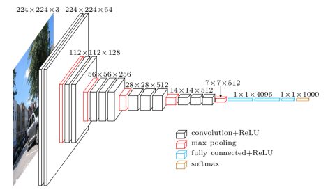

Last updated on June 19, 2026 am
本文为 SJTU-CS3612 机器学习课程的笔记整理 ，主要聚焦于公式及其推导过程。
Lecture 1: Linear Model
1.1 Linear regression
假设有 n n n { x i 1 , x i 2 , … , x i p , y i } i = 1 n \{x_{i1}, x_{i2}, \dots, x_{ip}, y_i\}_{i=1}^n { x i 1 , x i 2 , … , x i p , y i } i = 1 n
y i = β 0 1 + β 1 x i 1 + β 2 x i 2 + ⋯ + β p x i p + ε i = ∑ j = 0 p x i j β j + ε i y_i = \beta_0 1+\beta_1 x_{i 1}+\beta_2 x_{i 2} +\cdots+\beta_p x_{i p}+\varepsilon_i =\sum_{j=0}^p x_{i j} \beta_j+\varepsilon_i
y i = β 0 1 + β 1 x i 1 + β 2 x i 2 + ⋯ + β p x i p + ε i = j = 0 ∑ p x ij β j + ε i
或者表示为矩阵形式：
y = X ⊤ β + ε \mathbf{y}=\mathbf{X}^{\top} \boldsymbol{\beta}+\boldsymbol{\varepsilon}
y = X ⊤ β + ε
其中
X ⊤ = [ x 1 ⊤ x 2 ⊤ ⋮ x n ⊤ ] = [ 1 x 11 ⋯ x 1 p 1 x 21 ⋯ x 2 p ⋮ ⋮ ⋱ ⋮ 1 x n 1 ⋯ x n p ] , y = [ y 1 y 2 ⋮ y n ] , β = [ β 0 β 1 ⋮ β p ] , ε = [ ε 1 ε 2 ⋮ ε n ] \mathbf{X}^\top =\begin{bmatrix}
\mathbf{x}_1^{\top} \\
\mathbf{x}_2^{\top} \\
\vdots \\
\mathbf{x}_n^{\top}
\end{bmatrix}=\begin{bmatrix}
1 & x_{11} & \cdots & x_{1 p} \\
1 & x_{21} & \cdots & x_{2 p} \\
\vdots & \vdots & \ddots & \vdots \\
1 & x_{n 1} & \cdots & x_{n p}
\end{bmatrix}, \quad \mathbf{y}=\begin{bmatrix}
y_1 \\
y_2 \\
\vdots \\
y_n
\end{bmatrix}, \quad
\boldsymbol{\beta}=\begin{bmatrix}
\beta_0 \\
\beta_1 \\
\vdots \\
\beta_p
\end{bmatrix}, \quad \boldsymbol{\varepsilon}=\begin{bmatrix}
\varepsilon_1 \\
\varepsilon_2 \\
\vdots \\
\varepsilon_n
\end{bmatrix}
X ⊤ = x 1 ⊤ x 2 ⊤ ⋮ x n ⊤ = 1 1 ⋮ 1 x 11 x 21 ⋮ x n 1 ⋯ ⋯ ⋱ ⋯ x 1 p x 2 p ⋮ x n p , y = y 1 y 2 ⋮ y n , β = β 0 β 1 ⋮ β p , ε = ε 1 ε 2 ⋮ ε n
1.2 Logistic regression
假设有 n n n { ( X i , y i ) } i = 1 n \{(X_i, y_i)\}_{i=1}^n {( X i , y i ) } i = 1 n y i ∈ { 0 , 1 } y_i \in \{0, 1\} y i ∈ { 0 , 1 } X i X_i X i
Pr ( y i = 1 ∣ X i ) = p i , Pr ( y i = 0 ∣ X i ) = 1 − p i \operatorname{Pr}(y_i = 1|X_i) = p_i, \quad \operatorname{Pr}(y_i = 0|X_i) = 1 - p_i
Pr ( y i = 1∣ X i ) = p i , Pr ( y i = 0∣ X i ) = 1 − p i
Logistic regression 的分类公式是：
logit ( p i ) = log p i 1 − p i = X i ⊤ β \operatorname{logit}\left(p_i\right)=\log \frac{p_i}{1-p_i}=X_i^{\top} \beta
logit ( p i ) = log 1 − p i p i = X i ⊤ β
从而
p i = sigmoid ( X i ⊤ β ) = e X i ⊤ β 1 + e X i ⊤ β = 1 1 + e − X i ⊤ β p_i=\operatorname{s igmoid}\left(X_i^{\top} \beta\right)=\frac{e^{X_i^{\top} \beta}}{1+e^{X_i^{\top} \beta}}=\frac{1}{1+e^{-X_i^{\top} \beta}}
p i = sigmoid ( X i ⊤ β ) = 1 + e X i ⊤ β e X i ⊤ β = 1 + e − X i ⊤ β 1
设每个样本的真实标签为 y i ∗ y_i^* y i ∗
Pr ( y i = y i ∗ ∣ X i ) = p i y i ∗ ( 1 − p i ) 1 − y i ∗ = ( e X i ⊤ β 1 + e X i ⊤ β ) y i ∗ ( 1 − e X i ⊤ β 1 + e X i ⊤ β ) 1 − y i ∗ = e y i ∗ X i ⊤ β 1 + e X i ⊤ β \operatorname{Pr}\left(y_i=y_i^* | X_i\right)=p_i^{y_i^*}\left(1-p_i\right)^{1-y_i^*}=\left(\frac{e^{X_i^{\top} \beta}}{1+e^{X_i^{\top} \beta}}\right)^{y_i^*}\left(1-\frac{e^{X_i^{\top} \beta}}{1+e^{X_i^{\top} \beta}}\right)^{1-y_i^*}=\frac{e^{y_i^* X_i^{\top} \beta}}{1+e^{X_i^{\top} \beta}}
Pr ( y i = y i ∗ ∣ X i ) = p i y i ∗ ( 1 − p i ) 1 − y i ∗ = ( 1 + e X i ⊤ β e X i ⊤ β ) y i ∗ ( 1 − 1 + e X i ⊤ β e X i ⊤ β ) 1 − y i ∗ = 1 + e X i ⊤ β e y i ∗ X i ⊤ β
采用最大似然估计(MLE) ，目标是所有样本全部预测正确的概率最大，即
Pr ( β ) = ∏ i = 1 n p i y i ∗ ( 1 − p i ) 1 − y i ∗ = ∏ i = 1 n e y i ∗ X i ⊤ β 1 + e X i ⊤ β \operatorname{Pr}(\beta)=\prod_{i=1}^n p_i^{y_i^*}\left(1-p_i\right)^{1-y_i^*}=\prod_{i=1}^n \frac{e^{y_i^* X_i^{\top} \beta}}{1+e^{X_i^{\top} \beta}}
Pr ( β ) = i = 1 ∏ n p i y i ∗ ( 1 − p i ) 1 − y i ∗ = i = 1 ∏ n 1 + e X i ⊤ β e y i ∗ X i ⊤ β
取对数，得
log Pr ( β ) = ∑ i = 1 n [ y i ∗ X i ⊤ β − log ( 1 + exp X i ⊤ β ) ] \log \operatorname{Pr}(\beta)=\sum_{i=1}^n\left[y_i^* X_i^{\top} \beta-\log \left(1+\exp X_i^{\top} \beta\right)\right]
log Pr ( β ) = i = 1 ∑ n [ y i ∗ X i ⊤ β − log ( 1 + exp X i ⊤ β ) ]
即优化目标变为
arg max β Pr ( β ) ≡ arg max β log Pr ( β ) \argmax_\beta \operatorname{Pr}(\beta) \equiv \argmax_\beta \log \operatorname{Pr}(\beta)
β arg max Pr ( β ) ≡ β arg max log Pr ( β )
1.3 Classification
如果分类标签 y i ∈ { + 1 , − 1 } y_i \in \{+1, -1\} y i ∈ { + 1 , − 1 }
Pr ( y i = + 1 ∣ X i ) = 1 1 + e − X i ⊤ β , Pr ( y i = − 1 ∣ X i ) = 1 1 + e X i ⊤ β \operatorname{Pr}(y_i = +1|X_i) = \frac{1}{1+e^{-X_i^{\top} \beta}}, \quad
\operatorname{Pr}(y_i = -1|X_i) = \frac{1}{1+e^{X_i^{\top} \beta}}
Pr ( y i = + 1∣ X i ) = 1 + e − X i ⊤ β 1 , Pr ( y i = − 1∣ X i ) = 1 + e X i ⊤ β 1
合并起来，得到
p ( y i ) = 1 1 + e − y i X i ⊤ β p\left(y_i\right)=\frac{1}{1+e^{-y_iX_i^{\top} \beta}}
p ( y i ) = 1 + e − y i X i ⊤ β 1
1.4 Perceptron
一个基础的感知机，可以表示为：
y i = sign ( X i ⊤ β ) y_i=\operatorname{sign}\left(X_i^{\top} \beta\right)
y i = sign ( X i ⊤ β )
其中 sign ( ⋅ ) \operatorname{sign}(\cdot) sign ( ⋅ )
1.5 Three models
Generative models
给定观测变量 X X X Y Y Y 生成式模型建模联合概率 p θ ( X , Y ) p_\theta(X, Y) p θ ( X , Y ) 。用生成式模型做分类时，使用条件概率公式：
p θ ( Y ∣ X ) = p θ ( X , Y ) p θ ( X ) = p θ ( X , Y ) ∑ Y ′ p θ ( X , Y ′ ) p_\theta(Y | X)=\frac{p_\theta(X, Y)}{p_\theta(X)}=\frac{p_\theta(X, Y)}{\sum_{Y^{\prime}} p_\theta\left(X, Y^{\prime}\right)}
p θ ( Y ∣ X ) = p θ ( X ) p θ ( X , Y ) = ∑ Y ′ p θ ( X , Y ′ ) p θ ( X , Y )
假设 g θ g_\theta g θ
h ∼ N ( 0 , I ) h \sim \mathrm{N}(0, I)
h ∼ N ( 0 , I )
期望的输出为：
X = g θ ( h ) + ε X = g_\theta(h) + \varepsilon
X = g θ ( h ) + ε
输出 X X X
p θ ( X ) = ∫ p ( h ) p θ ( X ∣ h ) d h p_\theta(X)=\int p(h) p_\theta(X | h) \mathrm{d} h
p θ ( X ) = ∫ p ( h ) p θ ( X ∣ h ) d h
要增大 log p θ ( X ) \log p_\theta(X) log p θ ( X ) log p ( h ) \log p(h) log p ( h ) log p θ ( X ∣ h ) \log p_\theta(X | h) log p θ ( X ∣ h )
log p ( h ) \log p(h) log p ( h ) h ∼ N ( 0 , I ) h \sim N(0, I) h ∼ N ( 0 , I )
p ( h ) = 1 2 π exp ( − 1 2 ∥ h ∥ 2 ) p(h) = \frac{1}{\sqrt{2\pi}}\exp\left(-\frac{1}{2}\| h \|^2\right)
p ( h ) = 2 π 1 exp ( − 2 1 ∥ h ∥ 2 )
从而
log p ( h ) = − 1 2 ∥ h ∥ 2 + c o n s t a n t \log p(h)=-\frac{1}{2}\|h\|^2+\mathrm{constant}
log p ( h ) = − 2 1 ∥ h ∥ 2 + constant
log p θ ( X ∣ h ) \log p_\theta(X | h) log p θ ( X ∣ h )
X − g θ ( h ) = ε ∼ N ( 0 , σ 2 I ) X-g_\theta(h)=\varepsilon \sim \mathrm{N}\left(0, \sigma^2 \mathbf{I}\right)
X − g θ ( h ) = ε ∼ N ( 0 , σ 2 I )
那么
X ∣ h ∼ N ( g θ ( h ) , σ 2 I ) X | h \sim \mathrm{N}\left(g_\theta(h), \sigma^2 \mathbf{I}\right)
X ∣ h ∼ N ( g θ ( h ) , σ 2 I )
从而
log p θ ( X ∣ h ) = − ∥ X − g θ ( h ) ∥ 2 2 σ 2 + c o n s t a n t \log p_\theta(X | h)=-\frac{\left\|X-g_\theta(h)\right\|^2}{2 \sigma^2}+\mathrm{constant}
log p θ ( X ∣ h ) = − 2 σ 2 ∥ X − g θ ( h ) ∥ 2 + constant
Discriminative models
给定观测变量 X X X Y Y Y 判别式模型建模条件概率 P ( Y ∣ X ) P(Y|X) P ( Y ∣ X ) . 设输入为 X X X K K K f θ ( X ) f_\theta(X) f θ ( X )
p θ ( y = k ∣ X ) = p k = 1 Z ( θ ) exp ( f θ ( k ) ( X ) ) p_\theta(y=k | X)= p_k = \frac{1}{Z(\theta)} \exp (f_\theta^{(k)}(X))
p θ ( y = k ∣ X ) = p k = Z ( θ ) 1 exp ( f θ ( k ) ( X ))
其中
Z ( θ ) = ∑ k exp ( f θ ( k ) ( X ) ) Z(\theta) = \sum_k \exp (f_\theta^{(k)}(X))
Z ( θ ) = k ∑ exp ( f θ ( k ) ( X ))
Descriptive models
描述式模型建模输入数据分布 p θ ( X ) p_\theta(X) p θ ( X ) . 可以表示为：
p θ ( X ) = 1 Z ( θ ) exp ( f θ ( X ) ) p_\theta(X)=\frac{1}{Z(\theta)} \exp(f_\theta(X))
p θ ( X ) = Z ( θ ) 1 exp ( f θ ( X ))
其中
Z ( θ ) = ∫ exp ( f θ ( x ) ) d x Z(\theta) = \int \exp (f_\theta(x)) \mathrm{d} x
Z ( θ ) = ∫ exp ( f θ ( x )) d x
1.7 Loss functions
为了从数据集 { ( X i , y i ) } i = 1 n \left\{\left(X_i, y_i\right)\right\}_{i=1}^n { ( X i , y i ) } i = 1 n β \beta β
L ( β ) = ∑ i = 1 n L ( y i , X i ⊤ β ) \mathscr{L}(\beta)=\sum_{i=1}^n L\left(y_i, X_i^{\top} \beta\right)
L ( β ) = i = 1 ∑ n L ( y i , X i ⊤ β )
其中 L ( y i , X i ⊤ β ) L\left(y_i, X_i^{\top} \beta\right) L ( y i , X i ⊤ β )
Loss function for least squares regression
在线性回归中，我们常使用最小平方损失：
L ( y i , X i ⊤ β ) = ( y i − X i ⊤ β ) 2 L(y_i, X_i^{\top} \beta)=\left(y_i-X_i^{\top} \beta\right)^2
L ( y i , X i ⊤ β ) = ( y i − X i ⊤ β ) 2
这一损失函数同样可以从最大似然估计中得到. 先假设误差服从正态 分布，即
y i − X i ⊤ β = ε i ∼ N ( 0 , σ 2 I ) y_i-X_i^{\top} \beta=\varepsilon_i \sim \mathrm{N}(0,\sigma^2I)
y i − X i ⊤ β = ε i ∼ N ( 0 , σ 2 I )
那么有
y i ∣ X i ∼ N ( X i ⊤ β , σ 2 I ) y_i|X_i \sim \mathrm{N}(X_i^\top \beta, \sigma^2I)
y i ∣ X i ∼ N ( X i ⊤ β , σ 2 I )
即
P r ( y i ∣ X i , β ) = 1 2 π σ exp [ − ( y i − X i ⊤ β ) 2 2 σ 2 ] \mathrm{Pr}(y_i|X_i, \beta) = \frac{1}{\sqrt{2\pi} \sigma} \exp\left[-\frac{(y_i - X_i^\top \beta)^2}{2\sigma^2}\right]
Pr ( y i ∣ X i , β ) = 2 π σ 1 exp [ − 2 σ 2 ( y i − X i ⊤ β ) 2 ]
取负对数似然为损失函数，有：
L ( y i , X i ⊤ β ) = − log Pr ( y i ∣ X i , β ) = ( y i − X i ⊤ β ) 2 2 σ 2 + c o n s t a n t L(y_i, X_i^{\top} \beta)= -\log \operatorname{Pr}(y_i |X_i, \beta) = \frac{(y_i-X_i^{\top} \beta)^2}{2\sigma^2}+\mathrm{constant}
L ( y i , X i ⊤ β ) = − log Pr ( y i ∣ X i , β ) = 2 σ 2 ( y i − X i ⊤ β ) 2 + constant
从而
L ( β ) = ∑ i = 1 n L ( y i , X i ⊤ β ) = 2 σ 2 ∑ i = 1 n [ ( y i − X i ⊤ β ) 2 2 σ 2 + c o n s t a n t ] = ∑ i = 1 n ( y i − X i ⊤ β ) 2 \mathscr{L}(\beta)=\sum_{i=1}^n L(y_i, X_i^{\top} \beta)=2\sigma^2 \sum_{i=1}^n\left[\frac{(y_i-X_i^{\top} \beta)^2}{2\sigma^2}+\mathrm{constant}\right]=\sum_{i=1}^n(y_i-X_i^{\top} \beta)^2
L ( β ) = i = 1 ∑ n L ( y i , X i ⊤ β ) = 2 σ 2 i = 1 ∑ n [ 2 σ 2 ( y i − X i ⊤ β ) 2 + constant ] = i = 1 ∑ n ( y i − X i ⊤ β ) 2
因此，最小二乘法的本质是最大似然估计.
Loss function for robust linear regression
考虑到最小平方损失对 outliers 较为敏感，可以将损失函数中的平方换为绝对值，即：
L ( y i , X i ⊤ β ) = ∣ y i − X i ⊤ β ∣ L(y_i, X_i^{\top} \beta)=| y_i-X_i^{\top} \beta |
L ( y i , X i ⊤ β ) = ∣ y i − X i ⊤ β ∣
将两种损失结合，得到 Huber loss：
L ( y i , X i ⊤ β ) = { 1 2 ( y i − X i ⊤ β ) 2 , if ∣ y i − X i ⊤ β ∣ ≤ δ δ ∣ y i − X i ⊤ β ∣ − δ 2 2 , otherwise L(y_i, X_i^{\top} \beta)= \begin{cases}\frac{1}{2}(y_i-X_i^{\top} \beta)^2, & \text { if }|y_i-X_i^{\top} \beta| \leq \delta \\ \delta|y_i-X_i^{\top} \beta|-\frac{\delta^2}{2}, & \text { otherwise }\end{cases}
L ( y i , X i ⊤ β ) = { 2 1 ( y i − X i ⊤ β ) 2 , δ ∣ y i − X i ⊤ β ∣ − 2 δ 2 , if ∣ y i − X i ⊤ β ∣ ≤ δ otherwise
其中 δ \delta δ δ \delta δ
Loss function for logistic regression with 0/1 responses
前面推导过，当标签 y i ∈ { 0 , 1 } y_i \in \{0, 1\} y i ∈ { 0 , 1 }
Pr ( y i ∣ X i , β ) = exp ( y i X i ⊤ β ) 1 + exp ( X i ⊤ β ) \operatorname{Pr}\left(y_i | X_i, \beta\right) =\frac{\exp (y_i X_i^\top \beta)}{1+\exp (X_i^{\top} \beta)}
Pr ( y i ∣ X i , β ) = 1 + exp ( X i ⊤ β ) exp ( y i X i ⊤ β )
为了最大化这一概率，取负对数似然为损失函数：
L ( y i , X i ⊤ β ) = − log Pr ( y i ∣ X i , β ) = − [ y i X i ⊤ β − log ( 1 + exp ( X i ⊤ β ) ) ] L(y_i, X_i^{\top} \beta)= -\log \operatorname{Pr}(y_i |X_i, \beta) = -\left[y_i X_i^{\top} \beta-\log (1+\exp (X_i^{\top} \beta))\right]
L ( y i , X i ⊤ β ) = − log Pr ( y i ∣ X i , β ) = − [ y i X i ⊤ β − log ( 1 + exp ( X i ⊤ β )) ]
Loss function for logistic regression with ± \pm ±
前面推导过，当标签 y i ∈ { + 1 , − 1 } y_i \in \{+1, -1\} y i ∈ { + 1 , − 1 }
Pr ( y i ∣ X i , β ) = 1 1 + exp ( − y i X i ⊤ β ) \operatorname{Pr}\left(y_i | X_i, \beta\right) =\frac{1}{1+\exp (-y_i X_i^{\top} \beta)}
Pr ( y i ∣ X i , β ) = 1 + exp ( − y i X i ⊤ β ) 1
同样取负对数似然为损失函数，有：
L ( y i , X i ⊤ β ) = − log Pr ( y i ∣ X i , β ) = log [ 1 + exp ( − y i X i ⊤ β ) ] L(y_i, X_i^{\top} \beta)= -\log \operatorname{Pr}(y_i |X_i, \beta) = \log \left[1+\exp \left(-y_i X_i^{\top} \beta\right)\right]
L ( y i , X i ⊤ β ) = − log Pr ( y i ∣ X i , β ) = log [ 1 + exp ( − y i X i ⊤ β ) ]
该损失被称为 logistic loss.
Loss functions for classification
对于 y i ∈ { + 1 , − 1 } y_i \in \{+1, -1\} y i ∈ { + 1 , − 1 }
Logistic loss = log ( 1 + exp ( − y i X i ⊤ β ) ) , Exponential loss = exp ( − y i X i ⊤ β ) , Hinge loss = max ( 0 , 1 − y i X i ⊤ β ) , Zero-one loss = 1 ( y i X i ⊤ β < 0 ) \begin{aligned}
& \text { Logistic loss }=\log \left(1+\exp \left(-y_i X_i^{\top} \beta\right)\right), \\
& \text { Exponential loss }=\exp \left(-y_i X_i^{\top} \beta\right), \\
& \text { Hinge loss }=\max \left(0,1-y_i X_i^{\top} \beta\right), \\
& \text { Zero-one loss }=1\left(y_i X_i^{\top} \beta<0\right)
\end{aligned}
Logistic loss = log ( 1 + exp ( − y i X i ⊤ β ) ) , Exponential loss = exp ( − y i X i ⊤ β ) , Hinge loss = max ( 0 , 1 − y i X i ⊤ β ) , Zero-one loss = 1 ( y i X i ⊤ β < 0 )
图中横轴表示 m i = y i X i ⊤ β m_i = y_iX_i^\top\beta m i = y i X i ⊤ β L ( y i , X i ⊤ β ) L(y_i, X_i^\top\beta) L ( y i , X i ⊤ β ) y i y_i y i X i ⊤ β X_i^\top\beta X i ⊤ β y i = + 1 y_i = +1 y i = + 1 X i ⊤ β X_i^\top\beta X i ⊤ β y i = − 1 y_i = -1 y i = − 1 X i ⊤ β X_i^\top\beta X i ⊤ β m i = y i X i ⊤ β m_i = y_iX_i^\top\beta m i = y i X i ⊤ β m i m_i m i
1.8 Least Squares
考虑线性模型 Y = X β + ε Y = X\beta + \varepsilon Y = Xβ + ε
β ^ = arg min β L ( β ) = arg min β ∥ Y − X β ∥ 2 \hat{\beta}=\argmin_\beta L(\beta) = \argmin_\beta\Vert Y-X \beta\Vert^2
β ^ = β arg min L ( β ) = β arg min ∥ Y − Xβ ∥ 2
考虑到 L ( β ) L(\beta) L ( β ) β = β ^ \beta = \hat{\beta} β = β ^
∂ ∂ β L ( β ) = 0 \frac{\partial}{\partial \beta} L(\beta) = 0
∂ β ∂ L ( β ) = 0
下面对 L ( β ) L(\beta) L ( β )
L ( β ) = ( Y − X β ) ⊤ ( Y − X β ) = Y ⊤ Y − Y ⊤ X β − β ⊤ X ⊤ Y + β ⊤ X ⊤ X β \begin{aligned}
L(\beta) & = (Y - X\beta)^\top(Y - X\beta) \\
& = Y^{\top} Y-Y^{\top} X \beta-\beta^{\top} X^{\top} Y+\beta^{\top} X^{\top} X \beta \\
\end{aligned}
L ( β ) = ( Y − Xβ ) ⊤ ( Y − Xβ ) = Y ⊤ Y − Y ⊤ Xβ − β ⊤ X ⊤ Y + β ⊤ X ⊤ Xβ
考虑到 β ⊤ X ⊤ Y \beta^{\top} X^{\top} Y β ⊤ X ⊤ Y β ⊤ X ⊤ Y = Y ⊤ X β \beta^{\top} X^{\top} Y=Y^{\top} X \beta β ⊤ X ⊤ Y = Y ⊤ Xβ
L ( β ) = Y ⊤ Y − 2 Y ⊤ X β + β ⊤ X ⊤ X β L(\beta) = Y^{\top} Y-2 Y^{\top} X \beta+\beta^{\top} X^{\top} X \beta
L ( β ) = Y ⊤ Y − 2 Y ⊤ Xβ + β ⊤ X ⊤ Xβ
假设 A A A
∂ ∂ β ( β ⊤ A β ) = 2 A β \frac{\partial}{\partial \beta}\left(\beta^{\top} A \beta\right)=2 A \beta ∂ β ∂ ( β ⊤ A β ) = 2 A β
∂ ∂ β ( b ⊤ β ) = b \frac{\partial}{\partial \beta}\left(b^{\top} \beta\right)=b ∂ β ∂ ( b ⊤ β ) = b
根据矩阵求导法则，有：
∂ L ∂ β = − 2 X ⊤ Y + 2 X ⊤ X β \frac{\partial L}{\partial \beta}=-2 X^{\top} Y+2 X^{\top} X \beta
∂ β ∂ L = − 2 X ⊤ Y + 2 X ⊤ Xβ
令 ∂ L ∂ β = 0 \dfrac{\partial L}{\partial \beta} = 0 ∂ β ∂ L = 0
2 X ⊤ ( Y − X β ) = 0 \begin{equation}
2 X^\top(Y-X \beta)=0
\end{equation}
2 X ⊤ ( Y − Xβ ) = 0
如果 X X X X ⊤ X X^\top X X ⊤ X
β ^ = ( X ⊤ X ) − 1 X ⊤ Y \hat{\beta}=\left(X^\top X\right)^{-1} X^\top Y
β ^ = ( X ⊤ X ) − 1 X ⊤ Y
因此，
Y ^ = X β ^ = X ( X ⊤ X ) − 1 X ⊤ Y \hat{Y}=X \hat{\beta}=X\left(X^\top X\right)^{-1} X^\top Y
Y ^ = X β ^ = X ( X ⊤ X ) − 1 X ⊤ Y
可以看出，最小二乘法的实质是将 Y Y Y X X X X β ^ X\hat{\beta} X β ^ ε = Y − X β \varepsilon = Y - X\beta ε = Y − Xβ
Distribution of β ^ \hat{\beta} β ^
下面讨论训练得到的参数 β ^ \hat{\beta} β ^ β true \beta_\text{true} β true
β ^ = ( X ⊤ X ) − 1 X ⊤ Y = ( X ⊤ X ) − 1 X ⊤ ( X β true + ε ) = β true + ( X ⊤ X ) − 1 X ⊤ ε \begin{aligned}
\hat{\beta} & =(X^\top X)^{-1} X^\top Y \\
& =(X^\top X)^{-1} X^\top(X \beta_{\text {true}}+\varepsilon) \\
& =\beta_{\text {true}}+(X^\top X)^{-1} X^\top \varepsilon
\end{aligned}
β ^ = ( X ⊤ X ) − 1 X ⊤ Y = ( X ⊤ X ) − 1 X ⊤ ( X β true + ε ) = β true + ( X ⊤ X ) − 1 X ⊤ ε
可以看出，β ^ \hat{\beta} β ^
E [ β ^ ] = β true \mathbb{E}[\hat{\beta}]=\beta_{\text {true}}
E [ β ^ ] = β true
协方差矩阵为：
V a r ( β ^ ) = E [ ( β ^ − E [ β ^ ] ) ( β ^ − E [ β ^ ] ) ⊤ ] = E [ ( ( X ⊤ X ) − 1 X ⊤ ε ) ( ( X ⊤ X ) − 1 X ⊤ ε ) ⊤ ] = ( X ⊤ X ) − 1 X ⊤ E [ ε ε ⊤ ] X ( X ⊤ X ) − 1 , ⊤ = ( X ⊤ X ) − 1 X ⊤ ⋅ σ 2 I ⋅ X ( X ⊤ X ) − 1 = σ 2 ( X ⊤ X ) − 1 \begin{aligned}
\mathrm{Var}(\hat{\beta}) & = \mathbb{E}\left[(\hat{\beta} - \mathbb{E}[\hat{\beta}])(\hat{\beta} - \mathbb{E}[\hat{\beta}])^\top\right] \\
& = \mathbb{E}\left[((X^\top X)^{-1} X^\top \varepsilon )((X^\top X)^{-1} X^\top \varepsilon)^\top\right] \\
& = (X^\top X)^{-1} X^\top \mathbb{E}[\varepsilon \varepsilon^\top] X (X^\top X)^{-1, \top} \\
& = (X^\top X)^{-1} X^\top \cdot \sigma^2 I \cdot X (X^\top X)^{-1} \\
& = \sigma^2 (X^\top X)^{-1}
\end{aligned}
Var ( β ^ ) = E [ ( β ^ − E [ β ^ ]) ( β ^ − E [ β ^ ] ) ⊤ ] = E [ (( X ⊤ X ) − 1 X ⊤ ε ) (( X ⊤ X ) − 1 X ⊤ ε ) ⊤ ] = ( X ⊤ X ) − 1 X ⊤ E [ ε ε ⊤ ] X ( X ⊤ X ) − 1 , ⊤ = ( X ⊤ X ) − 1 X ⊤ ⋅ σ 2 I ⋅ X ( X ⊤ X ) − 1 = σ 2 ( X ⊤ X ) − 1
因此，
β ^ ∼ N ( β true , σ 2 ( X ⊤ X ) − 1 ) \hat{\beta} \sim N\left(\beta_\text{true}, \sigma^2 (X^\top X)^{-1}\right)
β ^ ∼ N ( β true , σ 2 ( X ⊤ X ) − 1 )
1.9 Kullback-Leibler divergence and cross entropy
Coding and entropy
一个分布 p ( x ) p(x) p ( x )
H ( p ) = E p [ − log p ( X ) ] = ∑ x p ( x ) [ − log p ( x ) ] H(p)=\mathbb{E}_p[-\log p(X)]=\sum_x p(x)[-\log p(x)]
H ( p ) = E p [ − log p ( X )] = x ∑ p ( x ) [ − log p ( x )]
熵等于用 − log p ( x ) -\log p(x) − log p ( x )
Kullback-Leibler divergence and cross entropy
交叉熵，是对于分布 p ( x ) p(x) p ( x ) q ( x ) q(x) q ( x ) − log q ( x ) -\log q(x) − log q ( x )
C E ( p ∣ q ) = E p [ − log q ( X ) ] = − ∑ x p ( x ) log q ( x ) \mathrm{CE}(p | q) = \mathbb{E}_p[-\log q(X)]=-\sum_x p(x) \log q(x)
CE ( p ∣ q ) = E p [ − log q ( X )] = − x ∑ p ( x ) log q ( x )
不难得到，交叉熵不小于熵，即：
C E ( p ∣ q ) ≥ H ( p ) \mathrm{CE}(p | q) \ge H(p)
CE ( p ∣ q ) ≥ H ( p )
当且仅当 p ( x ) = q ( x ) p(x) = q(x) p ( x ) = q ( x )
定义 KL 散度为交叉熵和熵的差，即：
K L ( p ∣ q ) = C E ( p ∣ q ) − H ( p ) = E p [ log p ( X ) q ( X ) ] = ∑ x p ( x ) log p ( x ) q ( x ) ≥ 0 \mathrm{KL}(p | q) = \mathrm{CE}(p | q) - H(p) = \mathbb{E}_p\left[\log \frac{p(X)}{q(X)}\right] = \sum_x p(x) \log \frac{p(x)}{q(x)} \ge 0
KL ( p ∣ q ) = CE ( p ∣ q ) − H ( p ) = E p [ log q ( X ) p ( X ) ] = x ∑ p ( x ) log q ( x ) p ( x ) ≥ 0
当且仅当 p ( x ) = q ( x ) p(x) = q(x) p ( x ) = q ( x ) p ( x ) p(x) p ( x ) q ( x ) q(x) q ( x )
KL ( p ∣ q ) ≠ KL ( q ∣ p ) \operatorname{KL}(p | q) \neq \operatorname{KL}(q | p)
KL ( p ∣ q ) = KL ( q ∣ p )
对于条件概率分布，KL 散度的定义是：
KL ( p ( y ∣ x ) ∣ q ( y ∣ x ) ) = def E p ( x , y ) [ log p ( Y ∣ X ) q ( Y ∣ X ) ] = E p ( x ) E p ( y ∣ x ) [ log p ( Y ∣ X ) q ( Y ∣ X ) ] \operatorname{KL}(p(y | x) | q(y | x)) \stackrel{\text { def }}{=} \mathbb{E}_{p(x, y)}\left[\log \frac{p(Y | X)}{q(Y | X)}\right] = \mathbb{E}_{p(x)} \mathbb{E}_{p(y | x)}\left[\log \frac{p(Y | X)}{q(Y | X)}\right]
KL ( p ( y ∣ x ) ∣ q ( y ∣ x )) = def E p ( x , y ) [ log q ( Y ∣ X ) p ( Y ∣ X ) ] = E p ( x ) E p ( y ∣ x ) [ log q ( Y ∣ X ) p ( Y ∣ X ) ]
对于多变量分布，KL 散度为：
KL ( p ( x , y ) ∣ q ( x , y ) ) = KL ( p ( x ) ∣ q ( x ) ) + KL ( p ( y ∣ x ) ∣ q ( y ∣ x ) ) \begin{equation}
\operatorname{KL}(p(x, y) | q(x, y))=\operatorname{KL}(p(x) | q(x))+\operatorname{KL}(p(y | x) | q(y | x))
\end{equation}
KL ( p ( x , y ) ∣ q ( x , y )) = KL ( p ( x ) ∣ q ( x )) + KL ( p ( y ∣ x ) ∣ q ( y ∣ x ))
1.10 Maximum likelihood
下面证明最大似然估计的正确性. 优化目标是：
L ( θ ) = 1 n ∑ i = 1 n log p θ ( y i ∣ X i ) \mathscr{L}(\theta)=\frac{1}{n} \sum_{i=1}^n \log p_\theta(y_i | X_i)
L ( θ ) = n 1 i = 1 ∑ n log p θ ( y i ∣ X i )
设 P data ( X , y ) P_\text{data}(X, y) P data ( X , y )
max θ L ( θ ) = max θ 1 n ∑ i = 1 n log p θ ( y i ∣ X i ) = max θ E P data [ log p θ ( y ∣ X ) ] = min θ { − E P data [ log p θ ( y ∣ X ) ] } \begin{aligned}
\max_\theta \mathscr{L}(\theta) & = \max _\theta \frac{1}{n} \sum_{i=1}^n \log p_\theta(y_i | X_i) \\
& = \max _\theta \mathbb{E}_{P_{\text {data}}}\left[\log p_\theta(y | X)\right] \\
& = \min _\theta\left\{-\mathbb{E}_{P_{\text {data}}}\left[\log p_\theta(y | X)\right]\right\} \\
\end{aligned}
θ max L ( θ ) = θ max n 1 i = 1 ∑ n log p θ ( y i ∣ X i ) = θ max E P data [ log p θ ( y ∣ X ) ] = θ min { − E P data [ log p θ ( y ∣ X ) ] }
由于 E P data [ log P data ( y ∣ X ) ] \mathbb{E}_{P_{\text {data}}}\left[\log P_{\text {data}}(y | X)\right] E P data [ log P data ( y ∣ X ) ] θ \theta θ
max θ L ( θ ) = min θ E P data [ log P data ( y ∣ X ) ] − E P data [ log p θ ( y ∣ X ) ] = min θ K L ( P data ( y ∣ X ) ∣ p θ ( y ∣ X ) ) \begin{aligned}
\max_\theta \mathscr{L}(\theta) & = \min _\theta \mathbb{E}_{P_{\text {data }}}\left[\log P_{\text {data}}(y | X)\right]-\mathbb{E}_{P_{\text {data}}}\left[\log p_\theta(y | X)\right] \\
& = \min _\theta \mathrm{KL}\left(P_{\text {data}}(y | X) | p_\theta(y | X)\right)
\end{aligned}
θ max L ( θ ) = θ min E P data [ log P data ( y ∣ X ) ] − E P data [ log p θ ( y ∣ X ) ] = θ min KL ( P data ( y ∣ X ) ∣ p θ ( y ∣ X ) )
可以看出，最大似然估计的实质是：最小化预测分布和真实数据分布的 KL 散度，即让预测分布尽可能接近真实数据分布 .
1.11 Kullback-Leibler of conditionals
下面证明多变量分布的 KL 散度公式，即式 (2).
K L ( p ( x , y ) ∣ q ( x , y ) ) = E p [ log p ( x , y ) q ( x , y ) ] = E p [ log p ( x ) p ( y ∣ x ) q ( x ) q ( y ∣ x ) ] = E p [ log p ( x ) q ( x ) ] + E p [ log p ( y ∣ x ) q ( y ∣ x ) ] = K L ( p ( x ) ∣ q ( x ) ) + K L ( p ( y ∣ x ) ∣ q ( y ∣ x ) ) \begin{aligned}
\mathrm{KL}(p(x, y) | q(x, y)) & =\mathbb{E}_p\left[\log \frac{p(x, y)}{q(x, y)}\right] \\
& =\mathbb{E}_p\left[\log \frac{p(x) p(y | x)}{q(x) q(y | x)}\right] \\
& =\mathbb{E}_p\left[\log \frac{p(x)}{q(x)}\right]+\mathbb{E}_p\left[\log \frac{p(y | x)}{q(y | x)}\right] \\
& =\mathrm{KL}(p(x) | q(x))+\mathrm{KL}(p(y | x) | q(y | x))
\end{aligned}
KL ( p ( x , y ) ∣ q ( x , y )) = E p [ log q ( x , y ) p ( x , y ) ] = E p [ log q ( x ) q ( y ∣ x ) p ( x ) p ( y ∣ x ) ] = E p [ log q ( x ) p ( x ) ] + E p [ log q ( y ∣ x ) p ( y ∣ x ) ] = KL ( p ( x ) ∣ q ( x )) + KL ( p ( y ∣ x ) ∣ q ( y ∣ x ))
1.13 Gradient of log-likelihood
Discriminative model
前面提到过，判别式模型的输出为：
p θ ( y = k ∣ X ) = p k = 1 Z ( θ ) exp ( f θ ( k ) ( X ) ) p_\theta(y=k | X)=p_k=\frac{1}{Z(\theta)} \exp (f_\theta^{(k)}(X))
p θ ( y = k ∣ X ) = p k = Z ( θ ) 1 exp ( f θ ( k ) ( X ))
其中
Z ( θ ) = ∑ k exp ( f θ ( k ) ( X ) ) Z(\theta)=\sum_k \exp (f_\theta^{(k)}(X))
Z ( θ ) = k ∑ exp ( f θ ( k ) ( X ))
对对数概率求梯度，有：
∂ ∂ θ log p θ ( y ∣ X ) = ∂ ∂ θ f θ ( k ) ( X ) − ∂ ∂ θ log Z ( θ ) = ∂ ∂ θ f θ ( k ) ( X ) − 1 Z ( θ ) ∂ ∂ θ Z ( θ ) = ∂ ∂ θ f θ ( k ) ( X ) − 1 Z ( θ ) ∂ ∂ θ [ ∑ k ′ exp ( f θ ( k ′ ) ( X ) ) ] = ∂ ∂ θ f θ ( k ) ( X ) − [ ∑ k ′ exp ( f θ ( k ′ ) ( X ) ) Z ( θ ) ∂ ∂ θ f θ ( k ′ ) ( X ) ] = ∂ ∂ θ f θ ( k ) ( X ) − [ ∑ k ′ p k ′ ∂ ∂ θ f θ ( k ′ ) ( X ) ] = ∑ k ′ ( 1 ( y = k ′ ) − p k ′ ) ∂ ∂ θ f θ ( k ′ ) ( X ) = ∂ ∂ θ f θ ( X ) ⊤ ( Y − p ) = ∂ ∂ θ f θ ( X ) ⊤ ( Y − E θ ( Y ∣ X ) ) \begin{aligned}
\frac{\partial}{\partial \theta} \log p_\theta(y | X) & =\frac{\partial}{\partial \theta} f_\theta^{(k)}(X)-\frac{\partial}{\partial \theta} \log Z(\theta) \\
& =\frac{\partial}{\partial \theta} f_\theta^{(k)}(X)-\frac{1}{Z(\theta)} \frac{\partial}{\partial \theta} Z(\theta) \\
& =\frac{\partial}{\partial \theta} f_\theta^{(k)}(X)-\frac{1}{Z(\theta)} \frac{\partial}{\partial \theta}\left[\sum_{k^{\prime}} \exp (f_\theta^{(k^{\prime})}(X))\right] \\
& =\frac{\partial}{\partial \theta} f_\theta^{(k)}(X)-\left[\sum_{k^{\prime}} \frac{\exp (f_\theta^{(k^{\prime})}(X))}{Z(\theta)} \frac{\partial}{\partial \theta} f_\theta^{(k^{\prime})}(X)\right] \\
& =\frac{\partial}{\partial \theta} f_\theta^{(k)}(X)-\left[\sum_{k^{\prime}} p_{k^{\prime}} \frac{\partial}{\partial \theta} f_\theta^{(k^{\prime})}(X)\right] \\
& =\sum_{k^{\prime}}\left(1(y=k^{\prime})-p_{k^{\prime}}\right) \frac{\partial}{\partial \theta} f_\theta^{(k^{\prime})}(X) \\
& =\frac{\partial}{\partial \theta} f_\theta(X)^{\top}(Y-p) \\
& =\frac{\partial}{\partial \theta} f_\theta(X)^{\top}\left(Y-\mathbb{E}_\theta(Y | X)\right)
\end{aligned}
∂ θ ∂ log p θ ( y ∣ X ) = ∂ θ ∂ f θ ( k ) ( X ) − ∂ θ ∂ log Z ( θ ) = ∂ θ ∂ f θ ( k ) ( X ) − Z ( θ ) 1 ∂ θ ∂ Z ( θ ) = ∂ θ ∂ f θ ( k ) ( X ) − Z ( θ ) 1 ∂ θ ∂ [ k ′ ∑ exp ( f θ ( k ′ ) ( X )) ] = ∂ θ ∂ f θ ( k ) ( X ) − [ k ′ ∑ Z ( θ ) exp ( f θ ( k ′ ) ( X )) ∂ θ ∂ f θ ( k ′ ) ( X ) ] = ∂ θ ∂ f θ ( k ) ( X ) − [ k ′ ∑ p k ′ ∂ θ ∂ f θ ( k ′ ) ( X ) ] = k ′ ∑ ( 1 ( y = k ′ ) − p k ′ ) ∂ θ ∂ f θ ( k ′ ) ( X ) = ∂ θ ∂ f θ ( X ) ⊤ ( Y − p ) = ∂ θ ∂ f θ ( X ) ⊤ ( Y − E θ ( Y ∣ X ) )
其中 Y Y Y y y y
Y = [ Y 1 , Y 2 , … , Y n ] , Y k ′ = { 1 , k ′ = k 0 , k ′ ≠ k Y=\left[Y_1, Y_2, \ldots, Y_n\right], \quad Y_{k^{\prime}}=\left\{\begin{array}{cc}
1, & k^{\prime}=k \\
0, & k^{\prime} \neq k
\end{array}\right.
Y = [ Y 1 , Y 2 , … , Y n ] , Y k ′ = { 1 , 0 , k ′ = k k ′ = k
由此可见，判别式模型从误差中学习(learn from errors) .
Descriptive model
前面提到，描述式模型建模数据分布，即：
p θ ( X ) = 1 Z ( θ ) exp ( f θ ( X ) ) p_\theta(X)=\frac{1}{Z(\theta)} \exp (f_\theta(X))
p θ ( X ) = Z ( θ ) 1 exp ( f θ ( X ))
其中
Z ( θ ) = ∫ exp ( f θ ( x ) ) d x Z(\theta)=\int \exp (f_\theta(x)) \mathrm{d} x
Z ( θ ) = ∫ exp ( f θ ( x )) d x
对对数概率求导，有：
∂ ∂ θ log p θ ( X ) = ∂ ∂ θ f θ ( X ) − ∂ ∂ θ log Z ( θ ) = ∂ ∂ θ f θ ( X ) − 1 Z ( θ ) ∂ ∂ θ Z ( θ ) = ∂ ∂ θ f θ ( X ) − 1 Z ( θ ) ∫ exp ( f θ ( X ) ) ∂ ∂ θ f θ ( X ) d x = ∂ ∂ θ f θ ( X ) − ∫ 1 Z ( θ ) exp ( f θ ( X ) ) ∂ ∂ θ f θ ( X ) d x = ∂ ∂ θ f θ ( X ) − ∑ X p θ ( X ) ∂ ∂ θ f θ ( X ) = ∂ ∂ θ f θ ( X ) − E θ [ ∂ ∂ θ f θ ( X ) ] \begin{aligned}
\frac{\partial}{\partial \theta} \log p_\theta(X) & =\frac{\partial}{\partial \theta} f_\theta(X)-\frac{\partial}{\partial \theta} \log Z(\theta) \\
& =\frac{\partial}{\partial \theta} f_\theta(X)-\frac{1}{Z(\theta)} \frac{\partial}{\partial \theta} Z(\theta) \\
& =\frac{\partial}{\partial \theta} f_\theta(X)-\frac{1}{Z(\theta)} \int \exp (f_\theta(X)) \frac{\partial}{\partial \theta} f_\theta(X) \mathrm{d} x \\
& =\frac{\partial}{\partial \theta} f_\theta(X)-\int \frac{1}{Z(\theta)} \exp \left(f_\theta(X)\right) \frac{\partial}{\partial \theta} f_\theta(X) \mathrm{d} x \\
& =\frac{\partial}{\partial \theta} f_\theta(X)-\sum_X p_\theta(X) \frac{\partial}{\partial \theta} f_\theta(X) \\
& =\frac{\partial}{\partial \theta} f_\theta(X)-\mathbb{E}_\theta\left[\frac{\partial}{\partial \theta} f_\theta(X)\right]
\end{aligned}
∂ θ ∂ log p θ ( X ) = ∂ θ ∂ f θ ( X ) − ∂ θ ∂ log Z ( θ ) = ∂ θ ∂ f θ ( X ) − Z ( θ ) 1 ∂ θ ∂ Z ( θ ) = ∂ θ ∂ f θ ( X ) − Z ( θ ) 1 ∫ exp ( f θ ( X )) ∂ θ ∂ f θ ( X ) d x = ∂ θ ∂ f θ ( X ) − ∫ Z ( θ ) 1 exp ( f θ ( X ) ) ∂ θ ∂ f θ ( X ) d x = ∂ θ ∂ f θ ( X ) − X ∑ p θ ( X ) ∂ θ ∂ f θ ( X ) = ∂ θ ∂ f θ ( X ) − E θ [ ∂ θ ∂ f θ ( X ) ]
Generative model
对于生成式模型 p θ ( h , X ) p_\theta(h, X) p θ ( h , X )
∂ ∂ θ log p θ ( X ) = 1 p θ ( X ) ∂ ∂ θ ∫ p θ ( h , X ) d h = 1 p θ ( X ) ∫ [ ∂ ∂ θ p θ ( h , X ) ] d h = 1 p θ ( X ) ∫ [ ∂ ∂ θ log p θ ( h , X ) ] p θ ( h , X ) d h = ∫ [ ∂ ∂ θ log p θ ( h , X ) ] p θ ( h , X ) p θ ( X ) d h = ∫ [ ∂ ∂ θ log p θ ( h , X ) ] p θ ( h ∣ X ) d h = E p θ ( h ∣ X ) [ ∂ ∂ θ log p θ ( h , X ) ] \begin{aligned}
\frac{\partial}{\partial \theta} \log p_\theta(X) & =\frac{1}{p_\theta(X)} \frac{\partial}{\partial \theta} \int p_\theta(h, X) \mathrm{d} h \\
& =\frac{1}{p_\theta(X)} \int\left[\frac{\partial}{\partial \theta} p_\theta(h, X)\right] \mathrm{d} h \\
& =\frac{1}{p_\theta(X)} \int\left[\frac{\partial}{\partial \theta} \log p_\theta(h, X)\right] p_\theta(h, X) \mathrm{d} h \\
& =\int\left[\frac{\partial}{\partial \theta} \log p_\theta(h, X)\right] \frac{p_\theta(h, X)}{p_\theta(X)} \mathrm{d} h \\
& =\int\left[\frac{\partial}{\partial \theta} \log p_\theta(h, X)\right] p_\theta(h | X) \mathrm{d} h \\
& =\mathbb{E}_{p_\theta(h | X)}\left[\frac{\partial}{\partial \theta} \log p_\theta(h, X)\right]
\end{aligned}
∂ θ ∂ log p θ ( X ) = p θ ( X ) 1 ∂ θ ∂ ∫ p θ ( h , X ) d h = p θ ( X ) 1 ∫ [ ∂ θ ∂ p θ ( h , X ) ] d h = p θ ( X ) 1 ∫ [ ∂ θ ∂ log p θ ( h , X ) ] p θ ( h , X ) d h = ∫ [ ∂ θ ∂ log p θ ( h , X ) ] p θ ( X ) p θ ( h , X ) d h = ∫ [ ∂ θ ∂ log p θ ( h , X ) ] p θ ( h ∣ X ) d h = E p θ ( h ∣ X ) [ ∂ θ ∂ log p θ ( h , X ) ]
其中
p θ ( h , X ) = p ( h ) ⋅ p θ ( X ∣ h ) = N ( h ∣ 0 , I ) ⋅ N ( X ∣ g θ ( h ) , σ 2 I ) p_\theta(h, X) = p(h) \cdot p_\theta(X | h) = \mathrm{N}(h | \mathbf{0}, \mathbf{I}) \cdot \mathrm{N}\left(X | g_\theta(h), \sigma^2 \mathbf{I}\right)
p θ ( h , X ) = p ( h ) ⋅ p θ ( X ∣ h ) = N ( h ∣ 0 , I ) ⋅ N ( X ∣ g θ ( h ) , σ 2 I )
log p θ ( h , X ) = − 1 2 σ 2 ∥ X − g θ ( h ) ∥ 2 − 1 2 ∥ h ∥ 2 + c o n s t a n t \log p_\theta\left(h, X\right)=-\frac{1}{2 \sigma^2}\left\|X-g_\theta\left(h\right)\right\|^2-\frac{1}{2}\left\|h\right\|^2+\mathrm{constant}
log p θ ( h , X ) = − 2 σ 2 1 ∥ X − g θ ( h ) ∥ 2 − 2 1 ∥ h ∥ 2 + constant
Optimizing logistic regression via gradient ascent
在 logistic regression 中，对数似然函数是：
l ( β ) = log L ( β ) = ∑ i = 1 n [ y i X i ⊤ β − log ( 1 + exp X i ⊤ β ) ] l(\beta)=\log L(\beta)=\sum_{i=1}^n\left[y_i X_i^{\top} \beta-\log \left(1+\exp X_i^{\top} \beta\right)\right]
l ( β ) = log L ( β ) = i = 1 ∑ n [ y i X i ⊤ β − log ( 1 + exp X i ⊤ β ) ]
为了最大化 l ( β ) l(\beta) l ( β )
l ′ ( β ) = ∑ i = 1 n [ y i X i − e X i ⊤ β 1 + e X i ⊤ β X i ] = ∑ i = 1 n ( y i − p i ) X i l^{\prime}(\beta)=\sum_{i=1}^n\left[y_i X_i-\frac{e^{X_i^{\top} \beta}}{1+e^{X_i^{\top} \beta}} X_i\right]=\sum_{i=1}^n\left(y_i-p_i\right) X_i
l ′ ( β ) = i = 1 ∑ n [ y i X i − 1 + e X i ⊤ β e X i ⊤ β X i ] = i = 1 ∑ n ( y i − p i ) X i
其中
p i = e X i ⊤ β 1 + e X i ⊤ β = 1 1 + e − X i ⊤ β p_i=\frac{e^{X_i^{\top} \beta}}{1+e^{X_i^{\top} \beta}}=\frac{1}{1+e^{-X_i^{\top} \beta}}
p i = 1 + e X i ⊤ β e X i ⊤ β = 1 + e − X i ⊤ β 1
我们用这个梯度更新 β \beta β l ( β ) l(\beta) l ( β )
β ( t + 1 ) = β ( t ) + γ t ∑ i = 1 n ( y i − p i ) X i \beta^{(t+1)}=\beta^{(t)}+\gamma_t \sum_{i=1}^n\left(y_i-p_i\right) X_i
β ( t + 1 ) = β ( t ) + γ t i = 1 ∑ n ( y i − p i ) X i
可以看出，该算法从错误 y i − p i y_i - p_i y i − p i
1.14 Langevin
在梯度下降算法中，加入随机噪声扰动，有利于跳出局部最优解，这就是 Langevin 动力学.
Brownian motion, Δ t \sqrt{\Delta t} Δ t
设 X t X_t X t t t t β \beta β
X t + Δ t = X t + σ ε t Δ t X_{t+\Delta t}=X_t+\sigma \varepsilon_t \sqrt{\Delta t}
X t + Δ t = X t + σ ε t Δ t
其中 ε t ∼ N ( 0 , 1 ) \varepsilon_t \sim N(0, 1) ε t ∼ N ( 0 , 1 ) X 0 = x X_0 = x X 0 = x [ 0 , t ] [0, t] [ 0 , t ] n n n Δ t = t / n \Delta t = t / n Δ t = t / n
X t = x + ∑ i = 1 n σ ε i t n = x + σ t 1 n ∑ i = 1 n ε i ∼ N ( x , σ 2 t I ) X_t=x+\sum_{i=1}^n \sigma \varepsilon_i \sqrt{\frac{t}{n}}=x+\sigma \sqrt{t} \frac{1}{\sqrt{n}} \sum_{i=1}^n \varepsilon_i \sim \mathrm{~N}\left(x, \sigma^2 t \mathbf{I}\right)
X t = x + i = 1 ∑ n σ ε i n t = x + σ t n 1 i = 1 ∑ n ε i ∼ N ( x , σ 2 t I )
Langevin: energy and entropy
对于描述式模型，我们采样 p θ ( X ) p_\theta(X) p θ ( X )
X ( t + 1 ) = X ( t ) + η ⋅ ∂ ∂ X f θ ( X ) + λ ε X^{(t+1)} = X^{(t)} + \eta \cdot \frac{\partial}{\partial X} f_\theta(X) + \lambda \varepsilon
X ( t + 1 ) = X ( t ) + η ⋅ ∂ X ∂ f θ ( X ) + λ ε
对于生成式模型，我们采样从 p θ ( h i ∣ X i ) p_\theta(h_i | X_i) p θ ( h i ∣ X i ) h i h_i h i
h ( t + 1 ) = h ( t ) + η ⋅ ∂ ∂ h p θ ( h , X i ) + λ ε h^{(t+1)} = h^{(t)} + \eta \cdot \frac{\partial}{\partial h} p_\theta(h, X_i) + \lambda \varepsilon
h ( t + 1 ) = h ( t ) + η ⋅ ∂ h ∂ p θ ( h , X i ) + λ ε
1.17 Linear Discriminant Analysis (LDA)
LDA 的目标是学习一个线性分类器，将 X i X_i X i z = X i ⊤ β z = X_i^\top \beta z = X i ⊤ β
设所有样本为 Ω \Omega Ω Ω + \Omega^+ Ω + Ω − \Omega^- Ω −
∀ X i ∈ Ω + , p ( X i ∣ y = + 1 ) ∼ N ( μ + , Σ + ) \forall X_i \in \Omega^{+}, p\left(X_i | y=+1\right) \sim \mathrm{N}\left(\mu^{+}, \Sigma^{+}\right) ∀ X i ∈ Ω + , p ( X i ∣ y = + 1 ) ∼ N ( μ + , Σ + ) ∀ X i ∈ Ω − , p ( X i ∣ y = − 1 ) ∼ N ( μ − , Σ − ) \forall X_i \in \Omega^{-}, p\left(X_i | y=-1\right) \sim \mathrm{N}\left(\mu^{-}, \Sigma^{-}\right) ∀ X i ∈ Ω − , p ( X i ∣ y = − 1 ) ∼ N ( μ − , Σ − )
那么类间方差为：
σ between 2 = ( E i ∈ Ω + [ X i ⊤ β ] − E i ∈ Ω − [ X i ⊤ β ] ) 2 = ( E i ∈ Ω + [ X i ⊤ ] β − E i ∈ Ω − [ X i ⊤ ] β ) 2 = ( ( μ + ) ⊤ β − ( μ − ) ⊤ β ) 2 = [ ( μ + − μ − ) ⊤ β ] 2 \begin{aligned}
\sigma_{\text {between }}^2 & =\left(\mathbb{E}_{i \in \Omega^{+}}[X_i^{\top} \beta]-\mathbb{E}_{i \in \Omega^{-}}[X_i^{\top} \beta]\right)^2 \\
& =\left(\mathbb{E}_{i \in \Omega^{+}}[X_i^{\top}] \beta-\mathbb{E}_{i \in \Omega^{-}}[X_i^{\top}] \beta\right)^2 \\
& =((\mu^{+})^{\top} \beta-(\mu^{-})^{\top} \beta)^2 \\
& =\left[(\mu^{+}-\mu^{-})^{\top} \beta\right]^2
\end{aligned}
σ between 2 = ( E i ∈ Ω + [ X i ⊤ β ] − E i ∈ Ω − [ X i ⊤ β ] ) 2 = ( E i ∈ Ω + [ X i ⊤ ] β − E i ∈ Ω − [ X i ⊤ ] β ) 2 = (( μ + ) ⊤ β − ( μ − ) ⊤ β ) 2 = [ ( μ + − μ − ) ⊤ β ] 2
类内方差为：
σ within 2 = n pos σ pos 2 + n neg σ neg 2 , n pos = ∣ Ω + ∣ , n neg = ∣ Ω − ∣ σ pos 2 = E i ∈ Ω + [ ( X i ⊤ β − E i ′ ∈ Ω + [ X i ′ ⊤ β ] ) 2 ] = E i ∈ Ω + [ ( β ⊤ X i − E i ′ ∈ Ω + [ β ⊤ X i ′ ] ) ( X i ⊤ β − E i ′ ∈ Ω + [ X i ′ ⊤ β ] ) ] = E i ∈ Ω + [ β ⊤ ( X i − E i ′ ∈ Ω + [ X i ′ ] ) ( X i ⊤ − E i ′ ∈ Ω + [ X i ′ ⊤ ] ) β ] = β ⊤ E i ∈ Ω + [ ( X i − E i ′ ∈ Ω + [ X i ′ ] ) ( X i ⊤ − E i ′ ∈ Ω + [ X i ′ ⊤ ] ) ] β = β ⊤ Σ + β σ neg 2 = β ⊤ Σ − β \begin{aligned}
\sigma_{\text {within }}^2 & =n_{\text {pos }} \sigma_{\text {pos }}^2+n_{\text {neg }} \sigma_{\text {neg }}^2, \quad n_{\text {pos }}=\left|\Omega^{+}\right|, n_{\text {neg }}=\left|\Omega^{-}\right| \\
\sigma_{\text {pos }}^2 & =\mathbb{E}_{i \in \Omega^{+}}\left[\left(X_i^{\top} \beta-\mathbb{E}_{i^{\prime} \in \Omega^{+}}[X_{i^{\prime}}^{\top} \beta]\right)^2\right] \\
& =\mathbb{E}_{i \in \Omega^{+}}\left[\left(\beta^{\top} X_i-\mathbb{E}_{i^{\prime} \in \Omega^{+}}[\beta^{\top} X_{i^{\prime}}]\right)\left(X_i^{\top} \beta-\mathbb{E}_{i^{\prime} \in \Omega^{+}}[X_{i^{\prime}}^{\top} \beta]\right)\right] \\
& =\mathbb{E}_{i \in \Omega^{+}}\left[\beta^{\top}\left(X_i-\mathbb{E}_{i^{\prime} \in \Omega^{+}}[X_{i^{\prime}}]\right)\left(X_i^{\top}-\mathbb{E}_{i^{\prime} \in \Omega^{+}}[X_{i^{\prime}}^{\top}]\right) \beta\right] \\
& =\beta^{\top} \mathbb{E}_{i \in \Omega^{+}}\left[\left(X_i-\mathbb{E}_{i^{\prime} \in \Omega^{+}}[X_{i^{\prime}}]\right)\left(X_i^{\top}-\mathbb{E}_{i^{\prime} \in \Omega^{+}}[X_{i^{\prime}}^{\top}\right]\right)] \beta \\
& =\beta^{\top} \Sigma^{+} \beta \\
\sigma_{\text {neg }}^2 & =\beta^{\top} \Sigma^{-} \beta
\end{aligned}
σ within 2 σ pos 2 σ neg 2 = n pos σ pos 2 + n neg σ neg 2 , n pos = Ω + , n neg = Ω − = E i ∈ Ω + [ ( X i ⊤ β − E i ′ ∈ Ω + [ X i ′ ⊤ β ] ) 2 ] = E i ∈ Ω + [ ( β ⊤ X i − E i ′ ∈ Ω + [ β ⊤ X i ′ ] ) ( X i ⊤ β − E i ′ ∈ Ω + [ X i ′ ⊤ β ] ) ] = E i ∈ Ω + [ β ⊤ ( X i − E i ′ ∈ Ω + [ X i ′ ] ) ( X i ⊤ − E i ′ ∈ Ω + [ X i ′ ⊤ ] ) β ] = β ⊤ E i ∈ Ω + [ ( X i − E i ′ ∈ Ω + [ X i ′ ] ) ( X i ⊤ − E i ′ ∈ Ω + [ X i ′ ⊤ ] ) ] β = β ⊤ Σ + β = β ⊤ Σ − β
从而优化目标是最大化
S = σ between 2 σ within 2 = [ ( μ + − μ − ) ⊤ β ] 2 n p o s β ⊤ Σ + β + n n e g β ⊤ Σ − β = ( β ⊤ ( μ + − μ − ) ) ( ( μ + − μ − ) ⊤ β ) β ⊤ ( n p o s Σ + + n n e g Σ − ) β = β ⊤ S B β β ⊤ S W β \begin{aligned}
S & =\frac{\sigma_{\text {between }}^2}{\sigma_{\text {within }}^2} \\
& =\frac{[(\mu^{+}-\mu^{-})^{\top} \beta]^2}{n_{\mathrm{pos}} \beta^{\top} \Sigma^{+} \beta+n_{\mathrm{neg}} \beta^{\top} \Sigma^{-} \beta} \\
& =\frac{(\beta^{\top}(\mu^{+}-\mu^{-}))((\mu^{+}-\mu^{-})^{\top} \beta)}{\beta^{\top}(n_{\mathrm{pos}} \Sigma^{+}+n_{\mathrm{neg}} \Sigma^{-}) \beta} \\
& =\frac{\beta^{\top} S_B \beta}{\beta^{\top} S_W \beta}
\end{aligned}
S = σ within 2 σ between 2 = n pos β ⊤ Σ + β + n neg β ⊤ Σ − β [( μ + − μ − ) ⊤ β ] 2 = β ⊤ ( n pos Σ + + n neg Σ − ) β ( β ⊤ ( μ + − μ − )) (( μ + − μ − ) ⊤ β ) = β ⊤ S W β β ⊤ S B β
其中
S B = ( μ + − μ − ) ( μ + − μ − ) ⊤ S W = n p o s Σ + + n n e g Σ − \begin{aligned}
S_B & =(\mu^{+}-\mu^{-})(\mu^{+}-\mu^{-})^{\top} \\
S_W & =n_{\mathrm{pos}} \Sigma^{+}+n_{\mathrm{neg}} \Sigma^{-}
\end{aligned}
S B S W = ( μ + − μ − ) ( μ + − μ − ) ⊤ = n pos Σ + + n neg Σ −
由于我们只关心 β \beta β β ⊤ S W β = 1 \beta^\top S_W \beta = 1 β ⊤ S W β = 1
max β β ⊤ S B β , s.t. β ⊤ S W β = 1 \max _\beta \beta^{\top} S_B \beta, \quad \text { s.t. } \quad \beta^{\top} S_W \beta=1
β max β ⊤ S B β , s.t. β ⊤ S W β = 1
使用 Lagrange 乘子法：
L = − β ⊤ S B β + λ ( β ⊤ S W β − 1 ) ⇒ ∂ L ∂ β = − 2 S B β + 2 λ S W β = 0 ⇒ S B β = λ S W β ⇒ S W − 1 S B β = λ β \begin{aligned}
& L=-\beta^{\top} S_B \beta+\lambda(\beta^{\top} S_W \beta-1) \\
\Rightarrow \quad & \frac{\partial L}{\partial \beta}=-2 S_B \beta+2 \lambda S_W \beta=0 \\
\Rightarrow \quad & S_B \beta=\lambda S_W \beta \\
\Rightarrow \quad & S_W^{-1} S_B \beta=\lambda \beta
\end{aligned}
⇒ ⇒ ⇒ L = − β ⊤ S B β + λ ( β ⊤ S W β − 1 ) ∂ β ∂ L = − 2 S B β + 2 λ S W β = 0 S B β = λ S W β S W − 1 S B β = λ β
由此看出，β \beta β S W − 1 S B S_W^{-1} S_B S W − 1 S B S B S_B S B
β ∝ S W − 1 ( μ + − μ − ) \beta \propto S_W^{-1}(\mu^{+}-\mu^{-})
β ∝ S W − 1 ( μ + − μ − )
Lecture 2: Support Vector Machines
2.1 Margin and support vectors
考虑分类问题 y i ∈ { − 1 , + 1 } y_i \in\{-1,+1\} y i ∈ { − 1 , + 1 }
y ^ = sign ( w ⊤ x + b ) = { + 1 , w ⊤ x + b ≥ 0 − 1 , w ⊤ x + b < 0 \hat{y}=\operatorname{sign}(w^{\top} x+b)= \begin{cases}+1, & w^{\top} x+b \geq 0 \\ -1, & w^{\top} x+b<0\end{cases}
y ^ = sign ( w ⊤ x + b ) = { + 1 , − 1 , w ⊤ x + b ≥ 0 w ⊤ x + b < 0
定义 margin：
γ i = y i ( w ⊤ x i + b ) \gamma_i=y_i(w^{\top} x_i+b)
γ i = y i ( w ⊤ x i + b )
γ i \gamma_i γ i γ i > 0 \gamma_i > 0 γ i > 0
max w , b min i = 1 , … , n γ i \max_{w, b}\min_{i=1, \dots, n} \gamma_i
w , b max i = 1 , … , n min γ i
但是，考虑到 γ i \gamma_i γ i w w w b b b ∥ w ∥ = 1 \Vert w \Vert = 1 ∥ w ∥ = 1
γ i = y i ( w ⊤ X i + b ) ∥ w ∥ = y i [ ( w ∥ w ∥ ) ⊤ X i + b ∥ w ∥ ] \gamma_i=\frac{y_i(w^{\top} X_i+b)}{\|w\|}= y_i\left[\left(\frac{w}{\|w\|}\right)^{\top} X_i+\frac{b}{\|w\|}\right]
γ i = ∥ w ∥ y i ( w ⊤ X i + b ) = y i [ ( ∥ w ∥ w ) ⊤ X i + ∥ w ∥ b ]
事实上，在分类正确的情况下，γ i \gamma_i γ i X i X_i X i w ⊤ x + b = 0 w^\top x+b = 0 w ⊤ x + b = 0 X i X_i X i γ i \gamma_i γ i X i − γ i w ∥ w ∥ y i X_i-\gamma_i \dfrac{w}{\|w\|} y_i X i − γ i ∥ w ∥ w y i
w ⊤ ( X i − γ i w ∥ w ∥ y i ) + b = ( w ⊤ X i + b ) − y i 2 w ⊤ ( w ⊤ X i + b ) w ∥ w ∥ 2 = ( w ⊤ X i + b ) − ( w ⊤ X i + b ) = 0 w^{\top}\left(X_i-\gamma_i \frac{w}{\|w\|} y_i\right)+b=\left(w^{\top} X_i+b\right)-y_i^2 \frac{w^{\top}\left(w^{\top} X_i+b\right) w}{\|w\|^2}=\left(w^{\top} X_i+b\right)-\left(w^{\top} X_i+b\right)=0
w ⊤ ( X i − γ i ∥ w ∥ w y i ) + b = ( w ⊤ X i + b ) − y i 2 ∥ w ∥ 2 w ⊤ ( w ⊤ X i + b ) w = ( w ⊤ X i + b ) − ( w ⊤ X i + b ) = 0
2.2 Margin classifier
假设所有样本都能分类正确. 为了最大化 margin，优化目标是：
max τ , w , b τ s.t. ∀ i , y i ( w ⊤ X i + b ) ≥ τ ∥ w ∥ = 1 \begin{aligned}
& \max _{\tau, w, b} \, \tau \\
\text { s.t. } \quad & \forall i, y_i(w^{\top} X_i+b) \geq \tau \\
& \|w\|=1
\end{aligned}
s.t. τ , w , b max τ ∀ i , y i ( w ⊤ X i + b ) ≥ τ ∥ w ∥ = 1
为了简化计算，将目标重写为：
max τ , w , b τ ∥ w ∥ s.t. ∀ i , y i ( w ⊤ X i + b ) ≥ τ \begin{aligned}
& \max _{\tau, w, b} \frac{\tau}{\|w\|} \\
\text { s.t. } \quad & \forall i, y_i\left(w^{\top} X_i+b\right) \geq \tau
\end{aligned}
s.t. τ , w , b max ∥ w ∥ τ ∀ i , y i ( w ⊤ X i + b ) ≥ τ
这时，由于我们可以缩放 w w w b b b τ = 1 \tau = 1 τ = 1
min w , b 1 2 ∥ w ∥ 2 s.t. ∀ i , y i ( w ⊤ X i + b ) ≥ 1 \begin{aligned}
& \min _{w, b} \frac{1}{2}\|w\|^2 \\
\text { s.t. } \quad & \forall i, y_i\left(w^{\top} X_i+b\right) \geq 1
\end{aligned}
s.t. w , b min 2 1 ∥ w ∥ 2 ∀ i , y i ( w ⊤ X i + b ) ≥ 1
Lagrange multipliers
考虑带等式约束的优化问题：
min w f ( w ) s.t. h k ( w ) = 0 , k = 1 , 2 , … , K \begin{aligned}
& \min _w f(w) \\
\text { s.t. } \quad & h_k(w)=0, k=1,2, \ldots, K
\end{aligned}
s.t. w min f ( w ) h k ( w ) = 0 , k = 1 , 2 , … , K
我们可以最小化
L ( w , λ ) = f ( w ) + ∑ k = 1 K λ k h k ( w ) L(w, \lambda)=f(w)+\sum_{k=1}^K \lambda_k h_k(w)
L ( w , λ ) = f ( w ) + k = 1 ∑ K λ k h k ( w )
从而要求
∂ L ∂ w = 0 , ∀ k , ∂ L ∂ λ k = 0 \frac{\partial L}{\partial w}=0, \quad \forall k, \frac{\partial L}{\partial \lambda_k}=0
∂ w ∂ L = 0 , ∀ k , ∂ λ k ∂ L = 0
加入不等式约束，即考虑一般的优化问题：
min w f ( w ) s.t. g k ( w ) ≤ 0 , k = 1 , 2 , … , K h l ( w ) = 0 , l = 1 , 2 , … , L \begin{aligned}
& \min _w f(w) \\
\text { s.t. } \quad & g_k(w) \leq 0, k=1,2, \ldots, K \\
& h_l(w)=0, l=1,2, \ldots, L
\end{aligned}
s.t. w min f ( w ) g k ( w ) ≤ 0 , k = 1 , 2 , … , K h l ( w ) = 0 , l = 1 , 2 , … , L
令
L ( w , α , β ) = f ( w ) + ∑ k = 1 K α k g k ( w ) + ∑ l = 1 L β l h l ( w ) L(w, \alpha, \beta)=f(w)+\sum_{k=1}^K \alpha_k g_k(w)+\sum_{l=1}^L \beta_l h_l(w)
L ( w , α , β ) = f ( w ) + k = 1 ∑ K α k g k ( w ) + l = 1 ∑ L β l h l ( w )
当满足
min w max α , β : α k ≥ 0 L ( w , α , β ) = max α , β : α k ≥ 0 min w L ( w , α , β ) \min _w \max _{\alpha, \beta: \alpha_k \geq 0} L(w, \alpha, \beta)=\max _{\alpha, \beta: \alpha_k \geq 0} \min _w L(w, \alpha, \beta)
w min α , β : α k ≥ 0 max L ( w , α , β ) = α , β : α k ≥ 0 max w min L ( w , α , β )
时，有 KKT 条件：
∀ p , ∂ ∂ w p L ( w , α , β ) = 0 ∀ l , ∂ ∂ β l L ( w , α , β ) = 0 ∀ k , α k g k ( w ) = 0 ∀ k , g k ( w ) ≤ 0 ∀ k , α k ≥ 0 \begin{aligned}
\forall p, \quad \frac{\partial}{\partial w_p} L(w, \alpha, \beta) & =0 \\
\forall l, \quad \frac{\partial}{\partial \beta_l} L(w, \alpha, \beta) & =0 \\
\forall k, \quad \alpha_k g_k(w) & =0 \\
\forall k, \quad g_k(w) & \leq 0 \\
\forall k, \quad \alpha_k & \geq 0
\end{aligned}
∀ p , ∂ w p ∂ L ( w , α , β ) ∀ l , ∂ β l ∂ L ( w , α , β ) ∀ k , α k g k ( w ) ∀ k , g k ( w ) ∀ k , α k = 0 = 0 = 0 ≤ 0 ≥ 0
Learning and support vectors
之前已经推出，SVM 的优化目标是：
min w , b 1 2 ∥ w ∥ 2 s.t. ∀ i , − y i ( w ⊤ X i + b ) + 1 ≤ 0 \begin{aligned}
& \min _{w, b} \frac{1}{2}\|w\|^2 \\
\text { s.t. } \quad & \forall i,-y_i\left(w^{\top} X_i+b\right)+1 \leq 0
\end{aligned}
s.t. w , b min 2 1 ∥ w ∥ 2 ∀ i , − y i ( w ⊤ X i + b ) + 1 ≤ 0
根据 KKT 条件，对于
− y i ( w ⊤ X i + b ) + 1 = 0 -y_i\left(w^{\top} X_i+b\right)+1=0
− y i ( w ⊤ X i + b ) + 1 = 0
的样本，才可能有
α i > 0 \alpha_i > 0
α i > 0
这些样本被称为 support vectors（支持向量） .
Optimization
SVM 的 Lagrangian 是：
L ( w , b , α ) = 1 2 ∥ w ∥ 2 − ∑ i = 1 n α i [ y i ( w ⊤ X i + b ) − 1 ] L(w, b, \alpha)=\frac{1}{2}\|w\|^2-\sum_{i=1}^n \alpha_i\left[y_i\left(w^{\top} X_i+b\right)-1\right]
L ( w , b , α ) = 2 1 ∥ w ∥ 2 − i = 1 ∑ n α i [ y i ( w ⊤ X i + b ) − 1 ]
由 KKT 条件，有：
∂ L ( w , b , α ) ∂ w = w − ∑ i = 1 n α i y i X i = 0 ∂ L ( w , b , α ) ∂ b = − ∑ i = 1 n α i y i = 0 \begin{aligned}
\frac{\partial L(w, b, \alpha)}{\partial w}&=w-\sum_{i=1}^n \alpha_i y_i X_i = 0 \\
\frac{\partial L(w, b, \alpha)}{\partial b}&=-\sum_{i=1}^n \alpha_i y_i = 0
\end{aligned}
∂ w ∂ L ( w , b , α ) ∂ b ∂ L ( w , b , α ) = w − i = 1 ∑ n α i y i X i = 0 = − i = 1 ∑ n α i y i = 0
从而有
{ w = ∑ i = 1 n α i y i X i ∑ i = 1 n α i y i = 0 \left\{ \begin{aligned}
& \quad w=\sum_{i=1}^n \alpha_i y_i X_i \\
& \quad \sum_{i=1}^n \alpha_i y_i=0
\end{aligned}\right.
⎩ ⎨ ⎧ w = i = 1 ∑ n α i y i X i i = 1 ∑ n α i y i = 0
代入 L ( w , b , α ) L(w, b, \alpha) L ( w , b , α )
L ( w , b , α ) = 1 2 ∥ w ∥ 2 − ∑ i = 1 n α i [ y i ( w ⊤ X i + b ) − 1 ] = 1 2 ∑ i = 1 n ∑ j = 1 n y i y j α i α j X i ⊤ X j − ∑ i = 1 n ∑ j = 1 n y i y j α i α j X i ⊤ X j − b ∑ i = 1 n α i y i + ∑ i = 1 n α i = ∑ i = 1 n α i − 1 2 ∑ i = 1 n ∑ j = 1 n y i y j α i α j X i ⊤ X j − b ∑ i = 1 n α i y i = ∑ i = 1 n α i − 1 2 ∑ i = 1 n ∑ j = 1 n y i y j α i α j X i ⊤ X j \begin{aligned}
L(w, b, \alpha) & =\frac{1}{2}\|w\|^2-\sum_{i=1}^n \alpha_i\left[y_i\left(w^{\top} X_i+b\right)-1\right] \\
& =\frac{1}{2} \sum_{i=1}^n \sum_{j=1}^n y_i y_j \alpha_i \alpha_j X_i^{\top} X_j-\sum_{i=1}^n \sum_{j=1}^n y_i y_j \alpha_i \alpha_j X_i^{\top} X_j-b \sum_{i=1}^n \alpha_i y_i+\sum_{i=1}^n \alpha_i \\
& =\sum_{i=1}^n \alpha_i-\frac{1}{2} \sum_{i=1}^n \sum_{j=1}^n y_i y_j \alpha_i \alpha_j X_i^{\top} X_j-b \sum_{i=1}^n \alpha_i y_i \\
& =\sum_{i=1}^n \alpha_i-\frac{1}{2} \sum_{i=1}^n \sum_{j=1}^n y_i y_j \alpha_i \alpha_j X_i^{\top} X_j
\end{aligned}
L ( w , b , α ) = 2 1 ∥ w ∥ 2 − i = 1 ∑ n α i [ y i ( w ⊤ X i + b ) − 1 ] = 2 1 i = 1 ∑ n j = 1 ∑ n y i y j α i α j X i ⊤ X j − i = 1 ∑ n j = 1 ∑ n y i y j α i α j X i ⊤ X j − b i = 1 ∑ n α i y i + i = 1 ∑ n α i = i = 1 ∑ n α i − 2 1 i = 1 ∑ n j = 1 ∑ n y i y j α i α j X i ⊤ X j − b i = 1 ∑ n α i y i = i = 1 ∑ n α i − 2 1 i = 1 ∑ n j = 1 ∑ n y i y j α i α j X i ⊤ X j
进而，我们可以用下式优化出 α \alpha α
max α W ( α ) , W ( α ) = ∑ i = 1 n α i − 1 2 ∑ i = 1 n ∑ j = 1 n y i y j α i α j ⟨ X i , X j ⟩ s.t. ∀ i , α i ≥ 0 ∑ i = 1 n α i y i = 0 \begin{aligned}
\max _\alpha W(\alpha), \quad W(\alpha)= & \sum_{i=1}^n \alpha_i-\frac{1}{2} \sum_{i=1}^n \sum_{j=1}^n y_i y_j \alpha_i \alpha_j\left\langle X_i, X_j\right\rangle \\
\text { s.t. } \quad & \forall i, \alpha_i \geq 0 \\
& \sum_{i=1}^n \alpha_i y_i=0
\end{aligned}
α max W ( α ) , W ( α ) = s.t. i = 1 ∑ n α i − 2 1 i = 1 ∑ n j = 1 ∑ n y i y j α i α j ⟨ X i , X j ⟩ ∀ i , α i ≥ 0 i = 1 ∑ n α i y i = 0
接着可以求出 w w w b b b
b = − 1 2 ( min i : y i = + 1 w ⊤ X i + max i : y i = − 1 w ⊤ X i ) b=-\frac{1}{2}\left(\min _{i: y_i=+1} w^{\top} X_i+\max _{i: y_i=-1} w^{\top} X_i\right)
b = − 2 1 ( i : y i = + 1 min w ⊤ X i + i : y i = − 1 max w ⊤ X i )
从而，inference 过程可以写为：
w ⊤ X i + b = ( ∑ j = 1 n α j y j X j ) ⊤ X i + b = ∑ j = 1 n α j y j ⟨ X j , X i ⟩ + b = ∑ j : α j > 0 α j y j ⟨ X j , X i ⟩ + b = ⟨ ∑ j : α j > 0 α j y j X j , X i ⟩ + b \begin{aligned}
w^{\top} X_i+b= & \left(\sum_{j=1}^n \alpha_j y_j X_j\right)^\top X_i+b \\
= & \sum_{j=1}^n \alpha_j y_j\left\langle X_j, X_i\right\rangle+b \\
= & \sum_{j: \alpha_j>0} \alpha_j y_j\left\langle X_j, X_i\right\rangle+b \\
= & \left\langle \sum_{j: \alpha_j>0} \alpha_j y_j X_j, X_i\right\rangle+b
\end{aligned}
w ⊤ X i + b = = = = ( j = 1 ∑ n α j y j X j ) ⊤ X i + b j = 1 ∑ n α j y j ⟨ X j , X i ⟩ + b j : α j > 0 ∑ α j y j ⟨ X j , X i ⟩ + b ⟨ j : α j > 0 ∑ α j y j X j , X i ⟩ + b
也就是说，只有支持向量对 w w w
2.3 Kernel-based SVM
考虑非线性分类问题，ϕ ( x ) \phi(x) ϕ ( x ) x x x
w ⊤ ϕ ( X i ) + b = ( ∑ j = 1 n α j y j ϕ ( X j ) ) ⊤ ϕ ( X i ) + b = ∑ j = 1 n α j y j ⟨ ϕ ( X j ) , ϕ ( X i ) ⟩ + b = ∑ j : α j > 0 α j y j ⟨ ϕ ( X j ) , ϕ ( X i ) ⟩ + b = ∑ j : α j > 0 α j y j K ( X j , X i ) + b \begin{aligned}
w^{\top} \phi\left(X_i\right)+b & =\left(\sum_{j=1}^n \alpha_j y_j \phi\left(X_j\right)\right)^{\top} \phi\left(X_i\right)+b \\
& =\sum_{j=1}^n \alpha_j y_j\left\langle\phi\left(X_j\right), \phi\left(X_i\right)\right\rangle+b \\
& =\sum_{j: \alpha_j>0} \alpha_j y_j\left\langle\phi\left(X_j\right), \phi\left(X_i\right)\right\rangle+b \\
& =\sum_{j: \alpha_j>0} \alpha_j y_j K\left(X_j, X_i\right)+b
\end{aligned}
w ⊤ ϕ ( X i ) + b = ( j = 1 ∑ n α j y j ϕ ( X j ) ) ⊤ ϕ ( X i ) + b = j = 1 ∑ n α j y j ⟨ ϕ ( X j ) , ϕ ( X i ) ⟩ + b = j : α j > 0 ∑ α j y j ⟨ ϕ ( X j ) , ϕ ( X i ) ⟩ + b = j : α j > 0 ∑ α j y j K ( X j , X i ) + b
其中
K ( X i , X j ) = def ϕ ( X i ) ⊤ ϕ ( X j ) K\left(X_i, X_j\right) \stackrel{\text { def }}{=} \phi\left(X_i\right)^{\top} \phi\left(X_j\right)
K ( X i , X j ) = def ϕ ( X i ) ⊤ ϕ ( X j )
被称为核（Kernel） . 也就是说，对之前求解的 SVM 结果，只要将 ⟨ X i , X j ⟩ \left\langle X_i, X_j\right\rangle ⟨ X i , X j ⟩ K ( X i , X j ) K(X_i, X_j) K ( X i , X j )
有时，K ( X i , X j ) K\left(X_i, X_j\right) K ( X i , X j ) ϕ ( X i ) \phi\left(X_i\right) ϕ ( X i ) K ( X i , X j ) K(X_i, X_j) K ( X i , X j ) ϕ ( X i ) \phi(X_i) ϕ ( X i )
K ( X i , X j ) K(X_i, X_j) K ( X i , X j )
对称性 ：K ( X i , X j ) = K ( X j , X i ) K\left(X_i, X_j\right)=K\left(X_j, X_i\right) K ( X i , X j ) = K ( X j , X i )
半正定 ：设核矩阵 K K K K i j = K ( X i , X j ) K_{ij} = K(X_i, X_j) K ij = K ( X i , X j ) ∀ z , z ⊤ K z ≥ 0 \forall z, z^\top K z \ge 0 ∀ z , z ⊤ Kz ≥ 0
2.4 Common kernels
RBF kernel ：即 Gaussian kernel
K ( X i , X j ) = exp ( − ∥ X i − X j ∥ 2 2 σ 2 ) K\left(X_i, X_j\right)=\exp \left(-\frac{\left\|X_i-X_j\right\|^2}{2 \sigma^2}\right)
K ( X i , X j ) = exp ( − 2 σ 2 ∥ X i − X j ∥ 2 )
衡量了 X i X_i X i X j X_j X j
Simple polynomial kernel ：
K ( X i , X j ) = ( X i ⊤ X j ) d K\left(X_i, X_j\right)=\left(X_i^{\top} X_j\right)^d
K ( X i , X j ) = ( X i ⊤ X j ) d
Cosine similarity kernel ：
K ( X i , X j ) = X i ⊤ X j ∥ X i ∥ ∥ X j ∥ K\left(X_i, X_j\right)=\frac{X_i^{\top} X_j}{\left\|X_i\right\|\left\|X_j\right\|}
K ( X i , X j ) = ∥ X i ∥ ∥ X j ∥ X i ⊤ X j
Sigmoid kernel ：
K ( X i , X j ) = tanh ( α X i ⊤ X j + c ) K\left(X_i, X_j\right)=\tanh \left(\alpha X_i^{\top} X_j+c\right)
K ( X i , X j ) = tanh ( α X i ⊤ X j + c )
2.5 With outliers
在现实生活中，我们不能保证全部正确分类. 此时的优化目标是：
min ξ , w , b 1 2 ∥ w ∥ 2 + C ∑ i = 1 n ξ i s.t. y i ( w ⊤ X i + b ) ≥ 1 − ξ i , i = 1 , 2 , … , n ξ i ≥ 0 , i = 1 , 2 , … , n \begin{aligned}
\min _{\xi, w, b} \quad& \frac{1}{2}\|w\|^2+C \sum_{i=1}^n \xi_i \\
\text { s.t. } \quad & y_i\left(w^{\top} X_i+b\right) \geq 1-\xi_i, \quad i=1,2, \ldots, n \\
& \xi_i \geq 0, \quad i=1,2, \ldots, n
\end{aligned}
ξ , w , b min s.t. 2 1 ∥ w ∥ 2 + C i = 1 ∑ n ξ i y i ( w ⊤ X i + b ) ≥ 1 − ξ i , i = 1 , 2 , … , n ξ i ≥ 0 , i = 1 , 2 , … , n
这等价于
min ξ , w , b 1 2 ∥ w ∥ 2 + C ∑ i = 1 n max ( 0 , 1 − y i ( w ⊤ X i + b ) ) \min _{\xi, w, b} \quad \frac{1}{2}\|w\|^2+C \sum_{i=1}^n \max \left(0,1-y_i\left(w^{\top} X_i+b\right)\right)
ξ , w , b min 2 1 ∥ w ∥ 2 + C i = 1 ∑ n max ( 0 , 1 − y i ( w ⊤ X i + b ) )
注意到，max ( 0 , 1 − y i ( w ⊤ X i + b ) ) \max \left(0,1-y_i\left(w^{\top} X_i+b\right)\right) max ( 0 , 1 − y i ( w ⊤ X i + b ) )
此时的 Lagrangian 是：
L ( w , b , ξ , α , β ) = 1 2 ∥ w ∥ 2 + C ∑ i = 1 n ξ i − ∑ i = 1 n α i [ y i ( w ⊤ X i + b ) − 1 + ξ i ] − ∑ i = 1 n β i ξ i L(w, b, \xi, \alpha, \beta)=\frac{1}{2}\|w\|^2+C \sum_{i=1}^n \xi_i-\sum_{i=1}^n \alpha_i\left[y_i\left(w^{\top} X_i+b\right)-1+\xi_i\right]-\sum_{i=1}^n \beta_i \xi_i
L ( w , b , ξ , α , β ) = 2 1 ∥ w ∥ 2 + C i = 1 ∑ n ξ i − i = 1 ∑ n α i [ y i ( w ⊤ X i + b ) − 1 + ξ i ] − i = 1 ∑ n β i ξ i
目标是：
min w , b , ξ : ξ i ≥ 0 max α , β : α i ≥ 0 , β i ≥ 0 L ( w , b , ξ , α , β ) \min _{w, b, \xi: \xi_i \geq 0} \max _{\alpha, \beta: \alpha_i \geq 0, \beta_i \geq 0} L(w, b, \xi, \alpha, \beta)
w , b , ξ : ξ i ≥ 0 min α , β : α i ≥ 0 , β i ≥ 0 max L ( w , b , ξ , α , β )
由
∂ L ( w , b , ξ , α , β ) ∂ w = 0 , ∂ L ( w , b , ξ , α , β ) ∂ b = 0 \frac{\partial L(w, b, \xi, \alpha, \beta)}{\partial w}=0, \quad\frac{\partial L(w, b, \xi, \alpha, \beta)}{\partial b}=0
∂ w ∂ L ( w , b , ξ , α , β ) = 0 , ∂ b ∂ L ( w , b , ξ , α , β ) = 0
可以得到优化 α \alpha α
max α W ( α ) , W ( α ) = ∑ i = 1 n α i − 1 2 ∑ i = 1 n ∑ j = 1 n y i y j α i α j ⟨ X i , X j ⟩ s.t. ∀ i , 0 ≤ α i ≤ C ∑ i = 1 n α i y i = 0 \begin{aligned}
\max _\alpha W(\alpha), \quad W(\alpha)= & \sum_{i=1}^n \alpha_i-\frac{1}{2} \sum_{i=1}^n \sum_{j=1}^n y_i y_j \alpha_i \alpha_j\left\langle X_i, X_j\right\rangle \\
\text { s.t. } \quad & \forall i, 0 \leq \alpha_i \leq C \\
& \sum_{i=1}^n \alpha_i y_i=0
\end{aligned}
α max W ( α ) , W ( α ) = s.t. i = 1 ∑ n α i − 2 1 i = 1 ∑ n j = 1 ∑ n y i y j α i α j ⟨ X i , X j ⟩ ∀ i , 0 ≤ α i ≤ C i = 1 ∑ n α i y i = 0
KKT 条件是：
α i = 0 ⇒ y i ( w ⊤ X i + b ) > 1 α i = C ⇒ y i ( w ⊤ X i + b ) < 1 0 < α i < C ⇒ y i ( w ⊤ X i + b ) = 1 \begin{aligned}
\alpha_i=0 & \Rightarrow y_i\left(w^{\top} X_i+b\right)>1 \\
\alpha_i=C & \Rightarrow y_i\left(w^{\top} X_i+b\right)<1 \\
0<\alpha_i<C & \Rightarrow y_i\left(w^{\top} X_i+b\right)=1
\end{aligned}
α i = 0 α i = C 0 < α i < C ⇒ y i ( w ⊤ X i + b ) > 1 ⇒ y i ( w ⊤ X i + b ) < 1 ⇒ y i ( w ⊤ X i + b ) = 1
Lecture 3: Kernels and Regularized Learning
3.1 Over-fitting & under-fitting
training set
validation set
Performance
error too large
irrelevant
Underfitting
error small
error too large
Overfitting
error small
error small
Ideal
3.2 Ridge Regression
为了防止过拟合，Ridge regression 引入惩罚项 λ ∥ β ∥ 2 \lambda\|\beta\|^2 λ ∥ β ∥ 2 λ > 0 \lambda > 0 λ > 0
ℓ ( β ) = ∥ Y − X β ∥ 2 + λ ∥ β ∥ 2 \ell(\beta)=\|Y-X \beta\|^2+\lambda\|\beta\|^2
ℓ ( β ) = ∥ Y − Xβ ∥ 2 + λ ∥ β ∥ 2
对损失求导，有：
ℓ ( β ) = ∥ Y − X β ∥ 2 + λ ∥ β ∥ 2 = ( Y − X β ) ⊤ ( Y − X β ) + λ β ⊤ β \ell(\beta)=\|Y-X \beta\|^2+\lambda\|\beta\|^2=(Y-X \beta)^{\top}(Y-X \beta)+\lambda \beta^{\top} \beta
ℓ ( β ) = ∥ Y − Xβ ∥ 2 + λ ∥ β ∥ 2 = ( Y − Xβ ) ⊤ ( Y − Xβ ) + λ β ⊤ β
0 = ∂ ℓ ( β ) ∂ β ∣ β = β ^ λ = − 2 X ⊤ ( Y − X β ^ λ ) + 2 λ β ^ λ 0=\left.\frac{\partial \ell(\beta)}{\partial \beta}\right|_{\beta=\hat{\beta}_\lambda}=-2 X^{\top}\left(Y-X \hat{\beta}_\lambda\right)+2 \lambda \hat{\beta}_\lambda
0 = ∂ β ∂ ℓ ( β ) β = β ^ λ = − 2 X ⊤ ( Y − X β ^ λ ) + 2 λ β ^ λ
从而得到 β \beta β
β ^ λ = ( X ⊤ X + λ I p ) − 1 X ⊤ Y \hat{\beta}_\lambda=\left(X^{\top} X+\lambda I_p\right)^{-1} X^{\top} Y
β ^ λ = ( X ⊤ X + λ I p ) − 1 X ⊤ Y
3.3 Kernel Regression
将 Ridge regression 中的 x x x ϕ ( x ) \phi(x) ϕ ( x ) K ( x , x i ) = ϕ ( x ) ⊤ ϕ ( x i ) K(x, x_i) = \phi(x)^\top \phi(x_i) K ( x , x i ) = ϕ ( x ) ⊤ ϕ ( x i )
在 inference 时，有：
f ( x ) = ϕ ( x ) ⊤ β f(x) = \phi(x)^\top \beta
f ( x ) = ϕ ( x ) ⊤ β
可以证明（见 3.11 节），
β = ∑ i c i ϕ ( x i ) \beta=\sum_i c_i \phi\left(x_i\right)
β = i ∑ c i ϕ ( x i )
从而
f ( x ) = ∑ i = 1 n c i K ( x , x i ) f(x)=\sum_{i=1}^n c_i K\left(x, x_i\right)
f ( x ) = i = 1 ∑ n c i K ( x , x i )
因此，目标就是要最小化：
l ( c ) = ∑ i = 1 n ∥ y i − ∑ j = 1 n c j K ( x i , x j ) ∥ 2 + λ ∑ i , j c i c j K ( x i , x j ) l(c) = \sum_{i=1}^n\|y_i-\sum_{j=1}^n c_j K\left(x_i, x_j\right)\|^2+\lambda \sum_{i, j} c_i c_j K\left(x_i, x_j\right)
l ( c ) = i = 1 ∑ n ∥ y i − j = 1 ∑ n c j K ( x i , x j ) ∥ 2 + λ i , j ∑ c i c j K ( x i , x j )
令 K i j = K ( x i , x j ) K_{ij} = K(x_i, x_j) K ij = K ( x i , x j )
ℓ ( c ) = ∑ i = 1 n ∥ y i − ∑ j = 1 n c j K i j ∥ 2 + λ ∑ i , j c i c j K i j = ∥ Y − K c ∥ 2 + λ c ⊤ K c \ell(c)=\sum_{i=1}^n\|y_i-\sum_{j=1}^n c_j K_{i j}\|^2+\lambda \sum_{i, j} c_i c_j K_{i j}=\|Y-K c\|^2+\lambda c^{\top} K c
ℓ ( c ) = i = 1 ∑ n ∥ y i − j = 1 ∑ n c j K ij ∥ 2 + λ i , j ∑ c i c j K ij = ∥ Y − Kc ∥ 2 + λ c ⊤ Kc
其中惩罚项：
c ⊤ K c = ∑ i , j c i c j K ( x i , x j ) = ∑ i , j c i c j ϕ ( x i ) ⊤ ϕ ( x j ) = ( ∑ i c i ϕ ( x i ) ) ⊤ ( ∑ i c i ϕ ( x i ) ) = ∥ β ∥ 2 \begin{aligned}
c^{\top} K c & =\sum_{i, j} c_i c_j K\left(x_i, x_j\right) \\
& =\sum_{i, j} c_i c_j \phi\left(x_i\right)^{\top} \phi\left(x_j\right) \\
& =\left(\sum_i c_i \phi\left(x_i\right)\right)^{\top}\left(\sum_i c_i \phi\left(x_i\right)\right) \\
& =\|\beta\|^2
\end{aligned}
c ⊤ Kc = i , j ∑ c i c j K ( x i , x j ) = i , j ∑ c i c j ϕ ( x i ) ⊤ ϕ ( x j ) = ( i ∑ c i ϕ ( x i ) ) ⊤ ( i ∑ c i ϕ ( x i ) ) = ∥ β ∥ 2
对损失求导，有：
ℓ ( c ) = ∥ Y − K c ∥ 2 + λ c ⊤ K c = ( Y − K c ) ⊤ ( Y − K c ) + λ c ⊤ K c 0 = ∂ ℓ ( c ) ∂ c ∣ c = c ^ λ = − 2 K ⊤ ( Y − K c ^ λ ) + 2 λ K c ^ λ \begin{gathered}
\ell(c)=\|Y-K c\|^2+\lambda c^{\top} K c=(Y-K c)^{\top}(Y-K c)+\lambda c^{\top} K c \\
0=\left.\frac{\partial \ell(c)}{\partial c}\right|_{c=\hat{c}_\lambda}=-2 K^{\top}\left(Y-K \hat{c}_\lambda\right)+2 \lambda K \hat{c}_\lambda
\end{gathered}
ℓ ( c ) = ∥ Y − Kc ∥ 2 + λ c ⊤ Kc = ( Y − Kc ) ⊤ ( Y − Kc ) + λ c ⊤ Kc 0 = ∂ c ∂ ℓ ( c ) c = c ^ λ = − 2 K ⊤ ( Y − K c ^ λ ) + 2 λ K c ^ λ
从而得到 c c c
c ^ λ = ( K + λ I n ) − 1 Y \hat{c}_\lambda=\left(K+\lambda I_n\right)^{-1} Y
c ^ λ = ( K + λ I n ) − 1 Y
3.4 Spline Regression
设 x ∈ R x \in \mathbb{R} x ∈ R
f ( x ) = α 0 + ∑ j = 1 p α j max ( 0 , x − k j ) f(x)=\alpha_0+\sum_{j=1}^p \alpha_j \max \left(0, x-k_j\right)
f ( x ) = α 0 + j = 1 ∑ p α j max ( 0 , x − k j )
从而最小化的目标是：
∑ i = 1 n ∥ y i − α 0 − ∑ j = 1 p α j max ( 0 , x i − k j ) ∥ 2 + λ ∑ j = 1 p α j 2 \sum_{i=1}^n\|y_i-\alpha_0-\sum_{j=1}^p \alpha_j \max \left(0, x_i-k_j\right)\|^2+\lambda \sum_{j=1}^p \alpha_j^2
i = 1 ∑ n ∥ y i − α 0 − j = 1 ∑ p α j max ( 0 , x i − k j ) ∥ 2 + λ j = 1 ∑ p α j 2
也可将拟合误差写成：
y i − α 0 − ∑ j = 1 p α j max ( 0 , x i − k j ) = y i − [ 1 , max ( 0 , x i − k 1 ) , max ( 0 , x i − k 2 ) , … , max ( 0 , x i − k p ) ] α y_i-\alpha_0-\sum_{j=1}^p \alpha_j \max \left(0, x_i-k_j\right)=y_i-\left[1, \max \left(0, x_i-k_1\right), \max \left(0, x_i-k_2\right), \ldots, \max \left(0, x_i-k_p\right)\right] \alpha
y i − α 0 − j = 1 ∑ p α j max ( 0 , x i − k j ) = y i − [ 1 , max ( 0 , x i − k 1 ) , max ( 0 , x i − k 2 ) , … , max ( 0 , x i − k p ) ] α
其中
α = [ α 0 , α 1 , α 2 , … , α p ] ⊤ . \alpha=\left[\alpha_0, \alpha_1, \alpha_2, \ldots, \alpha_p\right]^{\top}.
α = [ α 0 , α 1 , α 2 , … , α p ] ⊤ .
Relations to the Ridge regression
令
X ~ i j = max ( 0 , x i − k j ) Z = [ 1 n X ~ ] D = diag ( 0 , 1 , … , 1 ) \begin{aligned}
\widetilde{X}_{i j} & =\max \left(0, x_i-k_j\right) \\
Z & =\left[1_n ~ \widetilde{X}\right] \\
D & =\operatorname{diag}(0,1, \ldots, 1)
\end{aligned}
X ij Z D = max ( 0 , x i − k j ) = [ 1 n X ] = diag ( 0 , 1 , … , 1 )
那么目标函数可以写作：
ℓ ( α ) = ∥ Y − Z α ∥ 2 + λ ∥ D α ∥ 2 \ell(\alpha)=\|Y-Z \alpha\|^2+\lambda\|D \alpha\|^2
ℓ ( α ) = ∥ Y − Z α ∥ 2 + λ ∥ D α ∥ 2
解得 α \alpha α
α ^ λ = ( Z ⊤ Z + λ D ) − 1 Z ⊤ Y \hat{\alpha}_\lambda=\left(Z^{\top} Z+\lambda D\right)^{-1} Z^{\top} Y
α ^ λ = ( Z ⊤ Z + λ D ) − 1 Z ⊤ Y
Relations to the Kernel regression
将 k j k_j k j x j x_j x j K ( x i , x j ) = max ( 0 , x i − x j ) K\left(x_i, x_j\right)=\max \left(0, x_i-x_j\right) K ( x i , x j ) = max ( 0 , x i − x j )
f ^ ( x ) = ∑ j = 1 n α ^ j ⟨ x , x j ⟩ = ∑ j = 1 n α ^ j K ( x , x j ) \hat{f}(x)=\sum_{j=1}^n \hat{\alpha}_j\left\langle x, x_j\right\rangle=\sum_{j=1}^n \hat{\alpha}_j K\left(x, x_j\right)
f ^ ( x ) = j = 1 ∑ n α ^ j ⟨ x , x j ⟩ = j = 1 ∑ n α ^ j K ( x , x j )
3.5 Lasso regression
Lasso regression 的目标是优化
β ^ λ = arg min β [ 1 2 ∥ Y − X β ∥ ℓ 2 2 + λ ∥ β ∥ ℓ 1 ] \hat{\beta}_\lambda=\argmin_\beta\left[\frac{1}{2}\|\mathbf{Y}-\mathbf{X} \beta\|_{\ell_2}^2+\lambda\|\beta\|_{\ell_1}\right]
β ^ λ = β arg min [ 2 1 ∥ Y − X β ∥ ℓ 2 2 + λ ∥ β ∥ ℓ 1 ]
其中
∥ β ∥ ℓ 1 = ∑ j = 1 p ∣ β j ∣ \|\beta\|_{\ell_1}=\sum_{j=1}^p | \beta_j |
∥ β ∥ ℓ 1 = j = 1 ∑ p ∣ β j ∣
对于一般的 p p p p = 1 p = 1 p = 1
β ^ λ = { ( ⟨ Y , X ⟩ − λ ) / ∥ X ∥ ℓ 2 2 , if ⟨ Y , X ⟩ > λ ( ⟨ Y , X ⟩ + λ ) / ∥ X ∥ ℓ 2 2 , if ⟨ Y , X ⟩ < − λ 0 if ∣ ⟨ Y , X ⟩ ∣ ≤ λ \hat{\beta}_\lambda= \begin{cases}(\langle\mathbf{Y}, \mathbf{X}\rangle-\lambda) /\|\mathbf{X}\|_{\ell_2}^2, & \text { if }\langle\mathbf{Y}, \mathbf{X}\rangle>\lambda \\ (\langle\mathbf{Y}, \mathbf{X}\rangle+\lambda) /\|\mathbf{X}\|_{\ell_2}^2, & \text { if }\langle\mathbf{Y}, \mathbf{X}\rangle<-\lambda \\ 0 & \text { if }|\langle\mathbf{Y}, \mathbf{X}\rangle| \leq \lambda\end{cases}
β ^ λ = ⎩ ⎨ ⎧ (⟨ Y , X ⟩ − λ ) /∥ X ∥ ℓ 2 2 , (⟨ Y , X ⟩ + λ ) /∥ X ∥ ℓ 2 2 , 0 if ⟨ Y , X ⟩ > λ if ⟨ Y , X ⟩ < − λ if ∣ ⟨ Y , X ⟩ ∣ ≤ λ
即
β ^ λ = sign ( γ ^ ) max ( 0 , ∣ γ ^ ∣ − λ / ∥ X ∥ ℓ 2 2 ) \hat{\beta}_\lambda=\operatorname{sign}(\hat{\gamma}) \max \left(0,|\hat{\gamma}|-\lambda /\|\mathbf{X}\|_{\ell_2}^2\right)
β ^ λ = sign ( γ ^ ) max ( 0 , ∣ γ ^ ∣ − λ /∥ X ∥ ℓ 2 2 )
其中
γ ^ = ⟨ Y , X ⟩ / ∥ X ∥ ℓ 2 2 \hat{\gamma}=\langle\mathbf{Y}, \mathbf{X}\rangle /\|\mathbf{X}\|_{\ell_2}^2
γ ^ = ⟨ Y , X ⟩ /∥ X ∥ ℓ 2 2
Ridge regression 希望没有主导特征，而 Lasso regression 希望特征稀疏.
Lasso regression 有两种等价形式：
min ∥ Y − X β ∥ ℓ 2 2 / 2 subject to ∥ β ∥ ℓ 1 ≤ t \min ~ \|\mathbf{Y}-\mathbf{X} \beta\|_{\ell_2}^2 / 2 \quad \text{ subject to } \quad \|\beta\|_{\ell_1} \leq t
min ∥ Y − X β ∥ ℓ 2 2 /2 subject to ∥ β ∥ ℓ 1 ≤ t
min ∥ Y − X β ∥ ℓ 2 2 / 2 + λ ∥ β ∥ ℓ 1 \min ~ \|\mathbf{Y}-\mathbf{X} \beta\|_{\ell_2}^2 / 2+\lambda\|\beta\|_{\ell_1}
min ∥ Y − X β ∥ ℓ 2 2 /2 + λ ∥ β ∥ ℓ 1
接下来证明两种形式等价. 设两个式子有不相等的解：
β ^ λ = argmin ∥ Y − X β ∥ ℓ 2 2 / 2 + λ ∥ β ∥ ℓ 1 \hat{\beta}_\lambda=\operatorname{argmin}\|\mathbf{Y}-\mathbf{X} \beta\|_{\ell_2}^2 / 2+\lambda\|\beta\|_{\ell_1}
β ^ λ = argmin ∥ Y − X β ∥ ℓ 2 2 /2 + λ ∥ β ∥ ℓ 1
β ^ = argmin β ∥ Y − X β ∥ ℓ 2 2 / 2 s.t. ∥ β ∥ ℓ 1 ≤ t \hat{\beta}=\underset{\beta}{\operatorname{argmin}}\|\mathbf{Y}-\mathbf{X} \beta\|_{\ell_2}^2 / 2 \quad \text { s.t. } \quad\|\beta\|_{\ell_1} \leq t
β ^ = β argmin ∥ Y − X β ∥ ℓ 2 2 /2 s.t. ∥ β ∥ ℓ 1 ≤ t
令 t = ∥ β ^ λ ∥ ℓ 1 t=\|\hat{\beta}_\lambda\|_{\ell_1} t = ∥ β ^ λ ∥ ℓ 1
∥ Y − X β ^ ∥ ℓ 2 2 / 2 < ∥ Y − X β ^ λ ∥ ℓ 2 2 / 2 , ∥ β ^ ∥ ℓ 1 ≤ ∥ β ^ λ ∥ ℓ 1 \|\mathbf{Y}-\mathbf{X} \hat{\beta}\|_{\ell_2}^2 / 2<\|\mathbf{Y}-\mathbf{X} \hat{\beta}_\lambda\|_{\ell_2}^2 / 2, \quad\|\hat{\beta}\|_{\ell_1} \leq\|\hat{\beta}_\lambda\|_{\ell_1}
∥ Y − X β ^ ∥ ℓ 2 2 /2 < ∥ Y − X β ^ λ ∥ ℓ 2 2 /2 , ∥ β ^ ∥ ℓ 1 ≤ ∥ β ^ λ ∥ ℓ 1
从而
∥ Y − X β ^ ∥ ℓ 2 2 / 2 + λ ∥ β ^ ∥ ℓ 1 < ∥ Y − X β ^ λ ∥ ℓ 2 2 / 2 + λ ∥ β ^ λ ∥ ℓ 1 \|\mathbf{Y}-\mathbf{X} \hat{\beta}\|_{\ell_2}^2 / 2+\lambda\|\hat{\beta}\|_{\ell_1}<\|\mathbf{Y}-\mathbf{X} \hat{\beta}_\lambda\|_{\ell_2}^2 / 2+\lambda\|\hat{\beta}_\lambda\|_{\ell_1}
∥ Y − X β ^ ∥ ℓ 2 2 /2 + λ ∥ β ^ ∥ ℓ 1 < ∥ Y − X β ^ λ ∥ ℓ 2 2 /2 + λ ∥ β ^ λ ∥ ℓ 1
这与第一个式子矛盾，因此 β ^ λ = β ^ \hat{\beta}_\lambda = \hat{\beta} β ^ λ = β ^
3.7 Coordinate descent for Lasso solution path
高维 Lasso regression 的求解思路是：将每一个特征维度看作一维的 Lasso regression，从而用以下算法求解.
for λ = 10 a , 10 a − Δ , 10 a − 2 Δ , 10 a − 3 Δ , … , 10 b do for Feature dimension j = 1 , 2 , … , p do Compute the residual, R j = Y − ∑ k ≠ j X k β k ; Update the parameter of the j -th dimension, β j = sign ( γ ^ j ) max ( 0 , ∣ γ ^ j ∣ − λ / ∥ X ∥ ℓ 2 2 ) , where γ ^ j = ⟨ R j , X j ⟩ / ∥ X j ∥ ℓ 2 2 end end \begin{aligned}
&\textbf { for } ~\lambda=10^a, 10^{a-\Delta}, 10^{a-2 \Delta}, 10^{a-3 \Delta}, \ldots, 10^b \textbf{ ~do }\\
&\quad \textbf { for } \text{~Feature dimension } j=1,2, \ldots, p \textbf{ ~do }\\
&\quad \quad \text { Compute the residual, } \textstyle \mathbf{R}_j=\mathbf{Y}-\sum_{k \neq j} \mathbf{X}_k \beta_k \text {; }\\
&\quad \quad \text { Update the parameter of the } j \text {-th dimension, } \beta_j=\operatorname{sign}\left(\hat{\gamma}_j\right) \max \left(0,\left|\hat{\gamma}_j\right|-\lambda /\|\mathbf{X}\|_{\ell_2}^2\right) \text {, where } \hat{\gamma}_j=\left\langle\mathbf{R}_j, \mathbf{X}_j\right\rangle /\left\|\mathbf{X}_j\right\|_{\ell_2}^2\\
&\quad \textbf{ end }\\
&\textbf{ end }
\end{aligned}
for λ = 1 0 a , 1 0 a − Δ , 1 0 a − 2Δ , 1 0 a − 3Δ , … , 1 0 b do for Feature dimension j = 1 , 2 , … , p do Compute the residual, R j = Y − ∑ k = j X k β k ; Update the parameter of the j -th dimension, β j = sign ( γ ^ j ) max ( 0 , ∣ γ ^ j ∣ − λ /∥ X ∥ ℓ 2 2 ) , where γ ^ j = ⟨ R j , X j ⟩ / ∥ X j ∥ ℓ 2 2 end end
3.8 Bayesian regression
考虑最大似然估计
P ( β ∣ X , Y ) = P ( β ∣ X ) P ( Y ∣ X , β ) P ( Y ∣ X ) = P ( β ) P ( Y ∣ X , β ) ⋅ C \begin{aligned}
P(\beta | \mathbf{X}, \mathbf{Y}) & = \frac{P(\beta | \mathbf{X}) P(\mathbf{Y} | \mathbf{X}, \beta)}{P(\mathbf{Y} | \mathbf{X})} \\
& = P(\beta)P(\mathbf{Y} | \mathbf{X}, \beta) \cdot C
\end{aligned}
P ( β ∣ X , Y ) = P ( Y ∣ X ) P ( β ∣ X ) P ( Y ∣ X , β ) = P ( β ) P ( Y ∣ X , β ) ⋅ C
从而
log P ( β ∣ X , Y ) = log P ( β ) + log P ( Y ∣ X , β ) + C \log P(\beta | \mathbf{X}, \mathbf{Y}) = \log P(\beta) + \log P(\mathbf{Y} | \mathbf{X}, \beta) + C
log P ( β ∣ X , Y ) = log P ( β ) + log P ( Y ∣ X , β ) + C
设
β ∼ N ( 0 , τ 2 I p ) \beta \sim \mathrm{N}\left(0, \tau^2 \mathbf{I}_p\right)
β ∼ N ( 0 , τ 2 I p )
Y ∼ N ( X β , σ 2 I ) \mathbf{Y} \sim \mathrm{N}(\mathbf{X}\beta, \sigma^2\mathbf{I})
Y ∼ N ( X β , σ 2 I )
那么
log P ( β ∣ X , Y ) = − 1 2 σ 2 ∥ Y − X β ∥ ℓ 2 2 − 1 2 τ 2 ∥ β ∥ ℓ 2 2 + C \log P(\beta | \mathbf{X}, \mathbf{Y})=-\frac{1}{2 \sigma^2}\|\mathbf{Y}-\mathbf{X} \beta\|_{\ell_2}^2-\frac{1}{2 \tau^2}\|\beta\|_{\ell_2}^2+C
log P ( β ∣ X , Y ) = − 2 σ 2 1 ∥ Y − X β ∥ ℓ 2 2 − 2 τ 2 1 ∥ β ∥ ℓ 2 2 + C
要使似然函数最大，得到：
β ^ = ( X ⊤ X + σ 2 τ 2 I p ) − 1 X ⊤ Y \hat{\beta}=\left(\mathbf{X}^{\top} \mathbf{X}+\frac{\sigma^2}{\tau^2} \mathbf{I}_p\right)^{-1} \mathbf{X}^{\top} \mathbf{Y}
β ^ = ( X ⊤ X + τ 2 σ 2 I p ) − 1 X ⊤ Y
对应 λ = σ 2 / τ 2 \lambda=\sigma^2 / \tau^2 λ = σ 2 / τ 2
3.9 SVM and ridge logistic regression
考虑 SVM 的损失函数
loss ( β ) = ∑ i = 1 n max ( 0 , 1 − y i X i ⊤ β ) + λ 2 ∥ β ∥ 2 \operatorname{loss}(\beta)=\sum_{i=1}^n \max \left(0,1-y_i X_i^{\top} \beta\right)+\frac{\lambda}{2}\|\beta\|^2
loss ( β ) = i = 1 ∑ n max ( 0 , 1 − y i X i ⊤ β ) + 2 λ ∥ β ∥ 2
求梯度，得：
loss ′ ( β ) = − ∑ i = 1 n 1 ( y i X i ⊤ β < 1 ) y i X i + λ β \operatorname{loss}^{\prime}(\beta)=-\sum_{i=1}^n 1\left(y_i X_i^{\top} \beta<1\right) y_i X_i+\lambda \beta
loss ′ ( β ) = − i = 1 ∑ n 1 ( y i X i ⊤ β < 1 ) y i X i + λ β
该损失函数与 Ridge logistic regression 的形式类似，即：
loss ( β ) = ∑ i = 1 n log [ 1 + exp ( − y i X i ⊤ β ) ] + λ 2 ∥ β ∥ 2 \operatorname{loss}(\beta)=\sum_{i=1}^n \log \left[1+\exp \left(-y_i X_i^{\top} \beta\right)\right]+\frac{\lambda}{2}\|\beta\|^2
loss ( β ) = i = 1 ∑ n log [ 1 + exp ( − y i X i ⊤ β ) ] + 2 λ ∥ β ∥ 2
其梯度为：
loss ′ ( β ) = − ∑ i = 1 n sigmoid ( − y i X i ⊤ β ) y i X i + λ β \operatorname{loss}^{\prime}(\beta)=-\sum_{i=1}^n \operatorname{sigmoid}\left(-y_i X_i^{\top} \beta\right) y_i X_i+\lambda \beta
loss ′ ( β ) = − i = 1 ∑ n sigmoid ( − y i X i ⊤ β ) y i X i + λ β
3.10 Linear Version
若优化目标可以写作
∑ i = 1 n L ( y i ; x i ⊤ β ) + λ ∥ β ∥ 2 \sum_{i=1}^n L\left(y_i ; x_i^{\top} \beta\right)+\lambda\|\beta\|^2
i = 1 ∑ n L ( y i ; x i ⊤ β ) + λ ∥ β ∥ 2
那么解空间的形式为：
β ^ = ∑ i = 1 n α i x i \hat{\beta}=\sum_{i=1}^n \alpha_i x_i
β ^ = i = 1 ∑ n α i x i
采用反证法，设最优解
β ~ = ∑ i = 1 n α i x i + ∑ k = 1 K κ k x k \tilde{\beta}=\sum_{i=1}^n \alpha_i x_i+\sum_{k=1}^K \kappa_k x_k
β ~ = i = 1 ∑ n α i x i + k = 1 ∑ K κ k x k
其中 x k ⊥ x i x_k \perp x_i x k ⊥ x i
x i T β ~ = x i T ( ∑ j = 1 n α j x j + ∑ k = 1 K κ k x k ) = ∑ j = 1 n α j x i T x j + ∑ k = 1 K κ k x i T x k = ∑ j = 1 n α j x i T x j + ∑ k = 1 K κ k 0 = ∑ j = 1 n α j x i T x j = x i T β ^ \begin{aligned}
x_i^T \tilde{\beta} & =x_i^T\left(\sum_{j=1}^n \alpha_j x_j+\sum_{k=1}^K \kappa_k x_k\right) \\
& =\sum_{j=1}^n \alpha_j x_i^T x_j+\sum_{k=1}^K \kappa_k x_i^T x_k \\
& =\sum_{j=1}^n \alpha_j x_i^T x_j+\sum_{k=1}^K \kappa_k 0 \\
& =\sum_{j=1}^n \alpha_j x_i^T x_j \\
& =x_i^T \hat{\beta}
\end{aligned}
x i T β ~ = x i T ( j = 1 ∑ n α j x j + k = 1 ∑ K κ k x k ) = j = 1 ∑ n α j x i T x j + k = 1 ∑ K κ k x i T x k = j = 1 ∑ n α j x i T x j + k = 1 ∑ K κ k 0 = j = 1 ∑ n α j x i T x j = x i T β ^
从而
∑ i = 1 n L ( y i ; x i ⊤ β ^ ) + λ ∥ β ^ ∥ 2 ≤ ∑ i = 1 n L ( y i ; x i ⊤ β ~ ) + λ ∥ β ~ ∥ 2 \sum_{i=1}^n L(y_i ; x_i^{\top} \hat{\beta})+\lambda\|\hat{\beta}\|^2 \leq \sum_{i=1}^n L(y_i ; x_i^{\top} \tilde{\beta})+\lambda\|\tilde{\beta}\|^2
i = 1 ∑ n L ( y i ; x i ⊤ β ^ ) + λ ∥ β ^ ∥ 2 ≤ i = 1 ∑ n L ( y i ; x i ⊤ β ~ ) + λ ∥ β ~ ∥ 2
因此，β ^ \hat{\beta} β ^
3.11 Feature version
若优化目标可以写作
∑ i = 1 n L ( y i ; ϕ ( x i ) ⊤ β ) + λ ∥ β ∥ 2 \sum_{i=1}^n L(y_i ; \phi(x_i)^{\top} \beta)+\lambda\|\beta\|^2
i = 1 ∑ n L ( y i ; ϕ ( x i ) ⊤ β ) + λ ∥ β ∥ 2
那么解空间的形式为：
β ^ = ∑ i = 1 n α i ϕ ( x i ) \hat{\beta}=\sum_{i=1}^n \alpha_i \phi(x_i)
β ^ = i = 1 ∑ n α i ϕ ( x i )
证明过程与 3.10 中类似，在此省略.
3.12 Gaussian Process and Bayesian Estimation
Linear version
对于 Y = X β + ϵ Y=X \beta+\epsilon Y = Xβ + ϵ β ∼ N ( 0 , τ 2 I p ) , ϵ ∼ N ( 0 , σ 2 I n ) \beta \sim \mathrm{N}\left(0, \tau^2 I_p\right), \epsilon \sim \mathrm{N}\left(0, \sigma^2 I_n\right) β ∼ N ( 0 , τ 2 I p ) , ϵ ∼ N ( 0 , σ 2 I n ) β \beta β ϵ \epsilon ϵ β \beta β Pr [ β ∣ Y , X ] \operatorname{Pr}[\beta | Y, X] Pr [ β ∣ Y , X ]
引理 ：设 X 1 X_1 X 1 X 2 X_2 X 2 [ X 1 X 2 ] ∼ N ( [ μ 1 μ 2 ] , [ Σ 11 Σ 12 Σ 21 Σ 22 ] ) \begin{bmatrix}
X_1 \\
X_2
\end{bmatrix} \sim N\left(\begin{bmatrix}
\mu_1 \\
\mu_2
\end{bmatrix},\begin{bmatrix}
\Sigma_{11} & \Sigma_{12} \\
\Sigma_{21} & \Sigma_{22}
\end{bmatrix}\right)
[ X 1 X 2 ] ∼ N ( [ μ 1 μ 2 ] , [ Σ 11 Σ 21 Σ 12 Σ 22 ] )
则Pr [ X 2 ∣ X 1 ] ∼ N ( μ 2 + Σ 21 Σ 11 − 1 ( X 1 − μ 1 ) , Σ 22 − Σ 21 Σ 11 − 1 Σ 12 ] \operatorname{Pr}\left[X_2 | X_1\right] \sim N\left(\mu_2+\Sigma_{21} \Sigma_{11}^{-1}\left(X_1-\mu_1\right), \Sigma_{22}-\Sigma_{21} \Sigma_{11}^{-1} \Sigma_{12}\right]
Pr [ X 2 ∣ X 1 ] ∼ N ( μ 2 + Σ 21 Σ 11 − 1 ( X 1 − μ 1 ) , Σ 22 − Σ 21 Σ 11 − 1 Σ 12 ]
首先，求解 Y = X β + ϵ Y = X\beta + \epsilon Y = Xβ + ϵ
E [ Y ] = X E [ β ] + E [ ϵ ] = 0 \operatorname{E}[Y]=X \operatorname{E}[\beta]+\operatorname{E}[\epsilon]=0
E [ Y ] = X E [ β ] + E [ ϵ ] = 0
方差为：
Var [ Y ] = Var [ X β ] + Var [ ϵ ] = X Var [ β ] X ⊤ + σ 2 I n = τ 2 X X ⊤ + σ 2 I n \begin{aligned}
\operatorname{Var}[Y] & =\operatorname{Var}[X \beta]+\operatorname{Var}[\epsilon] \\
& =X \operatorname{Var}[\beta] X^\top+\sigma^2 I_n \\
& =\tau^2 X X^\top+\sigma^2 I_n
\end{aligned}
Var [ Y ] = Var [ Xβ ] + Var [ ϵ ] = X Var [ β ] X ⊤ + σ 2 I n = τ 2 X X ⊤ + σ 2 I n
因此，Y Y Y
Y ∼ N ( 0 , τ 2 X X ⊤ + σ 2 I n ) Y \sim N\left(0, \tau^2 X X^\top+\sigma^2 I_n\right)
Y ∼ N ( 0 , τ 2 X X ⊤ + σ 2 I n )
再求 Y Y Y β \beta β
Cov ( Y , β ) = E i [ ( Y i − E j [ Y j ] ) ( β i − E j [ β j ] ) ⊤ ] = E i [ ( X β i + ϵ i − E j [ X β j + ϵ j ] ) ( β i − E j [ β j ] ) ⊤ ] = E i [ ( X β i + ϵ i − E j [ X β j ] − E j [ ϵ j ] ) ( β i ) ⊤ ] = E i [ ( X β i + ϵ i − E j [ X β j ] ) β i ⊤ ] = E i [ X β i β i ⊤ ] + E i [ ϵ i β i ⊤ ] − E i [ E j [ X β j ] β i ⊤ ] = E i [ X β i β i ⊤ ] + 0 − E i [ 0 β i ⊤ ] = X E i [ β i β i ⊤ ] = X ( τ 2 I p ) = τ 2 X \begin{aligned}
\operatorname{Cov}(Y, \beta) & =E_i\left[\left(Y_i-E_j\left[Y_j\right]\right)\left(\beta_i-E_j\left[\beta_j\right]\right)^{\top}\right] \\
& =E_i\left[\left(X \beta_i+\epsilon_i-E_j\left[X \beta_j+\epsilon_j\right]\right)\left(\beta_i-E_j\left[\beta_j\right]\right)^{\top}\right] \\
& =E_i\left[\left(X \beta_i+\epsilon_i-E_j\left[X \beta_j\right]-E_j\left[\epsilon_j\right]\right)\left(\beta_i\right)^{\top}\right] \\
& =E_i\left[\left(X \beta_i+\epsilon_i-E_j\left[X \beta_j\right]\right) \beta_i^{\top}\right] \\
& =E_i\left[X \beta_i \beta_i^{\top}\right]+E_i\left[\epsilon_i \beta_i^{\top}\right]-E_i\left[E_j\left[X \beta_j\right] \beta_i^{\top}\right] \\
& =E_i\left[X \beta_i \beta_i^{\top}\right]+0-E_i\left[0 \beta_i^{\top}\right] \\
& =X E_i\left[\beta_i \beta_i^{\top}\right] \\
& =X\left(\tau^2 I_p\right) \\
& =\tau^2 X
\end{aligned}
Cov ( Y , β ) = E i [ ( Y i − E j [ Y j ] ) ( β i − E j [ β j ] ) ⊤ ] = E i [ ( X β i + ϵ i − E j [ X β j + ϵ j ] ) ( β i − E j [ β j ] ) ⊤ ] = E i [ ( X β i + ϵ i − E j [ X β j ] − E j [ ϵ j ] ) ( β i ) ⊤ ] = E i [ ( X β i + ϵ i − E j [ X β j ] ) β i ⊤ ] = E i [ X β i β i ⊤ ] + E i [ ϵ i β i ⊤ ] − E i [ E j [ X β j ] β i ⊤ ] = E i [ X β i β i ⊤ ] + 0 − E i [ 0 β i ⊤ ] = X E i [ β i β i ⊤ ] = X ( τ 2 I p ) = τ 2 X
因此，
[ Y β ] ∼ N ( [ 0 0 ] , [ τ 2 X X T + σ 2 I n τ 2 X τ 2 X T τ 2 I p ] ) \begin{bmatrix}
Y \\
\beta
\end{bmatrix} \sim N\left(\begin{bmatrix}
0 \\
0
\end{bmatrix},\begin{bmatrix}
\tau^2 X X^T+\sigma^2 I_n & \tau^2 X \\
\tau^2 X^T & \tau^2 I_p
\end{bmatrix}\right)
[ Y β ] ∼ N ( [ 0 0 ] , [ τ 2 X X T + σ 2 I n τ 2 X T τ 2 X τ 2 I p ] )
从而
Pr [ β ∣ Y , X ] = N ( τ 2 X T ( τ 2 X X T + σ 2 I n ) − 1 Y , τ 2 I p − τ 2 X T ( τ 2 X X T + σ 2 I n ) − 1 τ 2 X ) \begin{equation}
\operatorname{Pr}[\beta | Y, X]=N\left(\tau^2 X^T\left(\tau^2 X X^T+\sigma^2 I_n\right)^{-1} Y, \tau^2 I_p-\tau^2 X^T\left(\tau^2 X X^T+\sigma^2 I_n\right)^{-1} \tau^2 X\right)
\end{equation}
Pr [ β ∣ Y , X ] = N ( τ 2 X T ( τ 2 X X T + σ 2 I n ) − 1 Y , τ 2 I p − τ 2 X T ( τ 2 X X T + σ 2 I n ) − 1 τ 2 X )
可以验证，该后验的均值与 λ = σ 2 / τ 2 \lambda=\sigma^2 / \tau^2 λ = σ 2 / τ 2 β \beta β
Feature version
对于 y i = ϕ ( x i ) ⊤ β + ϵ i y_i=\phi\left(x_i\right)^{\top} \beta+\epsilon_i y i = ϕ ( x i ) ⊤ β + ϵ i Pr [ β ∣ Y , X ] \operatorname{Pr}[\beta | Y, X] Pr [ β ∣ Y , X ]
ϕ ( X ) = [ ϕ ( x 1 ) ⊤ ϕ ( x 2 ) ⊤ … ϕ ( x n ) ⊤ ] n × d \phi(X)=\begin{bmatrix}
\phi\left(x_1\right)^{\top} \\
\phi\left(x_2\right)^{\top} \\
\ldots \\
\phi\left(x_n\right)^{\top}
\end{bmatrix}_{n \times d}
ϕ ( X ) = ϕ ( x 1 ) ⊤ ϕ ( x 2 ) ⊤ … ϕ ( x n ) ⊤ n × d
那么只需要将 (3) 式中的 X X X ϕ ( X ) \phi(X) ϕ ( X )
Pr [ β ∣ Y , X ] = N ( τ 2 ϕ ( X ) T ( τ 2 ϕ ( X ) ϕ ( X ) T + σ 2 I n ) − 1 Y , V ) \operatorname{Pr}[\beta | Y, X]=N\left(\tau^2 \phi(X)^T\left(\tau^2 \phi(X) \phi(X)^T+\sigma^2 I_n\right)^{-1} Y, V\right)
Pr [ β ∣ Y , X ] = N ( τ 2 ϕ ( X ) T ( τ 2 ϕ ( X ) ϕ ( X ) T + σ 2 I n ) − 1 Y , V )
其中
V = τ 2 I p − τ 2 ϕ ( X ) T ( τ 2 ϕ ( X ) ϕ ( X ) T + σ 2 I n ) − 1 τ 2 ϕ ( X ) V=\tau^2 I_p-\tau^2 \phi(X)^T\left(\tau^2 \phi(X) \phi(X)^T+\sigma^2 I_n\right)^{-1} \tau^2 \phi(X)
V = τ 2 I p − τ 2 ϕ ( X ) T ( τ 2 ϕ ( X ) ϕ ( X ) T + σ 2 I n ) − 1 τ 2 ϕ ( X )
不难发现，V V V Y Y Y β \beta β ϕ ( x ) \phi(x) ϕ ( x ) Y Y Y
Kernel version
设 f ( x ) = ϕ ( x ) ⊤ β f(x)=\phi(x)^{\top} \beta f ( x ) = ϕ ( x ) ⊤ β
Y = [ y 1 y 2 ⋮ y n ] = [ f ( x 1 ) f ( x 2 ) ⋮ f ( x n ) ] + ϵ Y=\begin{bmatrix}
y_1 \\
y_2 \\
\vdots \\
y_n
\end{bmatrix}=\begin{bmatrix}
f\left(x_1\right) \\
f\left(x_2\right) \\
\vdots \\
f\left(x_n\right)
\end{bmatrix}+\epsilon
Y = y 1 y 2 ⋮ y n = f ( x 1 ) f ( x 2 ) ⋮ f ( x n ) + ϵ
由于
Cov ( f ( x ) , f ( x ′ ) ) = Cov ( ϕ ( x ) T β , ϕ ( x ′ ) T β ) = τ 2 ϕ ( x ) T ϕ ( x ′ ) \operatorname{Cov}\left(f(x), f\left(x^{\prime}\right)\right)=\operatorname{Cov}\left(\phi(x)^T \beta, \phi\left(x^{\prime}\right)^T \beta\right)=\tau^2 \phi(x)^T \phi\left(x^{\prime}\right)
Cov ( f ( x ) , f ( x ′ ) ) = Cov ( ϕ ( x ) T β , ϕ ( x ′ ) T β ) = τ 2 ϕ ( x ) T ϕ ( x ′ )
令
K ( x , x ′ ) = τ 2 ϕ ( x ) T ϕ ( x ′ ) K\left(x, x^{\prime}\right) = \tau^2 \phi(x)^T \phi\left(x^{\prime}\right)
K ( x , x ′ ) = τ 2 ϕ ( x ) T ϕ ( x ′ )
那么 Y Y Y
Y ∼ N ( 0 , K + σ 2 I n ) Y \sim N\left(\mathbf{0}, \boldsymbol{K}+\sigma^2 \boldsymbol{I}_{\boldsymbol{n}}\right)
Y ∼ N ( 0 , K + σ 2 I n )
即
Y ∼ N ( [ 0 ⋮ 0 ] , [ τ 2 ϕ ( x 1 ) T ϕ ( x 1 ) + σ 2 … τ 2 ϕ ( x 1 ) T ϕ ( x n ) ⋮ ⋱ ⋮ τ 2 ϕ ( x n ) T ϕ ( x 1 ) … τ 2 ϕ ( x n ) T ϕ ( x n ) + σ 2 ] ) Y \sim N\left(\begin{bmatrix}
0 \\
\vdots \\
0
\end{bmatrix},\begin{bmatrix}
\tau^2 \phi\left(x_1\right)^T \phi\left(x_1\right)+\sigma^2 & \dots & \tau^2 \phi\left(x_1\right)^T \phi\left(x_n\right) \\
\vdots & \ddots & \vdots \\
\tau^2 \phi\left(x_n\right)^T \phi\left(x_1\right) & \ldots & \tau^2 \phi\left(x_n\right)^T \phi\left(x_n\right)+\sigma^2
\end{bmatrix}\right)
Y ∼ N 0 ⋮ 0 , τ 2 ϕ ( x 1 ) T ϕ ( x 1 ) + σ 2 ⋮ τ 2 ϕ ( x n ) T ϕ ( x 1 ) … ⋱ … τ 2 ϕ ( x 1 ) T ϕ ( x n ) ⋮ τ 2 ϕ ( x n ) T ϕ ( x n ) + σ 2
从而
[ Y f ( x 0 ) ] = N ( [ 0 0 ] , [ K + σ 2 I n K ( x , x 0 ) K ( x 0 , x ) K ( x 0 , x 0 ) ] ( n + 1 ) × ( n + 1 ) ) \begin{bmatrix}
Y \\
f\left(x_0\right)
\end{bmatrix}=N\left(\begin{bmatrix}
\mathbf{0} \\
0
\end{bmatrix},\begin{bmatrix}
\boldsymbol{K}+\sigma^2 \boldsymbol{I}_{\boldsymbol{n}} & \boldsymbol{K}\left(\boldsymbol{x}, x_0\right) \\
\boldsymbol{K}\left(x_0, \boldsymbol{x}\right) & K\left(x_0, x_0\right)
\end{bmatrix}_{(n+1) \times(n+1)}\right)
[ Y f ( x 0 ) ] = N ( [ 0 0 ] , [ K + σ 2 I n K ( x 0 , x ) K ( x , x 0 ) K ( x 0 , x 0 ) ] ( n + 1 ) × ( n + 1 ) )
因此，
Pr [ f ( x 0 ) ∣ Y , X ] ∼ N ( K ( x 0 , x ) ( K + σ 2 I n ) − 1 Y , K ( x 0 , x 0 ) − K ( x 0 , x ) ( K + σ 2 I n ) − 1 K ( x 0 , x ) T ) \operatorname{Pr}\left[f\left(x_0\right) | Y, X\right] \sim N\left(K\left(x_0, x\right)\left(K+\sigma^2 I_n\right)^{-1} Y, K\left(x_0, x_0\right)-K\left(x_0, x\right)\left(K+\sigma^2 I_n\right)^{-1} K\left(x_0, x\right)^T\right)
Pr [ f ( x 0 ) ∣ Y , X ] ∼ N ( K ( x 0 , x ) ( K + σ 2 I n ) − 1 Y , K ( x 0 , x 0 ) − K ( x 0 , x ) ( K + σ 2 I n ) − 1 K ( x 0 , x ) T )
该方差表明了在测试样本 x 0 x_0 x 0
Marginal likelihood
我们已经推出，Y Y Y
Y ∼ N ( 0 , K γ + σ 2 I n ) Y \sim \mathrm{N}\left(0, K_\gamma+\sigma^2 I_n\right)
Y ∼ N ( 0 , K γ + σ 2 I n )
其中 γ \gamma γ Y Y Y γ \gamma γ
1 ( 2 π ) n / 2 ∣ Σ γ ∣ 1 / 2 exp ( − 1 2 Y T Σ γ − 1 Y ) \frac{1}{(2 \pi)^{n / 2}\left|\Sigma_\gamma\right|^{1 / 2}} \exp \left(-\frac{1}{2} Y^T \Sigma_\gamma^{-1} Y\right)
( 2 π ) n /2 ∣ Σ γ ∣ 1/2 1 exp ( − 2 1 Y T Σ γ − 1 Y )
其中 Σ γ = K γ + σ 2 I n \Sigma_\gamma=K_\gamma+\sigma^2 I_n Σ γ = K γ + σ 2 I n
l = − 1 2 Y T Σ γ − 1 Y − 1 2 log ( ∣ Σ γ ∣ ) − n 2 log ( 2 π ) l=-\frac{1}{2} Y^T \Sigma_\gamma^{-1} Y-\frac{1}{2} \log \left(\left|\Sigma_\gamma\right|\right)-\frac{n}{2} \log (2 \pi)
l = − 2 1 Y T Σ γ − 1 Y − 2 1 log ( ∣ Σ γ ∣ ) − 2 n log ( 2 π )
接着由最大化 l l l γ \gamma γ
Lecture 4: Neural Networks
4.1 Neural networks
4.1.1 Two-layer perceptron
设双层感知机的输出 y i ∈ { 0 , 1 } y_i \in \{0, 1\} y i ∈ { 0 , 1 } h i = ( h i k , k = 1 , … , d ) ⊤ h_i=\left(h_{i k}, k=1, \ldots, d\right)^{\top} h i = ( h ik , k = 1 , … , d ) ⊤ h i k h_{ik} h ik X i = ( x i j , j = 1 , … , p ) ⊤ X_i=\left(x_{i j}, j=1, \ldots, p\right)^{\top} X i = ( x ij , j = 1 , … , p ) ⊤
y i ∼ Bernoulli ( p i ) , p i = sigmoid ( h i ⊤ β ) = sigmoid ( ∑ k = 1 d β k h i k ) , h i k = sigmoid ( X i ⊤ α k ) = sigmoid ( ∑ j = 1 p α k j x i j ) . \begin{aligned}
& y_i \sim \operatorname{Bernoulli}\left(p_i\right), \\
& p_i=\operatorname{sigmoid}\left(h_i^{\top} \beta\right)=\operatorname{sigmoid}\left(\sum_{k=1}^d \beta_k h_{i k}\right), \\
& h_{i k}=\operatorname{sigmoid}\left(X_i^{\top} \alpha_k\right)=\operatorname{sigmoid}\left(\sum_{j=1}^p \alpha_{k j} x_{i j}\right) .
\end{aligned}
y i ∼ Bernoulli ( p i ) , p i = sigmoid ( h i ⊤ β ) = sigmoid ( k = 1 ∑ d β k h ik ) , h ik = sigmoid ( X i ⊤ α k ) = sigmoid ( j = 1 ∑ p α kj x ij ) .
Back-propagation
我们使用最大似然估计，所有样本分类正确的概率为：
P = ∏ i = 1 n p i y i ( 1 − p i ) 1 − y i ⟹ log P = ∑ i = 1 n [ y i log p i + ( 1 − y i ) log ( 1 − p i ) ] ⟹ log P = ∑ i = 1 n { y i { A − log [ 1 + exp ( A ) ] } + ( 1 − y i ) { log 1 − log [ 1 + exp ( A ) ] } } where A = ∑ k = 1 d β k h i k ⟹ log P = ∑ i = 1 n { y i A − log [ 1 + exp ( A ) ] } where A = ∑ k = 1 d β k h i k \begin{aligned}
& P=\prod_{i=1}^n p_i^{y_i}\left(1-p_i\right)^{1-y_i} \\
\Longrightarrow \quad & \log P=\sum_{i=1}^n \left[y_i \log p_i+\left(1-y_i\right) \log \left(1-p_i\right)\right] \\
\Longrightarrow \quad & \log P=\sum_{i=1}^n\left\{y_i\{A-\log [1+\exp (A)]\}+\left(1-y_i\right)\{\log 1-\log [1+\exp (A)]\}\right\} \quad \text { where } \quad A=\sum_{k=1}^d \beta_k h_{i k} \\
\Longrightarrow \quad & \log P=\sum_{i=1}^n\left\{y_i A-\log [1+\exp (A)]\right\} \quad \text { where } \quad A=\sum_{k=1}^d \beta_k h_{i k}
\end{aligned}
⟹ ⟹ ⟹ P = i = 1 ∏ n p i y i ( 1 − p i ) 1 − y i log P = i = 1 ∑ n [ y i log p i + ( 1 − y i ) log ( 1 − p i ) ] log P = i = 1 ∑ n { y i { A − log [ 1 + exp ( A )]} + ( 1 − y i ) { log 1 − log [ 1 + exp ( A )]} } where A = k = 1 ∑ d β k h ik log P = i = 1 ∑ n { y i A − log [ 1 + exp ( A )] } where A = k = 1 ∑ d β k h ik
即对数似然为：
L ( β , α ) = ∑ i = 1 n { y i ∑ k = 1 d β k h i k − log [ 1 + exp ( ∑ k = 1 d β k h i k ) ] } \mathscr{L}(\beta, \alpha)=\sum_{i=1}^n\left\{y_i \sum_{k=1}^d \beta_k h_{i k}-\log \left[1+\exp \left(\sum_{k=1}^d \beta_k h_{i k}\right)\right]\right\}
L ( β , α ) = i = 1 ∑ n { y i k = 1 ∑ d β k h ik − log [ 1 + exp ( k = 1 ∑ d β k h ik ) ] }
求梯度，得：
∂ L ∂ β = ∑ i = 1 n ( y i − p i ) h i ∂ L ∂ α k = ∂ L ∂ h k ∂ h k ∂ α k = ∑ i = 1 n ∂ L ∂ h i k ∂ h i k ∂ α k = ∑ i = 1 n ( y i − p i ) β k h i k ( 1 − h i k ) X i \begin{aligned}
& \frac{\partial \mathscr{L}}{\partial \beta}=\sum_{i=1}^n\left(y_i-p_i\right) h_i \\
& \frac{\partial \mathscr{L}}{\partial \alpha_k}=\frac{\partial \mathscr{L}}{\partial h_k} \frac{\partial h_k}{\partial \alpha_k}=\sum_{i=1}^n \frac{\partial \mathscr{L}}{\partial h_{i k}} \frac{\partial h_{i k}}{\partial \alpha_k}=\sum_{i=1}^n\left(y_i-p_i\right) \beta_k h_{i k}\left(1-h_{i k}\right) X_i
\end{aligned}
∂ β ∂ L = i = 1 ∑ n ( y i − p i ) h i ∂ α k ∂ L = ∂ h k ∂ L ∂ α k ∂ h k = i = 1 ∑ n ∂ h ik ∂ L ∂ α k ∂ h ik = i = 1 ∑ n ( y i − p i ) β k h ik ( 1 − h ik ) X i
其中
∂ L ∂ h i k = ∂ ∂ h i k ∑ i = 1 n { y i ∑ k = 1 d β k h i k − log [ 1 + exp ( ∑ k = 1 d β k h i k ) ] } = y i β k − exp ( ∑ k = 1 d β k h i k ) β k 1 + exp ( ∑ k = 1 d β k h i k ) = { y i − exp ( ∑ k = 1 d β k h i k ) 1 + exp ( ∑ k = 1 d β k h i k ) } β k = { y i − 1 1 + exp ( − ∑ k = 1 d β k h i k ) } β k = ( y i − p i ) β k ∂ h i k ∂ α k = ∂ ∂ α k ( 1 1 + exp ( − α k ⊤ X i ) ) = exp ( − α k ⊤ X i ) X i [ 1 + exp ( − α k ⊤ X i ) ] 2 = ( 1 1 + exp ( − α k ⊤ X i ) ) ( exp ( − α k ⊤ X i ) 1 + exp ( − α k ⊤ X i ) ) X i = h i k ( 1 − h i k ) X i \begin{aligned}
\frac{\partial \mathscr{L}}{\partial h_{i k}} & =\frac{\partial}{\partial h_{i k}} \sum_{i=1}^n\left\{y_i \sum_{k=1}^d \beta_k h_{i k}-\log \left[1+\exp \left(\sum_{k=1}^d \beta_k h_{i k}\right)\right]\right\} \\
& =y_i \beta_k-\frac{\exp \left(\sum_{k=1}^d \beta_k h_{i k}\right) \beta_k}{1+\exp \left(\sum_{k=1}^d \beta_k h_{i k}\right)} \\
& =\left\{y_i-\frac{\exp \left(\sum_{k=1}^d \beta_k h_{i k}\right)}{1+\exp \left(\sum_{k=1}^d \beta_k h_{i k}\right)}\right\} \beta_k \\
& =\left\{y_i-\frac{1}{1+\exp \left(-\sum_{k=1}^d \beta_k h_{i k}\right)}\right\} \beta_k \\
& =\left(y_i-p_i\right) \beta_k \\
\frac{\partial h_{i k}}{\partial \alpha_k} & =\frac{\partial}{\partial \alpha_k}\left(\frac{1}{1+\exp \left(-\alpha_k^{\top} X_i\right)}\right) \\
& =\frac{\exp \left(-\alpha_k^{\top} X_i\right) X_i}{\left[1+\exp \left(-\alpha_k^{\top} X_i\right)\right]^2} \\
& =\left(\frac{1}{1+\exp \left(-\alpha_k^{\top} X_i\right)}\right)\left(\frac{\exp \left(-\alpha_k^{\top} X_i\right)}{1+\exp \left(-\alpha_k^{\top} X_i\right)}\right) X_i \\
& =h_{i k}\left(1-h_{i k}\right) X_i
\end{aligned}
∂ h ik ∂ L ∂ α k ∂ h ik = ∂ h ik ∂ i = 1 ∑ n { y i k = 1 ∑ d β k h ik − log [ 1 + exp ( k = 1 ∑ d β k h ik ) ] } = y i β k − 1 + exp ( ∑ k = 1 d β k h ik ) exp ( ∑ k = 1 d β k h ik ) β k = ⎩ ⎨ ⎧ y i − 1 + exp ( ∑ k = 1 d β k h ik ) exp ( ∑ k = 1 d β k h ik ) ⎭ ⎬ ⎫ β k = ⎩ ⎨ ⎧ y i − 1 + exp ( − ∑ k = 1 d β k h ik ) 1 ⎭ ⎬ ⎫ β k = ( y i − p i ) β k = ∂ α k ∂ ( 1 + exp ( − α k ⊤ X i ) 1 ) = [ 1 + exp ( − α k ⊤ X i ) ] 2 exp ( − α k ⊤ X i ) X i = ( 1 + exp ( − α k ⊤ X i ) 1 ) ( 1 + exp ( − α k ⊤ X i ) exp ( − α k ⊤ X i ) ) X i = h ik ( 1 − h ik ) X i
Rectified linear unit (ReLU)
在神经网络中，非线性常常通过 ReLU 函数 max ( 0 , a ) \max(0, a) max ( 0 , a )
y i ∼ Bernoulli ( p i ) , p i = sigmoid ( h i ⊤ β ) = sigmoid ( ∑ k = 1 d β k h i k ) , h i k = max ( X i ⊤ α k , 0 ) = max ( ∑ j = 1 p α k j x i j , 0 ) . \begin{aligned}
& y_i \sim \operatorname{Bernoulli}\left(p_i\right), \\
& p_i=\operatorname{sigmoid}\left(h_i^{\top} \beta\right)=\operatorname{sigmoid}\left(\sum_{k=1}^d \beta_k h_{i k}\right), \\
& h_{i k}=\max \left(X_i^{\top} \alpha_k, 0\right)=\max \left(\sum_{j=1}^p \alpha_{k j} x_{i j}, 0\right) .
\end{aligned}
y i ∼ Bernoulli ( p i ) , p i = sigmoid ( h i ⊤ β ) = sigmoid ( k = 1 ∑ d β k h ik ) , h ik = max ( X i ⊤ α k , 0 ) = max ( j = 1 ∑ p α kj x ij , 0 ) .
对于 ReLU 函数的反向传播，有：
∂ h i k ∂ α k = 1 ( α k ⊤ X i > 0 ) ⋅ X i = 1 ( h i k > 0 ) ⋅ X i \frac{\partial h_{i k}}{\partial \alpha_k}=\mathbf{1}\left(\alpha_k^{\top} X_i>0\right) \cdot X_i=\mathbf{1}\left(h_{i k}>0\right) \cdot X_i
∂ α k ∂ h ik = 1 ( α k ⊤ X i > 0 ) ⋅ X i = 1 ( h ik > 0 ) ⋅ X i
4.1.2 Multi-layer network
设多层感知机的每一层为：
h l = f l ( s l ) s l = W l h l − 1 + b l \begin{aligned}
h_l & =f_l\left(s_l\right) \\
s_l & =W_l h_{l-1}+b_l
\end{aligned}
h l s l = f l ( s l ) = W l h l − 1 + b l
其中层数 l = 1 , … , L l=1, \ldots, L l = 1 , … , L h 0 = X h_0 = X h 0 = X h L h_L h L Y Y Y
为了推导反向传播，我们先回顾向量的求导法则. 设 Y = ( y i ) m × 1 , X = ( x j ) n × 1 Y=\left(y_i\right)_{m \times 1}, X=\left(x_j\right)_{n \times 1} Y = ( y i ) m × 1 , X = ( x j ) n × 1 Y = h ( X ) Y=h(X) Y = h ( X )
∂ Y ∂ X ⊤ = ( ∂ y i ∂ x j ) m × n . \frac{\partial Y}{\partial X^{\top}}=\left(\frac{\partial y_i}{\partial x_j}\right)_{m \times n}.
∂ X ⊤ ∂ Y = ( ∂ x j ∂ y i ) m × n .
如果 Y = h ( X ) Y=h(X) Y = h ( X ) X = g ( Z ) X=g(Z) X = g ( Z )
∂ y i ∂ z j = ∑ k ∂ y i ∂ x k ∂ x k ∂ z j \frac{\partial y_i}{\partial z_j}=\sum_k \frac{\partial y_i}{\partial x_k} \frac{\partial x_k}{\partial z_j}
∂ z j ∂ y i = k ∑ ∂ x k ∂ y i ∂ z j ∂ x k
即
∂ Y ∂ Z ⊤ = ∂ Y ∂ X ⊤ ∂ X ∂ Z ⊤ \frac{\partial Y}{\partial Z^{\top}}=\frac{\partial Y}{\partial X^{\top}} \frac{\partial X}{\partial Z^{\top}}
∂ Z ⊤ ∂ Y = ∂ X ⊤ ∂ Y ∂ Z ⊤ ∂ X
若Y = A X Y=A X Y = A X y i = ∑ k a i k x k y_i=\sum_k a_{i k} x_k y i = ∑ k a ik x k ∂ y i / ∂ x j = a i j \partial y_i / \partial x_j=a_{i j} ∂ y i / ∂ x j = a ij ∂ Y / ∂ X ⊤ = A \partial Y / \partial X^{\top}=A ∂ Y / ∂ X ⊤ = A
若 Y = X ⊤ S X Y=X^{\top} S X Y = X ⊤ SX S S S ∂ Y / ∂ X = 2 S X \partial Y / \partial X=2 S X ∂ Y / ∂ X = 2 SX
若 S = I , Y = ∥ X ∥ 2 S=I, Y=\|X\|^2 S = I , Y = ∥ X ∥ 2 ∂ Y / ∂ X = 2 X \partial Y / \partial X=2 X ∂ Y / ∂ X = 2 X
Multi-layer back-propagation
对于多层感知机，链式法则可以写为：
∂ L ∂ s l ⊤ = ∂ L ∂ h l ⊤ ∂ h l ∂ s l ⊤ = ∂ L ∂ h l ⊤ f l ′ ∂ L ∂ h l − 1 ⊤ = ∂ L ∂ h l ⊤ ∂ h l ∂ s l ⊤ ∂ s l ∂ h l − 1 ⊤ = ∂ L ∂ h l ⊤ f l ′ W l \begin{gathered}
\frac{\partial L}{\partial s_l^{\top}}=\frac{\partial L}{\partial h_l^{\top}} \frac{\partial h_l}{\partial s_l^{\top}}=\frac{\partial L}{\partial h_l^{\top}} f_l^{\prime} \\
\frac{\partial L}{\partial h_{l-1}^{\top}}=\frac{\partial L}{\partial h_l^{\top}} \frac{\partial h_l}{\partial s_l^{\top}} \frac{\partial s_l}{\partial h_{l-1}^{\top}}=\frac{\partial L}{\partial h_l^{\top}} f_l^{\prime} W_l
\end{gathered}
∂ s l ⊤ ∂ L = ∂ h l ⊤ ∂ L ∂ s l ⊤ ∂ h l = ∂ h l ⊤ ∂ L f l ′ ∂ h l − 1 ⊤ ∂ L = ∂ h l ⊤ ∂ L ∂ s l ⊤ ∂ h l ∂ h l − 1 ⊤ ∂ s l = ∂ h l ⊤ ∂ L f l ′ W l
其中
W l = ∂ s l ∂ h l − 1 ⊤ = [ ∂ s l , 1 ∂ h l − 1 , 1 ∂ s l , 1 ∂ h l − 1 , 2 ∂ s l , 1 ∂ h l − 1 , 3 ∂ s l , 1 ∂ h l − 1 , 4 ∂ s l , 1 ∂ h l − 1 , 5 ∂ s l , 2 ∂ h l − 1 , 1 ∂ s l , 2 ∂ h l − 1 , 2 ∂ s l , 2 ∂ h l − 1 , 3 ∂ s l , 2 ∂ h l − 1 , 4 ∂ s l , 2 ∂ h l − 1 , 5 ∂ s l , 3 ∂ h l − 1 , 1 ∂ s l , 3 ∂ h l − 1 , 2 ∂ s l , 3 ∂ h l − 1 , 3 ∂ s l , 3 ∂ h l − 1 , 4 ∂ s l , 3 ∂ h l − 1 , 5 ∂ s l , 4 ∂ h l − 1 , 1 ∂ s l , 4 ∂ h l − 1 , 2 ∂ s l , 4 ∂ h l − 1 , 3 ∂ s l , 4 ∂ h l − 1 , 4 ∂ s l , 4 ∂ h l − 1 , 5 ∂ s l , 5 ∂ h l − 1 , 1 ∂ s l , 5 ∂ h l − 1 , 2 ∂ s l , 5 ∂ h l − 1 , 3 ∂ s l , 5 ∂ h l − 1 , 4 ∂ s l , 5 ∂ h l − 1 , 5 ] f l ′ = ∂ h l ∂ s l ⊤ = [ ∂ h l 1 ∂ s l 1 0 0 0 0 0 ∂ h l 2 ∂ s l 2 0 0 0 0 0 ∂ h l 3 ∂ s l 3 0 0 0 0 0 ∂ h l 4 ∂ s l 4 0 0 0 0 0 ∂ h l 5 ∂ s l 5 ] \begin{gathered}
W_l=\frac{\partial s_l}{\partial h_{l-1}^{\top}}=\begin{bmatrix}
\frac{\partial s_{l, 1}}{\partial h_{l-1,1}} & \frac{\partial s_{l, 1}}{\partial h_{l-1,2}} & \frac{\partial s_{l, 1}}{\partial h_{l-1,3}} & \frac{\partial s_{l, 1}}{\partial h_{l-1,4}} & \frac{\partial s_{l, 1}}{\partial h_{l-1,5}} \\
\frac{\partial s_{l, 2}}{\partial h_{l-1,1}} & \frac{\partial s_{l, 2}}{\partial h_{l-1,2}} & \frac{\partial s_{l, 2}}{\partial h_{l-1,3}} & \frac{\partial s_{l, 2}}{\partial h_{l-1,4}} & \frac{\partial s_{l, 2}}{\partial h_{l-1,5}} \\
\frac{\partial s_{l, 3}}{\partial h_{l-1,1}} & \frac{\partial s_{l, 3}}{\partial h_{l-1,2}} & \frac{\partial s_{l, 3}}{\partial h_{l-1,3}} & \frac{\partial s_{l, 3}}{\partial h_{l-1,4}} & \frac{\partial s_{l, 3}}{\partial h_{l-1,5}} \\
\frac{\partial s_{l, 4}}{\partial h_{l-1,1}} & \frac{\partial s_{l, 4}}{\partial h_{l-1,2}} & \frac{\partial s_{l, 4}}{\partial h_{l-1,3}} & \frac{\partial s_{l, 4}}{\partial h_{l-1,4}} & \frac{\partial s_{l, 4}}{\partial h_{l-1,5}} \\
\frac{\partial s_{l, 5}}{\partial h_{l-1,1}} & \frac{\partial s_{l, 5}}{\partial h_{l-1,2}} & \frac{\partial s_{l, 5}}{\partial h_{l-1,3}} & \frac{\partial s_{l, 5}}{\partial h_{l-1,4}} & \frac{\partial s_{l, 5}}{\partial h_{l-1,5}}
\end{bmatrix} \\
f_l^{\prime}=\frac{\partial h_l}{\partial s_l^{\top}}=\begin{bmatrix}
\frac{\partial h_{l 1}}{\partial s_{l 1}} & 0 & 0 & 0 & 0 \\
0 & \frac{\partial h_{l 2}}{\partial s_{l 2}} & 0 & 0 & 0 \\
0 & 0 & \frac{\partial h_{l 3}}{\partial s_{l 3}} & 0 & 0 \\
0 & 0 & 0 & \frac{\partial h_{l 4}}{\partial s_{l 4}} & 0 \\
0 & 0 & 0 & 0 & \frac{\partial h_{l 5}}{\partial s_{l 5}}
\end{bmatrix}
\end{gathered}
W l = ∂ h l − 1 ⊤ ∂ s l = ∂ h l − 1 , 1 ∂ s l , 1 ∂ h l − 1 , 1 ∂ s l , 2 ∂ h l − 1 , 1 ∂ s l , 3 ∂ h l − 1 , 1 ∂ s l , 4 ∂ h l − 1 , 1 ∂ s l , 5 ∂ h l − 1 , 2 ∂ s l , 1 ∂ h l − 1 , 2 ∂ s l , 2 ∂ h l − 1 , 2 ∂ s l , 3 ∂ h l − 1 , 2 ∂ s l , 4 ∂ h l − 1 , 2 ∂ s l , 5 ∂ h l − 1 , 3 ∂ s l , 1 ∂ h l − 1 , 3 ∂ s l , 2 ∂ h l − 1 , 3 ∂ s l , 3 ∂ h l − 1 , 3 ∂ s l , 4 ∂ h l − 1 , 3 ∂ s l , 5 ∂ h l − 1 , 4 ∂ s l , 1 ∂ h l − 1 , 4 ∂ s l , 2 ∂ h l − 1 , 4 ∂ s l , 3 ∂ h l − 1 , 4 ∂ s l , 4 ∂ h l − 1 , 4 ∂ s l , 5 ∂ h l − 1 , 5 ∂ s l , 1 ∂ h l − 1 , 5 ∂ s l , 2 ∂ h l − 1 , 5 ∂ s l , 3 ∂ h l − 1 , 5 ∂ s l , 4 ∂ h l − 1 , 5 ∂ s l , 5 f l ′ = ∂ s l ⊤ ∂ h l = ∂ s l 1 ∂ h l 1 0 0 0 0 0 ∂ s l 2 ∂ h l 2 0 0 0 0 0 ∂ s l 3 ∂ h l 3 0 0 0 0 0 ∂ s l 4 ∂ h l 4 0 0 0 0 0 ∂ s l 5 ∂ h l 5
如果 f f f ∂ h l k / ∂ s l k \partial h_{l k} / \partial s_{l k} ∂ h l k / ∂ s l k h l k ( 1 − h l k ) h_{l k}\left(1-h_{l k}\right) h l k ( 1 − h l k ) f f f ∂ h l k / ∂ s l k \partial h_{l k} / \partial s_{l k} ∂ h l k / ∂ s l k 1 ( h l k > 0 ) 1\left(h_{l k}>0\right) 1 ( h l k > 0 )
对 ∂ L / ∂ h l − 1 ⊤ \partial L/\partial h_{l-1}^{\top} ∂ L / ∂ h l − 1 ⊤
∂ L ∂ h l − 1 = W l ⊤ f l ′ ∂ L ∂ h l . \frac{\partial L}{\partial h_{l-1}}=W_l^{\top} f_l^{\prime} \frac{\partial L}{\partial h_l} .
∂ h l − 1 ∂ L = W l ⊤ f l ′ ∂ h l ∂ L .
接着，推导 ∂ L / ∂ W l \partial L / \partial W_l ∂ L / ∂ W l W l W_l W l k k k
( ∂ L ∂ W l k ) 1 × K = ( ∂ L ∂ s l k ) 1 × 1 ( ∂ s l k ∂ W l k ) 1 × K = ( ∂ L ∂ s l k ) 1 × 1 ( h l − 1 ⊤ ) 1 × K . \left(\frac{\partial L}{\partial W_{l k}}\right)_{1 \times K}=\left(\frac{\partial L}{\partial s_{l k}}\right)_{1 \times 1}\left(\frac{\partial s_{l k}}{\partial W_{l k}}\right)_{1 \times K}=\left(\frac{\partial L}{\partial s_{l k}}\right)_{1 \times 1}\left(h_{l-1}^{\top}\right)_{1 \times K} .
( ∂ W l k ∂ L ) 1 × K = ( ∂ s l k ∂ L ) 1 × 1 ( ∂ W l k ∂ s l k ) 1 × K = ( ∂ s l k ∂ L ) 1 × 1 ( h l − 1 ⊤ ) 1 × K .
再将所有行的结果整合，得到：
( ∂ L ∂ W l ) K × K = ( ∂ L ∂ s l ) K × 1 ( h l − 1 ⊤ ) 1 × K = ( f l ′ ) K × K ( ∂ L ∂ h l ) K × 1 ( h l − 1 ⊤ ) 1 × K \left(\frac{\partial L}{\partial W_l}\right)_{K \times K}=\left(\frac{\partial L}{\partial s_l}\right)_{K \times 1}\left(h_{l-1}^{\top}\right)_{1 \times K}=\left(f_l^{\prime}\right)_{K \times K}\left(\frac{\partial L}{\partial h_l}\right)_{K \times 1}\left(h_{l-1}^{\top}\right)_{1 \times K}
( ∂ W l ∂ L ) K × K = ( ∂ s l ∂ L ) K × 1 ( h l − 1 ⊤ ) 1 × K = ( f l ′ ) K × K ( ∂ h l ∂ L ) K × 1 ( h l − 1 ⊤ ) 1 × K
同理，
∂ L ∂ b l = f l ′ ∂ L ∂ h l . \frac{\partial L}{\partial b_l}= f_l^{\prime} \frac{\partial L}{\partial h_l} .
∂ b l ∂ L = f l ′ ∂ h l ∂ L .
令
Δ h l = ∂ L ∂ h l , Δ W l = ∂ L ∂ W l , D l = f l ′ , \Delta h_l=\frac{\partial L}{\partial h_l}, \Delta W_l=\frac{\partial L}{\partial W_l}, D_l=f_l^{\prime},
Δ h l = ∂ h l ∂ L , Δ W l = ∂ W l ∂ L , D l = f l ′ ,
那么之前的结果可以写为：
Δ h l − 1 = W l ⊤ D l Δ h l , Δ W l = D l Δ h l h l − 1 ⊤ , \begin{aligned}
& \Delta h_{l-1}=W_l^{\top} D_l \Delta h_l, \\
& \Delta W_l=D_l \Delta h_l h_{l-1}^{\top},
\end{aligned}
Δ h l − 1 = W l ⊤ D l Δ h l , Δ W l = D l Δ h l h l − 1 ⊤ ,
加入 b l b_l b l
( Δ W l , Δ b l ) = Δ ( W l , b l ) = D l Δ h l ( h l − 1 ⊤ , 1 ) . \left(\Delta W_l, \Delta b_l\right)=\Delta\left(W_l, b_l\right)=D_l \Delta h_l\left(h_{l-1}^{\top}, 1\right) .
( Δ W l , Δ b l ) = Δ ( W l , b l ) = D l Δ h l ( h l − 1 ⊤ , 1 ) .
4.1.3 Stochastic gradient descent (SGD)
Mini-batch
使用在小批量上的梯度下降法. 设 L ( θ ) = 1 n ∑ i = 1 n L i ( θ ) \mathscr{L}(\theta)=\frac{1}{n} \sum_{i=1}^n L_i(\theta) L ( θ ) = n 1 ∑ i = 1 n L i ( θ )
θ t + 1 = θ t − η t L ′ ( θ t ) . \theta_{t+1}=\theta_t-\eta_t \mathscr{L}^{\prime}\left(\theta_t\right).
θ t + 1 = θ t − η t L ′ ( θ t ) .
Momentum, Adagrad, RMSprop, Adam
为了解决优化过程中的振荡问题，我们在 SGD 中引入动量 (Momentum)，其更新公式为：
v t = γ v t − 1 + η t g t , θ t = θ t − 1 − v t , \begin{aligned}
& v_t=\gamma v_{t-1}+\eta_t g_t, \\
& \theta_t=\theta_{t-1}-v_t,
\end{aligned}
v t = γ v t − 1 + η t g t , θ t = θ t − 1 − v t ,
其中 g t g_t g t v t v_t v t
在另一个方向上，为了解决不同维度梯度尺度不一致的问题，有 Adagrad 方法：
G t = G t − 1 + g t 2 θ t + 1 = θ t − η t g t G t + ε \begin{aligned}
& G_t=G_{t-1}+g_t^2 \\
& \theta_{t+1}=\theta_t-\eta_t \frac{g_t}{\sqrt{G_t+\varepsilon}}
\end{aligned}
G t = G t − 1 + g t 2 θ t + 1 = θ t − η t G t + ε g t
这一方法使得高频维度学习率降低，稀疏维度保持大学习率. 但 Adagrad 存在学习率越来越小的问题，因此 RMSProp 对该方法作了改进：
G t = β G t − 1 + ( 1 − β ) g t 2 G_t=\beta G_{t-1}+(1-\beta) g_t^2
G t = β G t − 1 + ( 1 − β ) g t 2
Adam 方法是对 RMSProp 和 Momentum 方法的结合，即：
v t = γ v t − 1 + ( 1 − γ ) g t , G t = β G t − 1 + ( 1 − β ) g t 2 , v t ← v t / ( 1 − γ t ) , G t ← G t / ( 1 − β t ) , θ t + 1 = θ t − η t v t G t + ε . \begin{aligned}
& v_t=\gamma v_{t-1}+(1-\gamma) g_t, \\
& G_t=\beta G_{t-1}+(1-\beta) g_t^2, \\
& v_t \leftarrow v_t /(1-\gamma^t), G_t \leftarrow G_t /(1-\beta^t), \\
& \theta_{t+1}=\theta_t-\eta_t \frac{v_t}{\sqrt{G_t+\varepsilon}} .
\end{aligned}
v t = γ v t − 1 + ( 1 − γ ) g t , G t = β G t − 1 + ( 1 − β ) g t 2 , v t ← v t / ( 1 − γ t ) , G t ← G t / ( 1 − β t ) , θ t + 1 = θ t − η t G t + ε v t .
4.2 Convolutional neural networks (CNN)
4.2.1 Convolution, kernels, filters
基本的卷积神经网络可以表示为：
s = W ⊗ h + b s u v w = ∑ i = 1 R ∑ j = 1 R ∑ k = 1 C W i j k w h t ( u − 1 ) − p + i , t ( v − 1 ) − p + j , k + b w \begin{aligned}
s & =W \otimes h+b \\
s_{u v w} & =\sum_{i=1}^R \sum_{j=1}^R \sum_{k=1}^C W_{i j k}^w h_{t(u-1)-p+i, t(v-1)-p+j, k}+b^w
\end{aligned}
s s uv w = W ⊗ h + b = i = 1 ∑ R j = 1 ∑ R k = 1 ∑ C W ijk w h t ( u − 1 ) − p + i , t ( v − 1 ) − p + j , k + b w
其中卷积核尺寸为 R × R × C R \times R \times C R × R × C W i j k w W_{i j k}^w W ijk w w w w ( i , j , k ) (i, j, k) ( i , j , k ) t t t p p p
注意：每个卷积核的参数数量是 R × R × C + 1 R \times R \times C + 1 R × R × C + 1 要会计算卷积核的参数量，以及输入和输出的尺寸大小.
输出的尺寸为：
⌊ W − F + 2 P S + 1 ⌋ \left\lfloor \frac{W - F + 2P}{S} + 1 \right\rfloor
⌊ S W − F + 2 P + 1 ⌋
其中 W W W F F F P P P S S S
接着通过 ReLU 层：
h = max { s , 0 } i.e. h i j k = max { s i j k , 0 } \begin{array}{ll}
& h=\max \{s, \mathbf{0}\} \\
\text { i.e. } & h_{i j k}=\max \left\{s_{i j k}, 0\right\}
\end{array}
i.e. h = max { s , 0 } h ijk = max { s ijk , 0 }
然后作最大池化（Max-Pooling）或平均池化（Average-Pooling）. 该操作也有 kernel size R R R R × R R \times R R × R
4.2.2 Softmax layer for classification
经典的 CNN 结构是：x → \to → → \to → → \to → → \to → → \to → → \to → → \to → → \to → → \to → → \to → → \to → → \to → → \to →
4.2.3 Alex net, VGG net, inception net
VGG16 的结构是 x → \to → → \to → → \to → → \to → → \to → → \to → → \to → → \to → → \to → → \to → → \to → → \to → → \to → → \to → → \to → → \to → → \to → → \to → → \to →

4.2.4 Batch normalization layer
Batch normalization 是在通道维度上做归一化，即对每个通道单独做归一化.
μ d = 1 n ∑ i = 1 n x i d ; with channels d = 1 , 2 , … , D σ d 2 = 1 n ∑ i = 1 n ( x i d − μ d ) 2 x ^ i d = x i d − μ d σ d y i d = β d + γ d x ^ i d \begin{aligned}
\mu_d & =\frac{1}{n} \sum_{i=1}^n x_{i d} ; \quad \text { with channels } d=1,2, \ldots, D \\
\sigma_d^2 & =\frac{1}{n} \sum_{i=1}^n\left(x_{i d}-\mu_d\right)^2 \\
\hat{x}_{i d} & =\frac{x_{i d}-\mu_d}{\sigma_d} \\
y_{i d} & =\beta_d+\gamma_d \hat{x}_{i d}
\end{aligned}
μ d σ d 2 x ^ i d y i d = n 1 i = 1 ∑ n x i d ; with channels d = 1 , 2 , … , D = n 1 i = 1 ∑ n ( x i d − μ d ) 2 = σ d x i d − μ d = β d + γ d x ^ i d
例如，设输入尺寸为 ( N , H , W , C ) (N, H, W, C) ( N , H , W , C ) c c c N × H × W N \times H \times W N × H × W μ c \mu_c μ c σ c \sigma_c σ c
4.2.5 Residual net
残差网络的基本结构是：
x l + 1 = x l + F ( x l ) x_{l+1}=x_l+F\left(x_l\right)
x l + 1 = x l + F ( x l )
其中 F F F → \to → → \to → → \to → → \to → → \to →
相比于级联网络，残差网络性能更好、收敛更快. 一种解释是，n n n 2 n 2^n 2 n
4.3 Recurrent neural networks
4.3.1 RNN
基本的 RNN 结构是：
s t = f ( U x t + W s t − 1 ) o t = g ( V s t ) \begin{aligned}
& s_t=f\left(U x_t+W s_{t-1}\right) \\
& o_t=g\left(V s_t\right)
\end{aligned}
s t = f ( U x t + W s t − 1 ) o t = g ( V s t )
其中 x t x_t x t o t o_t o t s t s_t s t t t t
4.3.2 LSTM
LSTM 的基本结构是：
Δ c t = f ( W c ( h t − 1 , x t ) ) , Representation of input information i t = f ( W i ( h t − 1 , x t ) ) , Input gate f t = f ( W f ( h t − 1 , x t ) ) , Forget gate c t = c t − 1 f t + Δ c t i t , Cell state vector o t = f ( W o ( h t − 1 , x t ) ) , Output gate h t = o t f ( c t ) , Hidden state vector y t = f ( W h t ) . \begin{aligned}
& \Delta c_t=f\left(W_c\left(h_{t-1}, x_t\right)\right), \quad \text { Representation of input information } \\
& i_t=f\left(W_i\left(h_{t-1}, x_t\right)\right), \quad \text { Input gate } \\
& f_t=f\left(W_f\left(h_{t-1}, x_t\right)\right), \quad \text { Forget gate } \\
& c_t=c_{t-1} f_t+\Delta c_t i_t, \quad \text { Cell state vector } \\
& o_t=f\left(W_o\left(h_{t-1}, x_t\right)\right), \quad \text { Output gate } \\
& h_t=o_t f\left(c_t\right), \quad \text { Hidden state vector } \\
& y_t=f\left(W h_t\right) .
\end{aligned}
Δ c t = f ( W c ( h t − 1 , x t ) ) , Representation of input information i t = f ( W i ( h t − 1 , x t ) ) , Input gate f t = f ( W f ( h t − 1 , x t ) ) , Forget gate c t = c t − 1 f t + Δ c t i t , Cell state vector o t = f ( W o ( h t − 1 , x t ) ) , Output gate h t = o t f ( c t ) , Hidden state vector y t = f ( W h t ) .
其中 c t c_t c t t t t h t h_t h t t t t
4. 3.3 GRU
GRU 是对 LSTM 的简化，其基本结构是：
z t = f ( W z ( h t − 1 , x t ) ) , Update gate r t = f ( W r ( h t − 1 , x t ) ) , Reset gate h ~ t = f ( W ( x t , r t h t − 1 ) ) , New information from the input h t = ( 1 − z t ) h t − 1 + z t h ~ t , Hidden state y t = f ( W h h t ) . \begin{aligned}
& z_t=f\left(W_z\left(h_{t-1}, x_t\right)\right), \quad \text { Update gate } \\
& r_t=f\left(W_r\left(h_{t-1}, x_t\right)\right), \quad \text { Reset gate } \\
& \tilde{h}_t=f\left(W\left(x_t, r_t h_{t-1}\right)\right), \quad \text { New information from the input } \\
& h_t=\left(1-z_t\right) h_{t-1}+z_t \tilde{h}_t, \quad \text { Hidden state } \\
& y_t=f\left(W_h h_t\right) .
\end{aligned}
z t = f ( W z ( h t − 1 , x t ) ) , Update gate r t = f ( W r ( h t − 1 , x t ) ) , Reset gate h ~ t = f ( W ( x t , r t h t − 1 ) ) , New information from the input h t = ( 1 − z t ) h t − 1 + z t h ~ t , Hidden state y t = f ( W h h t ) .
4.4 Generator and GAN
4.4.2 Supervised decoder
考虑用 Encode-Decoder 架构进行图像重建：Encoder(参数 ϕ \phi ϕ I I I θ \theta θ
f = Encoder ϕ ( I ) I ^ = Decoder θ ( f ) \begin{gathered}
f = \operatorname{Encoder}_\phi (I) \\
\hat{I} = \operatorname{Decoder}_\theta(f)
\end{gathered}
f = Encoder ϕ ( I ) I ^ = Decoder θ ( f )
优化目标是：
min ϕ , θ ∥ I − I ^ ∥ 2 \min_{\phi, \theta} ~ \Vert I - \hat{I} \Vert^2
ϕ , θ min ∥ I − I ^ ∥ 2
4.4.3 GAN
GAN 中有一个判别器 D D D G G G h ∼ N ( 0 , σ 2 I ) h \sim N(0, \sigma^2 I) h ∼ N ( 0 , σ 2 I ) G θ G_\theta G θ x ^ \hat{x} x ^ D ϕ D_\phi D ϕ x ^ \hat{x} x ^ x ∗ x^* x ∗ D ( X ) D(X) D ( X )
设 h ∼ p ( h ) h \sim p(h) h ∼ p ( h ) G ( h ) G(h) G ( h ) p θ p_\theta p θ
V ( D , G ) = E P data [ log D ( X ) ] + E p θ [ log ( 1 − D ( X ) ) ] = E P data [ log D ( X ) ] + E h ∼ p ( h ) [ log ( 1 − D ( G ( h ) ) ) ] V(D, G)= \mathbb{E}_{P_{\text {data }}}[\log D(X)]+\mathbb{E}_{p_\theta}[\log (1-D(X))] = \mathbb{E}_{P_{\text {data }}}[\log D(X)]+\mathbb{E}_{h \sim p(h)}[\log (1-D(G(h)))]
V ( D , G ) = E P data [ log D ( X )] + E p θ [ log ( 1 − D ( X ))] = E P data [ log D ( X )] + E h ∼ p ( h ) [ log ( 1 − D ( G ( h )))]
从而 GAN 的训练目标是：
min G max D V ( D , G ) \min _G \max _D V(D, G)
G min D max V ( D , G )
对于理想的判别器，有：
∂ V ∂ D = 0 ⇒ P data ( X ) D ( X ) − p θ ( X ) 1 − D ( X ) = 0 ⇒ − p θ ( X ) D ( X ) + P data ( X ) − P data ( X ) D ( X ) = 0 ⇒ D ( X ) = P data ( X ) p θ ( X ) + P data ( X ) \begin{aligned}
& \frac{\partial V}{\partial D}=0 \\
\Rightarrow ~ & \frac{P_{\text {data }}(X)}{D(X)}-\frac{p_\theta(X)}{1-D(X)}=0 \\
\Rightarrow ~ & -p_\theta(X) D(X)+P_{\text {data }}(X)-P_{\text {data }}(X) D(X)=0 \\
\Rightarrow ~ & D(X)=\frac{P_{\text {data }}(X)}{p_\theta(X)+P_{\text {data }}(X)}
\end{aligned}
⇒ ⇒ ⇒ ∂ D ∂ V = 0 D ( X ) P data ( X ) − 1 − D ( X ) p θ ( X ) = 0 − p θ ( X ) D ( X ) + P data ( X ) − P data ( X ) D ( X ) = 0 D ( X ) = p θ ( X ) + P data ( X ) P data ( X )
对于理想的生成器，θ \theta θ P data P_{\text {data }} P data p θ p_\theta p θ p mix = ( P d a t a + p θ ) / 2 p_{\operatorname{mix}}=\left(P_{\mathrm{data}}+p_\theta\right) / 2 p mix = ( P data + p θ ) /2
JSD ( P data ∣ p θ ) = KL ( p θ ∣ p mix ) + KL ( P data ∣ p mix ) = ∑ X [ p θ ( X ) log p θ ( X ) p mix ( X ) + P data ( X ) log P data ( X ) p mix ( X ) ] = − H ( p θ ) − H ( P data ) − ∑ X [ p θ ( X ) log p mix ( X ) + P data ( X ) log p mix ( X ) ] = − H ( p θ ) − H ( P data ) − ∑ X [ p θ ( X ) log p θ ( X ) 2 ( 1 − D ( X ) ) + P data ( X ) log P data ( X ) 2 D ( X ) ] = − H ( p θ ) − H ( P data ) + H ( p θ ) + H ( P data ) + ∑ X [ p θ ( X ) log [ 2 ( 1 − D ( X ) ) ] + P data ( X ) log ( 2 D ( X ) ) ] = ∑ X [ p θ ( X ) log 2 + P data ( X ) log 2 ] + ∑ X [ p θ ( X ) log ( 1 − D ( X ) ) + P data ( X ) log ( D ( X ) ) ] = 2 log 2 + V ( D , G ) \begin{aligned}
\operatorname{JSD}\left(P_{\text {data }} | p_\theta\right) & =\operatorname{KL}\left(p_\theta | p_{\text {mix }}\right)+\operatorname{KL}\left(P_{\text {data }} | p_{\text {mix }}\right) \\
& =\sum_X\left[p_\theta(X) \log \frac{p_\theta(X)}{p_{\text {mix }}(X)}+P_{\text {data }}(X) \log \frac{P_{\text {data }}(X)}{p_{\text {mix }}(X)}\right] \\
& =-H\left(p_\theta\right)-H\left(P_{\text {data }}\right)-\sum_X\left[p_\theta(X) \log p_{\text {mix }}(X)+P_{\text {data }}(X) \log p_{\text {mix }}(X)\right] \\
& =-H\left(p_\theta\right)-H\left(P_{\text {data }}\right)-\sum_X\left[p_\theta(X) \log \frac{p_\theta(X)}{2(1-D(X))}+P_{\text {data }}(X) \log \frac{P_{\text {data }}(X)}{2 D(X)}\right] \\
& =-H\left(p_\theta\right)-H\left(P_{\text {data }}\right)+H\left(p_\theta\right)+H\left(P_{\text {data }}\right)+\sum_X\left[p_\theta(X) \log [2(1-D(X))]+P_{\text {data }}(X) \log (2 D(X))\right] \\
& =\sum_X\left[p_\theta(X) \log 2+P_{\text {data }}(X) \log 2\right]+\sum_X\left[p_\theta(X) \log (1-D(X))+P_{\text {data }}(X) \log (D(X))\right] \\
& =2 \log 2+V(D, G)
\end{aligned}
JSD ( P data ∣ p θ ) = KL ( p θ ∣ p mix ) + KL ( P data ∣ p mix ) = X ∑ [ p θ ( X ) log p mix ( X ) p θ ( X ) + P data ( X ) log p mix ( X ) P data ( X ) ] = − H ( p θ ) − H ( P data ) − X ∑ [ p θ ( X ) log p mix ( X ) + P data ( X ) log p mix ( X ) ] = − H ( p θ ) − H ( P data ) − X ∑ [ p θ ( X ) log 2 ( 1 − D ( X )) p θ ( X ) + P data ( X ) log 2 D ( X ) P data ( X ) ] = − H ( p θ ) − H ( P data ) + H ( p θ ) + H ( P data ) + X ∑ [ p θ ( X ) log [ 2 ( 1 − D ( X ))] + P data ( X ) log ( 2 D ( X )) ] = X ∑ [ p θ ( X ) log 2 + P data ( X ) log 2 ] + X ∑ [ p θ ( X ) log ( 1 − D ( X )) + P data ( X ) log ( D ( X )) ] = 2 log 2 + V ( D , G )
由此可见，降低 V ( D , G ) V(D, G) V ( D , G ) p θ p_\theta p θ P data P_\text{data} P data
4.4.4 Geometry of VAE
VAE 分为 Encoder 和 Decoder 两部分. 输入 x x x q ϕ q_\phi q ϕ h h h p θ p_\theta p θ x ^ \hat{x} x ^ ∥ x − x ^ ∥ 2 \Vert x - \hat{x} \Vert^2 ∥ x − x ^ ∥ 2
VAE 的损失函数是：
L ( ϕ , θ , X ) = K L ( q ϕ ( h ∣ X ) ∣ p θ ( h ∣ X ) ) − E q ϕ ( h ∣ X ) ( log p θ ( X ∣ h ) ) L(\phi, \theta, X)=\mathrm{KL}\left(q_\phi(h | X) | p_\theta(h | X)\right)-\mathbb{E}_{q_\phi(h | X)}\left(\log p_\theta(X | h)\right)
L ( ϕ , θ , X ) = KL ( q ϕ ( h ∣ X ) ∣ p θ ( h ∣ X ) ) − E q ϕ ( h ∣ X ) ( log p θ ( X ∣ h ) )
其中 p θ ( h ∣ X ) p_\theta(h|X) p θ ( h ∣ X ) N ( 0 , I ) N(\mathbf{0}, \mathbf{I}) N ( 0 , I ) q ϕ ( h ∣ X ) q_\phi(h|X) q ϕ ( h ∣ X ) N ( 0 , I ) N(\mathbf{0}, \mathbf{I}) N ( 0 , I ) h h h p θ ( X ∣ h ) p_\theta(X|h) p θ ( X ∣ h ) X X X p θ ( X ∣ h ) p_\theta(X|h) p θ ( X ∣ h )
该损失函数也可以写作
KL ( P data ( X ) ∣ p θ ( X ) ) + KL ( q ϕ ( h ∣ X ) ∣ p θ ( h ∣ X ) ) = KL ( P data ( X ) q ϕ ( h ∣ X ) ∣ p θ ( h , X ) ) \operatorname{KL}\left(P_{\text {data}}(X) | p_\theta(X)\right)+\operatorname{KL}\left(q_\phi(h | X) | p_\theta(h | X)\right)=\operatorname{KL}\left(P_{\text {data}}(X) q_\phi(h | X) | p_\theta(h, X)\right)
KL ( P data ( X ) ∣ p θ ( X ) ) + KL ( q ϕ ( h ∣ X ) ∣ p θ ( h ∣ X ) ) = KL ( P data ( X ) q ϕ ( h ∣ X ) ∣ p θ ( h , X ) )
可以看出，VAE 的目标是让 Encoder 和 Decoder 建模的联合概率分布尽可能接近.
下面证明两个损失函数等价：
∂ ∂ θ K L ( P data ( X ) ∣ p θ ( X ) ) = ∂ ∂ θ E P data ( X ) ( − log ∑ h p θ ( h , X ) ) − ∂ ∂ θ H ( P data ( X ) ) = ∂ ∂ θ E P data ( X ) ( − log ∑ h p θ ( h , X ) ) = − E P data ( X ) ∑ h p ( h , X ) ∑ h ′ p ( h ′ , X ) 1 p θ ( h , X ) ∂ ∂ θ p θ ( h , X ) = − E P data ( X ) ∑ h p ( h ∣ X ) ∂ ∂ θ log p θ ( h , X ) = − E P data ( X ) E q ϕ ( h ∣ X ) ∂ ∂ θ ( log p θ ( X ∣ h ) + log p ( h ) ) where p ( h ∣ X ) ← q ϕ ( h ∣ X ) = − E P data ( X ) E q ϕ ( h ∣ X ) ∂ ∂ θ log p θ ( X ∣ h ) = ∂ ∂ θ E P data ( X ) [ − E q ϕ ( h ∣ X ) log p θ ( X ∣ h ) ] \begin{aligned}
\frac{\partial}{\partial \theta} \mathrm{KL}\left(P_{\text {data }}(X) | p_\theta(X)\right) & =\frac{\partial}{\partial \theta} \mathbb{E}_{P_{\text {data }}(X)}\left(-\log \sum_h p_\theta(h, X)\right)-\frac{\partial}{\partial \theta} H\left(P_{\text {data }}(X)\right) \\
& =\frac{\partial}{\partial \theta} \mathbb{E}_{P_{\text {data }}(X)}\left(-\log \sum_h p_\theta(h, X)\right) \\
& =-\mathbb{E}_{P_{\text {data }}(X)} \sum_h \frac{p(h, X)}{\sum_{h^{\prime}} p\left(h^{\prime}, X\right)} \frac{1}{p_\theta(h, X)} \frac{\partial}{\partial \theta} p_\theta(h, X) \\
& =-\mathbb{E}_{P_{\text {data }}(X)} \sum_h p(h | X) \frac{\partial}{\partial \theta} \log p_\theta(h, X) \\
& =-\mathbb{E}_{P_{\text {data }}(X)} \mathbb{E}_{q_\phi(h | X)} \frac{\partial}{\partial \theta}\left(\log p_\theta(X | h)+\log p(h)\right) \quad \text { where } p(h | X) \leftarrow q_\phi(h | X) \\
& =-\mathbb{E}_{P_{\text {data }}(X)} \mathbb{E}_{q_\phi(h | X)} \frac{\partial}{\partial \theta} \log p_\theta(X | h) \\
& =\frac{\partial}{\partial \theta} \mathbb{E}_{P_{\text {data }}(X)}\left[-\mathbb{E}_{q_\phi(h | X)} \log p_\theta(X | h)\right]
\end{aligned}
∂ θ ∂ KL ( P data ( X ) ∣ p θ ( X ) ) = ∂ θ ∂ E P data ( X ) ( − log h ∑ p θ ( h , X ) ) − ∂ θ ∂ H ( P data ( X ) ) = ∂ θ ∂ E P data ( X ) ( − log h ∑ p θ ( h , X ) ) = − E P data ( X ) h ∑ ∑ h ′ p ( h ′ , X ) p ( h , X ) p θ ( h , X ) 1 ∂ θ ∂ p θ ( h , X ) = − E P data ( X ) h ∑ p ( h ∣ X ) ∂ θ ∂ log p θ ( h , X ) = − E P data ( X ) E q ϕ ( h ∣ X ) ∂ θ ∂ ( log p θ ( X ∣ h ) + log p ( h ) ) where p ( h ∣ X ) ← q ϕ ( h ∣ X ) = − E P data ( X ) E q ϕ ( h ∣ X ) ∂ θ ∂ log p θ ( X ∣ h ) = ∂ θ ∂ E P data ( X ) [ − E q ϕ ( h ∣ X ) log p θ ( X ∣ h ) ]
4.4.5 ELBO
VAE 的优化目标是：
KL ( P data ( X ) ∣ p θ ( X ) ) + KL ( q ϕ ( h ∣ X ) ∣ p θ ( h ∣ X ) ) = E P data [ log P data ( X ) ] − E P data [ log p θ ( X ) ] + KL ( q ϕ ( h ∣ X ) ∣ p θ ( h ∣ X ) ) \operatorname{KL}\left(P_{\text {data }}(X) | p_\theta(X)\right)+\operatorname{KL}\left(q_\phi(h | X) | p_\theta(h | X)\right) =\mathbb{E}_{P_{\text {data }}}\left[\log P_{\text {data }}(X)\right]-\mathbb{E}_{P_{\text {data }}}\left[\log p_\theta(X)\right]+\operatorname{KL}\left(q_\phi(h | X) | p_\theta(h | X)\right)
KL ( P data ( X ) ∣ p θ ( X ) ) + KL ( q ϕ ( h ∣ X ) ∣ p θ ( h ∣ X ) ) = E P data [ log P data ( X ) ] − E P data [ log p θ ( X ) ] + KL ( q ϕ ( h ∣ X ) ∣ p θ ( h ∣ X ) )
因此等效于最大化
E P data [ log p θ ( X ) ] − K L ( q ϕ ( h ∣ X ) ∣ p θ ( h ∣ X ) ) = 1 n ∑ i = 1 n [ log p θ ( X i ) − K L ( q ϕ ( h i ∣ X i ) ∣ p θ ( h i ∣ X i ) ) ] \mathbb{E}_{P_{\text {data }}}\left[\log p_\theta(X)\right]-\mathrm{KL}\left(q_\phi(h | X) | p_\theta(h | X)\right)=\frac{1}{n} \sum_{i=1}^n\left[\log p_\theta\left(X_i\right)-\mathrm{KL}\left(q_\phi\left(h_i | X_i\right) | p_\theta\left(h_i | X_i\right)\right)\right]
E P data [ log p θ ( X ) ] − KL ( q ϕ ( h ∣ X ) ∣ p θ ( h ∣ X ) ) = n 1 i = 1 ∑ n [ log p θ ( X i ) − KL ( q ϕ ( h i ∣ X i ) ∣ p θ ( h i ∣ X i ) ) ]
这被称为证据下界(ELBO).
Lecture 6: Clustering, Expectation-Maximization, Gaussian Mixture Model, Feature Visualization, and Machine Learning Theories
6.1 Principle component analysis (PCA)
PCA 的作用是：找到数据分布的主方向，从而实现降维.
将每一个样本 x ( i ) \mathbf{x}_{(i)} x ( i ) w ( k ) \mathbf{w}_{(k)} w ( k )
t k ( i ) = ⟨ x ( i ) , w ( k ) ⟩ for i = 1 , … , n k = 1 , … , l t_{k(i)}=\left\langle\mathbf{x}_{(i)}, \mathbf{w}_{(k)}\right\rangle \quad \text { for } \quad i=1, \ldots, n \quad k=1, \ldots, l
t k ( i ) = ⟨ x ( i ) , w ( k ) ⟩ for i = 1 , … , n k = 1 , … , l
6.1.1 First component
我们希望找到一个方向，来最大化 t 1 ( i ) t_{1(i)} t 1 ( i )
w ( 1 ) = argmax ∥ w ∥ = 1 Var i ( t 1 ) = argmax ∥ w ∥ = 1 { ∑ i ( t 1 ( i ) − E j [ t 1 ( j ) ] ) 2 } = argmax ∥ w ∥ = 1 { ∑ i ( t 1 ( i ) − 0 ) 2 } = argmax ∥ w ∥ = 1 { ∑ i ⟨ x ( i ) , w ⟩ 2 } \mathbf{w}_{(1)}=\underset{\|\mathbf{w}\|=1}{\operatorname{argmax}} \operatorname{Var}_i\left(t_1\right)=\underset{\|\mathbf{w}\|=1}{\operatorname{argmax}}\left\{\sum_i\left(t_{1(i)}-\mathbb{E}_j\left[t_{1(j)}\right]\right)^2\right\}=\underset{\|\mathbf{w}\|=1}{\operatorname{argmax}}\left\{\sum_i\left(t_{1(i)}-0\right)^2\right\}=\underset{\|\mathbf{w}\|=1}{\operatorname{argmax}}\left\{\sum_i\left\langle\mathbf{x}_{(i)}, \mathbf{w}\right\rangle^2\right\}
w ( 1 ) = ∥ w ∥ = 1 argmax Var i ( t 1 ) = ∥ w ∥ = 1 argmax { i ∑ ( t 1 ( i ) − E j [ t 1 ( j ) ] ) 2 } = ∥ w ∥ = 1 argmax { i ∑ ( t 1 ( i ) − 0 ) 2 } = ∥ w ∥ = 1 argmax { i ∑ ⟨ x ( i ) , w ⟩ 2 }
进而写成矩阵形式：
w ( 1 ) = argmax ∥ w ∥ = 1 { ∥ X w ∥ 2 } = argmax ∥ w ∥ = 1 { w ⊤ X ⊤ X w } \mathbf{w}_{(1)}=\underset{\|\mathbf{w}\|=1}{\operatorname{argmax}}\left\{\|\mathbf{X} \mathbf{w}\|^2\right\}=\underset{\|\mathbf{w}\|=1}{\operatorname{argmax}}\left\{\mathbf{w}^{\top} \mathbf{X}^{\top} \mathbf{X} \mathbf{w}\right\}
w ( 1 ) = ∥ w ∥ = 1 argmax { ∥ Xw ∥ 2 } = ∥ w ∥ = 1 argmax { w ⊤ X ⊤ Xw }
这等价为：
w ( 1 ) = argmax w { w ⊤ X ⊤ X w w ⊤ w } \mathbf{w}_{(1)}=\operatorname{argmax}_{\mathbf{w}}\left\{\frac{\mathbf{w}^{\top} \mathbf{X}^{\top} \mathbf{X} \mathbf{w}}{\mathbf{w}^{\top} \mathbf{w}}\right\}
w ( 1 ) = argmax w { w ⊤ w w ⊤ X ⊤ Xw }
使用 Lagrange 乘子法，得到：
0 = ∂ ∂ w [ w ⊤ X ⊤ X w − λ w ⊤ w ] = 2 X ⊤ X w − 2 λ w ⟹ X ⊤ X w = λ w \begin{aligned}
& 0=\dfrac{\partial}{\partial \mathbf{w}}\left[\mathbf{w}^{\top} \mathbf{X}^{\top} \mathbf{X} \mathbf{w}-\lambda \mathbf{w}^{\top} \mathbf{w}\right]=2 \mathbf{X}^{\top} \mathbf{X} \mathbf{w}-2 \lambda \mathbf{w} \\
\Longrightarrow \quad & \mathbf{X}^{\top} \mathbf{X} \mathbf{w}=\lambda \mathbf{w}
\end{aligned}
⟹ 0 = ∂ w ∂ [ w ⊤ X ⊤ Xw − λ w ⊤ w ] = 2 X ⊤ Xw − 2 λ w X ⊤ Xw = λ w
此时，目标函数值为 λ \lambda λ w \mathbf{w} w X ⊤ X \mathbf{X}^{\top} \mathbf{X} X ⊤ X
6.1.2 Further components
求解第 k k k X \mathbf{X} X k − 1 k-1 k − 1
X ^ k = X − ∑ s = 1 k − 1 X w ( s ) w ( s ) ⊤ \hat{\mathbf{X}}_k=\mathbf{X}-\sum_{s=1}^{k-1} \mathbf{X} \mathbf{w}_{(s)} \mathbf{w}_{(s)}^{\top}
X ^ k = X − s = 1 ∑ k − 1 X w ( s ) w ( s ) ⊤
再求解第一主方向，即：
w ( k ) = argmax ∥ w ∥ = 1 { ∥ X ^ k w ∥ 2 } = argmax w { w ⊤ X ^ k ⊤ X ^ k w w ⊤ w } \mathbf{w}_{(k)}=\underset{\|\mathbf{w}\|=1}{\operatorname{argmax}}\left\{\|\hat{\mathbf{X}}_k \mathbf{w}\|^2\right\}=\operatorname{argmax}_{\mathbf{w}}\left\{\frac{\mathbf{w}^{\top} \hat{\mathbf{X}}_k^{\top} \hat{\mathbf{X}}_k \mathbf{w}}{\mathbf{w}^{\top} \mathbf{w}}\right\}
w ( k ) = ∥ w ∥ = 1 argmax { ∥ X ^ k w ∥ 2 } = argmax w { w ⊤ w w ⊤ X ^ k ⊤ X ^ k w }
可以证明，X \mathbf{X} X k k k X ⊤ X \mathbf{X}^{\top} \mathbf{X} X ⊤ X k k k
令 W \mathbf{W} W X \mathbf{X} X
T = X W \mathbf{T}=\mathbf{X W}
T = XW
就可以实现数据降维.
6.2 Stochastic Neighbor Embedding (t-SNE) (in order to visualize the data distribution)
x i x_i x i x i x_i x i h i h_i h i x j x_j x j x i x_i x i
P i j = P ( x j ∣ x i ) = e − ∣ x j − x i ∣ 2 / 2 σ i 2 ∑ m = 1 n e − ∣ x m − x i ∣ 2 / 2 σ i 2 P_{i j} =P\left(x_j | x_i\right) =\frac{e^{-\left|x_j-x_i\right|^2 / 2 \sigma_i^2}}{\sum_{m=1}^n e^{-\left|x_m-x_i\right|^2 / 2 \sigma_i^2}}
P ij = P ( x j ∣ x i ) = ∑ m = 1 n e − ∣ x m − x i ∣ 2 /2 σ i 2 e − ∣ x j − x i ∣ 2 /2 σ i 2
再定义投影后 h j h_j h j h i h_i h i
q i j = P ( h j ∣ h i ) = ( 1 + ∣ h j − h i ∣ 2 ) − 1 ∑ m = 1 n ( 1 + ∣ h m − h i ∣ 2 ) − 1 q_{i j} =P\left(h_j | h_i\right) =\frac{\left(1+\left|h_j-h_i\right|^2\right)^{-1}}{\sum_{m=1}^n\left(1+\left|h_m-h_i\right|^2\right)^{-1}}
q ij = P ( h j ∣ h i ) = ∑ m = 1 n ( 1 + ∣ h m − h i ∣ 2 ) − 1 ( 1 + ∣ h j − h i ∣ 2 ) − 1
从而 t-SNE 的优化目标是：
min { h i } K L ( P ∥ Q ) = ∑ i , j P i j log ( P i j q i j ) \min_{\left\{h_i\right\}} ~ \mathrm{KL}(P \| Q)=\sum_{i, j} P_{i j} \log \left(\frac{P_{i j}}{q_{i j}}\right)
{ h i } min KL ( P ∥ Q ) = i , j ∑ P ij log ( q ij P ij )
这意味着高维空间中的邻近关系在降维后得到了保留.
6.2.1 Local Linear Embedding
为了在降维时保留局部线性关系，我们将 x i x_i x i
x i ≈ ∑ j ∈ N i w i j x j x_i \approx \sum_{j \in N_i} w_{i j} x_j
x i ≈ j ∈ N i ∑ w ij x j
其中 N i N_i N i i i i w w w
min { w i j } ∣ x i − ∑ j ∈ N i w i j x j ∣ 2 \min _{\left\{w_{i j}\right\}}|x_i-\sum_{j \in N_i} w_{i j} x_j|^2
{ w ij } min ∣ x i − j ∈ N i ∑ w ij x j ∣ 2
进而求解出 h i h_i h i
min { h i } ∣ h i − ∑ j ∈ N i w i j h j ∣ 2 \min _{\left\{h_i\right\}}|h_i-\sum_{j \in N_i} w_{i j} h_j|^2
{ h i } min ∣ h i − j ∈ N i ∑ w ij h j ∣ 2
6.3 The Expectation Maximization (EM) Algorithm
EM 算法的目标，是建模所有样本 X \mathbf{X} X X = ( x 1 , x 2 , … , x n ) \mathbf{X} = (x_1, x_2, \dots, x_n) X = ( x 1 , x 2 , … , x n ) k k k θ = ( μ 1 , σ 1 2 , μ 2 , σ 2 2 , … , μ k , σ k 2 ) \theta = (\mu_1, \sigma_1^2, \mu_2, \sigma_2^2, \dots, \mu_k, \sigma_k^2) θ = ( μ 1 , σ 1 2 , μ 2 , σ 2 2 , … , μ k , σ k 2 ) x i x_i x i z i z_i z i Z = ( z 1 , z 2 , … , z n ) \mathbf{Z} = (z_1, z_2, \dots, z_n) Z = ( z 1 , z 2 , … , z n ) z i = j z_i = j z i = j j j j
max θ L ( θ , X ) , L ( θ , X ) = def p ( X ∣ θ ) = ∫ Z p ( X , Z ∣ θ ) d Z \max _\theta L(\theta, \mathbf{X}), \quad L(\theta, \mathbf{X}) \stackrel{\text { def }}{=} p(\mathbf{X} | \theta)=\int_{\mathbf{Z}} p(\mathbf{X}, \mathbf{Z} | \theta) d \mathbf{Z}
θ max L ( θ , X ) , L ( θ , X ) = def p ( X ∣ θ ) = ∫ Z p ( X , Z ∣ θ ) d Z
Expectation step (E step):
Q ( θ ∣ θ ( t ) ) = E Z ∼ p ( Z ∣ X , θ ( t ) ) [ log p ( X , Z ∣ θ ) ] Q(\theta | \theta^{(t)})=\mathbb{E}_{\mathbf{Z} \sim p(\mathbf{Z} | \mathbf{X}, \theta^{(t)})}[\log p(\mathbf{X}, \mathbf{Z} | \theta)]
Q ( θ ∣ θ ( t ) ) = E Z ∼ p ( Z ∣ X , θ ( t ) ) [ log p ( X , Z ∣ θ )]
Maximization step (M step):
θ ( t + 1 ) = arg max θ Q ( θ ∣ θ ( t ) ) \theta^{(t+1)}=\argmax_\theta Q(\theta | \theta^{(t)})
θ ( t + 1 ) = θ arg max Q ( θ ∣ θ ( t ) )
为了更好地计算 Q ( θ ∣ θ ( t ) ) Q(\theta | \theta^{(t)}) Q ( θ ∣ θ ( t ) )
Q ( θ ∣ θ ( t ) ) = E Z ∼ p ( Z ∣ X , θ ( t ) ) [ log p ( X , Z ∣ θ ) ] = E Z ∼ p ( Z ∣ X , θ ( t ) ) [ ∑ i = 1 n log p ( x i , z i ∣ θ ) ] = ∑ i = 1 n E Z ∼ p ( Z ∣ X , θ ( t ) ) [ log p ( x i , z i ∣ θ ) ] = ∑ i = 1 n E z i ∼ p ( z i ∣ x i , θ ( t ) ) [ log p ( x i , z i ∣ θ ) ] = ∑ i = 1 n E z i ∼ p ( z i ∣ x i , θ ( t ) ) [ log p ( z i ) + log p ( x i ∣ z i , θ ) ] \begin{aligned}
Q(\theta | \theta^{(t)}) & = \mathbb{E}_{\mathbf{Z} \sim p(\mathbf{Z} | \mathbf{X}, \theta^{(t)})}[\log p(\mathbf{X}, \mathbf{Z} | \theta)] \\
& = \mathbb{E}_{\mathbf{Z} \sim p(\mathbf{Z} | \mathbf{X}, \theta^{(t)})}\left[\sum_{i=1}^n \log p(x_i, z_i | \theta)\right] \\
& = \sum_{i=1}^n \mathbb{E}_{\mathbf{Z} \sim p(\mathbf{Z} | \mathbf{X}, \theta^{(t)})}\left[ \log p(x_i, z_i | \theta)\right] \\
& = \sum_{i=1}^n \mathbb{E}_{z_i \sim p(z_i | x_i, \theta^{(t)})}\left[ \log p(x_i, z_i | \theta)\right] \\
& = \sum_{i=1}^n \mathbb{E}_{z_i \sim p(z_i | x_i, \theta^{(t)})}\left[ \log p(z_i) + \log p(x_i | z_i, \theta)\right]
\end{aligned}
Q ( θ ∣ θ ( t ) ) = E Z ∼ p ( Z ∣ X , θ ( t ) ) [ log p ( X , Z ∣ θ )] = E Z ∼ p ( Z ∣ X , θ ( t ) ) [ i = 1 ∑ n log p ( x i , z i ∣ θ ) ] = i = 1 ∑ n E Z ∼ p ( Z ∣ X , θ ( t ) ) [ log p ( x i , z i ∣ θ ) ] = i = 1 ∑ n E z i ∼ p ( z i ∣ x i , θ ( t ) ) [ log p ( x i , z i ∣ θ ) ] = i = 1 ∑ n E z i ∼ p ( z i ∣ x i , θ ( t ) ) [ log p ( z i ) + log p ( x i ∣ z i , θ ) ]
接下来，我们推导 Q ( θ ∣ θ ( t ) ) Q(\theta | \theta^{(t)}) Q ( θ ∣ θ ( t ) )
∂ ∂ θ log p ( X ∣ θ ) = 1 p ( X ∣ θ ) ∂ ∂ θ p ( X ∣ θ ) = 1 p ( X ∣ θ ) ∂ ∂ θ ∑ Z p ( X , Z ∣ θ ) = 1 p ( X ∣ θ ) ∑ Z ∂ ∂ θ p ( X , Z ∣ θ ) = 1 p ( X ∣ θ ) ∑ Z p ( X , Z ∣ θ ) ∂ ∂ θ log p ( X , Z ∣ θ ) = ∑ Z p ( X , Z ∣ θ ) p ( X ∣ θ ) ∂ ∂ θ log p ( X , Z ∣ θ ) = ∑ Z p ( Z ∣ X , θ ) ∂ ∂ θ log p ( X , Z ∣ θ ) ≈ ∑ Z p ( Z ∣ X , θ ( t ) ) ∂ ∂ θ log p ( X , Z ∣ θ ) , here we use θ ( t ) instead of θ . = ∂ ∂ θ ∑ Z p ( Z ∣ X , θ ( t ) ) log p ( X , Z ∣ θ ) = ∂ ∂ θ E Z ∼ p ( Z ∣ X , θ ( t ) ) [ log p ( X , Z ∣ θ ) ] \begin{aligned}
\frac{\partial}{\partial \theta} \log p(\mathbf{X} | \theta) & =\frac{1}{p(\mathbf{X} | \theta)} \frac{\partial}{\partial \theta} p(\mathbf{X} | \theta) \\
& =\frac{1}{p(\mathbf{X} | \theta)} \frac{\partial}{\partial \theta} \sum_{\mathbf{Z}} p(\mathbf{X}, \mathbf{Z} | \theta) \\
& =\frac{1}{p(\mathbf{X} | \theta)} \sum_{\mathbf{Z}} \frac{\partial}{\partial \theta} p(\mathbf{X}, \mathbf{Z} | \theta) \\
& =\frac{1}{p(\mathbf{X} | \theta)} \sum_{\mathbf{Z}} p(\mathbf{X}, \mathbf{Z} | \theta) \frac{\partial}{\partial \theta} \log p(\mathbf{X}, \mathbf{Z} | \theta) \\
& =\sum_{\mathbf{Z}} \frac{p(\mathbf{X}, \mathbf{Z} | \theta)}{p(\mathbf{X} | \theta)} \frac{\partial}{\partial \theta} \log p(\mathbf{X}, \mathbf{Z} | \theta) \\
& =\sum_{\mathbf{Z}} p(\mathbf{Z} | \mathbf{X}, \theta) \frac{\partial}{\partial \theta} \log p(\mathbf{X}, \mathbf{Z} | \theta) \\
& \approx \sum_{\mathbf{Z}} p(\mathbf{Z} | \mathbf{X}, \theta^{(t)}) \frac{\partial}{\partial \theta} \log p(\mathbf{X}, \mathbf{Z} | \theta), \quad \text { here we use } \theta^{(t)} \text { instead of } \theta . \\
& =\frac{\partial}{\partial \theta} \sum_{\mathbf{Z}} p(\mathbf{Z} | \mathbf{X}, \theta^{(t)}) \log p(\mathbf{X}, \mathbf{Z} | \theta) \\
& =\frac{\partial}{\partial \theta} \mathbb{E}_{\mathbf{Z} \sim p(\mathbf{Z} | \mathbf{X}, \theta^{(t)})}[\log p(\mathbf{X}, \mathbf{Z} | \theta)]
\end{aligned}
∂ θ ∂ log p ( X ∣ θ ) = p ( X ∣ θ ) 1 ∂ θ ∂ p ( X ∣ θ ) = p ( X ∣ θ ) 1 ∂ θ ∂ Z ∑ p ( X , Z ∣ θ ) = p ( X ∣ θ ) 1 Z ∑ ∂ θ ∂ p ( X , Z ∣ θ ) = p ( X ∣ θ ) 1 Z ∑ p ( X , Z ∣ θ ) ∂ θ ∂ log p ( X , Z ∣ θ ) = Z ∑ p ( X ∣ θ ) p ( X , Z ∣ θ ) ∂ θ ∂ log p ( X , Z ∣ θ ) = Z ∑ p ( Z ∣ X , θ ) ∂ θ ∂ log p ( X , Z ∣ θ ) ≈ Z ∑ p ( Z ∣ X , θ ( t ) ) ∂ θ ∂ log p ( X , Z ∣ θ ) , here we use θ ( t ) instead of θ . = ∂ θ ∂ Z ∑ p ( Z ∣ X , θ ( t ) ) log p ( X , Z ∣ θ ) = ∂ θ ∂ E Z ∼ p ( Z ∣ X , θ ( t ) ) [ log p ( X , Z ∣ θ )]
因此，最大化 Q ( θ ∣ θ ( t ) ) Q(\theta | \theta^{(t)}) Q ( θ ∣ θ ( t ) ) log p ( X ∣ θ ) \log p(\mathbf{X} | \theta) log p ( X ∣ θ )
6.3.1 Proof of the correctness
接下来，证明增大 Q ( θ ∣ θ ( t ) ) Q(\theta | \theta^{(t)}) Q ( θ ∣ θ ( t ) ) log p ( X ∣ θ ) \log p(\mathbf{X} | \theta) log p ( X ∣ θ )
由
log p ( X ∣ θ ) = log p ( X , Z ∣ θ ) − log p ( Z ∣ X , θ ) \log p(\mathbf{X} | \theta)=\log p(\mathbf{X}, \mathbf{Z} | \theta)-\log p(\mathbf{Z} | \mathbf{X}, \theta)
log p ( X ∣ θ ) = log p ( X , Z ∣ θ ) − log p ( Z ∣ X , θ )
有
log p ( X ∣ θ ) = [ ∑ Z p ( Z ∣ X , θ ( t ) ) ] log p ( X , Z ∣ θ ) − [ ∑ Z p ( Z ∣ X , θ ( t ) ) ] log p ( Z ∣ X , θ ) , because ∑ Z p ( Z ∣ X , θ ( t ) ) = 1 = Q ( θ ∣ θ ( t ) ) + H ( θ ∣ θ ( t ) ) \begin{aligned}
\log p(\mathbf{X} | \theta) & =\left[\sum_{\mathbf{Z}} p(\mathbf{Z} | \mathbf{X}, \theta^{(t)})\right] \log p(\mathbf{X}, \mathbf{Z} | \theta)-\left[\sum_{\mathbf{Z}} p(\mathbf{Z} | \mathbf{X}, \theta^{(t)})\right] \log p(\mathbf{Z} | \mathbf{X}, \theta), \quad \text { because } \sum_{\mathbf{Z}} p(\mathbf{Z} | \mathbf{X}, \theta^{(t)})=1 \\
& =Q(\theta | \theta^{(t)})+H(\theta | \theta^{(t)})
\end{aligned}
log p ( X ∣ θ ) = [ Z ∑ p ( Z ∣ X , θ ( t ) ) ] log p ( X , Z ∣ θ ) − [ Z ∑ p ( Z ∣ X , θ ( t ) ) ] log p ( Z ∣ X , θ ) , because Z ∑ p ( Z ∣ X , θ ( t ) ) = 1 = Q ( θ ∣ θ ( t ) ) + H ( θ ∣ θ ( t ) )
其中 H ( θ ∣ θ ( t ) ) = C E ( p ( Z ∣ X , θ ( t ) ) ∣ p ( Z ∣ X , θ ) ) H(\theta | \theta^{(t)}) = \mathrm{CE}\left(p(\mathbf{Z} | \mathbf{X}, \theta^{(t)}) | p(\mathbf{Z} | \mathbf{X}, \theta)\right) H ( θ ∣ θ ( t ) ) = CE ( p ( Z ∣ X , θ ( t ) ) ∣ p ( Z ∣ X , θ ) ) θ = θ ( t ) \theta = \theta^{(t)} θ = θ ( t )
log p ( X ∣ θ ( t ) ) = Q ( θ ( t ) ∣ θ ( t ) ) + H ( θ ( t ) ∣ θ ( t ) ) \log p(\mathbf{X} | \theta^{(t)})=Q(\theta^{(t)} | \theta^{(t)})+H(\theta^{(t)} | \theta^{(t)})
log p ( X ∣ θ ( t ) ) = Q ( θ ( t ) ∣ θ ( t ) ) + H ( θ ( t ) ∣ θ ( t ) )
两式相减，得：
log p ( X ∣ θ ) − log p ( X ∣ θ ( t ) ) = Q ( θ ∣ θ ( t ) ) − Q ( θ ( t ) ∣ θ ( t ) ) + H ( θ ∣ θ ( t ) ) − H ( θ ( t ) ∣ θ ( t ) ) \log p(\mathbf{X} | \theta)-\log p(\mathbf{X} | \theta^{(t)})=Q(\theta | \theta^{(t)})-Q(\theta^{(t)} | \theta^{(t)})+H(\theta | \theta^{(t)})-H(\theta^{(t)} | \theta^{(t)})
log p ( X ∣ θ ) − log p ( X ∣ θ ( t ) ) = Q ( θ ∣ θ ( t ) ) − Q ( θ ( t ) ∣ θ ( t ) ) + H ( θ ∣ θ ( t ) ) − H ( θ ( t ) ∣ θ ( t ) )
由熵的性质知 H ( θ ∣ θ ( t ) ) ≥ H ( θ ( t ) ∣ θ ( t ) ) H\left(\theta | \theta^{(t)}\right) \geq H\left(\theta^{(t)} | \theta^{(t)}\right) H ( θ ∣ θ ( t ) ) ≥ H ( θ ( t ) ∣ θ ( t ) )
log p ( X ∣ θ ) − log p ( X ∣ θ ( t ) ) ≥ Q ( θ ∣ θ ( t ) ) − Q ( θ ( t ) ∣ θ ( t ) ) \log p(\mathbf{X} | \theta)-\log p(\mathbf{X} | \theta^{(t)}) \geq Q(\theta | \theta^{(t)})-Q(\theta^{(t)} | \theta^{(t)})
log p ( X ∣ θ ) − log p ( X ∣ θ ( t ) ) ≥ Q ( θ ∣ θ ( t ) ) − Q ( θ ( t ) ∣ θ ( t ) )
因此，优化过程中 log p ( X ∣ θ ) \log p(\mathbf{X} | \theta) log p ( X ∣ θ ) Q ( θ ∣ θ ( t ) ) Q(\theta | \theta^{(t)}) Q ( θ ∣ θ ( t ) )
6.3.2 Mixture of Gaussians, EM, K-means
K-means 聚类的算法如下：
初始化 k k k μ 1 , μ 2 , … , μ k \mu_1, \mu_2, \dots, \mu_k μ 1 , μ 2 , … , μ k
对每个样本 x i x_i x i z i = arg min k ∣ x i − μ k ∣ z_i = \argmin_k |x_i - \mu_k| z i = arg min k ∣ x i − μ k ∣
更新中心点坐标：μ k = E i : z i = k [ x i ] \mu_k = \mathbb{E}_{i:z_i=k}[x_i] μ k = E i : z i = k [ x i ]
重复以上两步操作
K-means 算法是 EM 算法的一种变体：其分布采样是确定性的、不优化方差、目标函数中丢弃了 log p ( z i ) \log p(z_i) log p ( z i )
参考资料
本文参考上海交通大学《机器学习》课程 CS3612 张拳石老师的 PDF 讲义整理。